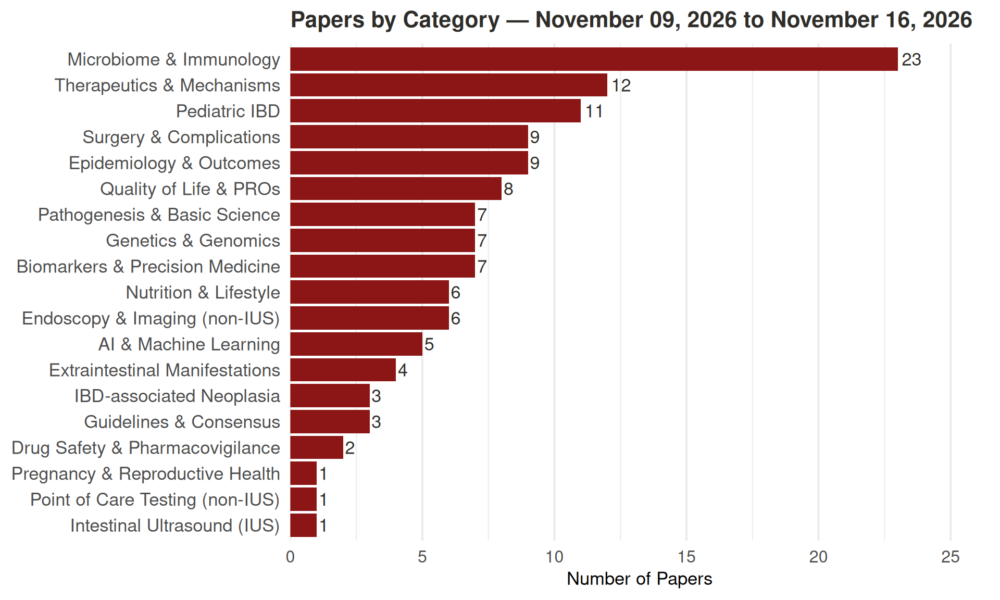

IBD Literature Report
Coverage: November 09, 2026 - November 16, 2026
125
Papers This Week
19
Categories
Papers by Category
Click a category to expand. Click a paper title to read its abstract.
Microbiome & Immunology (23 papers)
Fecal microbiota transplantation for pediatric Clostridioides difficile infection: efficacy, challenges, and the path to next-generation microbiome therapies.Review★ Gut microbes | 2026-11-16
Clostridioides difficile infection (CDI) is an increasing cause of morbidity in children, with recurrent disease posing substantial therapeutic challenges. Antibiotic therapy remains the cornerstone of initial management; however, up to 30% of children experience recurrence, and those with underlying comorbidities face recurrence rates as high as 65%. Fecal microbiota transplantation (FMT) has demonstrated superior efficacy over antibiotics for recurrent CDI (rCDI) in adults and has emerged as the most effective available intervention for pediatric rCDI. In this review, we synthesize current evidence on FMT efficacy, microbiome changes, and safety in children with CDI. Data from large multicenter cohort studies demonstrate cure rates exceeding 80%, with comparable efficacy observed in high-risk subpopulations, including those with inflammatory bowel disease and immunocompromising conditions. Critical research gaps remain, including the absence of randomized controlled trials and limited long-term safety data in children. Despite demonstrated effectiveness, significant barriers limit FMT accessibility for children. The COVID-19 pandemic has substantially impacted availability, and current regulatory changes have further restricted access. The lack of FDA-approved live biotherapeutic products approved for CDI in children creates additional challenges. We critically examine the emerging pipeline of next-generation microbiome-based therapies and identify the steps required to ensure children with recurrent CDI have access to safe, effective, and approved treatments.
Nicholson MR, Conrad MA, Diaz De Leon S, Strength R, Kelsen JR, Kahn SA, Hourigan SK
Ampelopsis grossedentata restores the homeostasis of Th17/Treg cells to mitigate DSS-induced ulcerative colitis through TLR1-2/NF-κB signaling pathway. Journal of ethnopharmacology | 2026-11-15
Ampelopsis grossedentata (AG), a traditional medicine from Southwest China, is frequently used to treat inflammation, anemopyretic cold, pharyngitis, hepatitis, and dysentery. Pharmacological studies confirmed that primary active constituents of AG, including flavonoids, profoundly affect anti-inflammatory processes and immunomodulation. However, the therapeutic effect and mechanisms of AG for ulcerative colitis (UC) are still unclear. This study aimed to elucidate the mechanisms of AG treatment of UC. UPLC-MS and network pharmacology were employed to identify the active components of AG and their potential anti-UC mechanisms. A 4% dextran sulfate sodium (DSS)-induced UC mouse model was established for assessing therapeutic efficacy of AG based on body weight, disease activity index, colon length, and histopathology of colon tissue. RT-qPCR, immunofluorescence assays and D-lactate levels were used to evaluate the inflammatory state and epithelial barrier integrity. Transcriptomic, proteomic, and flow cytometry analyses were performed to examine the underlying mechanisms. Molecular docking, molecular dynamics simulations, cellular thermal shift assay (CETSA), western blot and the TLR1/2 knockdown assays were used to identify and verify candidate targets. Five flavonoids in AG were characterized via UPLC-Q-TOF-MS/MS, with dihydromyricetin, taxifolin, myricitrin, and myricetin quantified by HPLC-DAD. Network pharmacology revealed 38 UC-related targets, enriched in IL-17/TNF signaling pathways. In vivo, AG alleviated UC-related symptoms, improved colon pathology, reduced the levels of pro-inflammatory cytokines (IL-1β, TNF-α, IL-6), upregulated tight junction proteins (ZO-1, claudin 5), and inhibited the nuclear translocation of NF-κB (P65 and P50). Transcriptomic, proteomic, and flow cytometry analyses indicated that AG regulated Th17/Treg balance via the NF-κB signaling pathway. Structure-based molecular docking, molecular dynamics simulations, CETSA western blot and the TLR1/2 knockdown assays revealed that AG may act through the TLR1-TLR2 heterodimer receptor. AG effectively attenuates DSS-induced UC, potentially by restoring Th17/Treg balance and inhibiting NF-κB signaling through the TLR1-TLR2 heterodimer. AG is thus a therapeutic candidate for UC treatment.
Xu J, Zhao D, Guo P, Pei Y, Xu L, Jiang X, Yang B, Xu Y
Probiotics and Prebiotics in Restoring Gastrointestinal Microbiota Dysbiosis: Emerging Alternatives to Antibiotic Therapy.Review International journal of food science | 2026-11-14
The human gastrointestinal (GI) microbiota is a complex and dynamic microbial ecosystem that plays a fundamental role in maintaining host metabolism, immune homeostasis, intestinal barrier integrity, and protection against pathogenic microorganisms. Disruption of this microbial community, known as gut dysbiosis, has been implicated in the pathogenesis of numerous GI and systemic diseases, including inflammatory bowel disease (IBD), irritable bowel syndrome (IBS), Clostridioides difficile infection, obesity, type 2 diabetes mellitus, colorectal cancer, and nonalcoholic fatty liver disease. Although antibiotics remain indispensable for the treatment of bacterial infections, their indiscriminate use frequently disrupts gut microbial composition, reduces microbial diversity, promotes opportunistic pathogen overgrowth, and accelerates the emergence of antimicrobial resistance. These limitations have stimulated increasing interest in microbiota-targeted interventions as safer and more sustainable therapeutic strategies. Probiotics and prebiotics have emerged as promising approaches for restoring gut microbial homeostasis through complementary mechanisms. Probiotics inhibit pathogen colonization, enhance intestinal barrier function, produce antimicrobial metabolites, and modulate host immune responses. Prebiotics selectively stimulate the growth and metabolic activity of beneficial microorganisms, promoting the production of short-chain fatty acids (SCFAs) that support intestinal and systemic health. Increasing evidence from experimental studies, randomized clinical trials, and meta-analyses demonstrates that these microbiota-directed interventions can reduce antibiotic-associated diarrhea, improve symptoms of IBD and IBS, enhance Helicobacter pylori eradication, decrease recurrence of C. difficile infection, and contribute to the management of several metabolic disorders. Despite these promising findings, important challenges remain regarding strain specificity, optimal dosage, treatment duration, product standardization, regulatory oversight, and interindividual variability in treatment response. Emerging advances in metagenomics, metabolomics, artificial intelligence, and precision medicine are facilitating the development of personalized microbiome-based therapies that may further enhance clinical outcomes. This review critically summarizes the current understanding of GI microbiota dysbiosis, discusses the mechanisms through which probiotics and prebiotics restore microbial balance, evaluates their clinical applications as alternatives or adjuncts to antibiotic therapy, and highlights existing challenges and future research directions for microbiome-based therapeutics.
Goa T, Wolde T, Sahilu E
Microbiota transplant therapy improves ulcerative colitis symptoms independent of donor engraftment in a pilot randomized placebo-controlled trial.★ Inflammatory bowel diseases | 2026-11-14
Several clinical trials have assessed microbiota transplant therapy (MTT) in ulcerative colitis (UC); however, none have assessed a standardized MTT product. We developed a standardized, oral, lyophilized MTT product and previously reported the primary endpoint of engraftment at week 12. Here, we assessed clinical outcomes and the association with donor engraftment. A single-center, randomized, double-blind, placebo-controlled pilot trial of patients with UC with an endoscopic Mayo score ≥1, who received MTT or placebo for 8 weeks. Symptom and fecal assessments occurred at baseline and weeks 4, 8, and 12. Secondary outcomes included the partial Mayo score (pMS) and correlation to donor engraftment. Stool microbiota were assessed via 16S rRNA sequencing and donor engraftment measured using SourceTracker. Participants receiving MTT (n = 13) had significantly higher donor engraftment at all measured time points compared with placebo (n = 14). Compared with baseline symptoms, participants who received MTT had significantly lower pMS at weeks 4 and 8, while no significant changes in pMS were noted in those randomized to placebo. There was no correlation between donor engraftment and pMS or clinical response. There was no significant pattern in engrafting donor taxa in those that met the threshold of clinical response at week 4 vs participants that did not meet clinical response. Daily dosing of encapsulated MTT for 8 weeks reduces symptoms of UC as measured by the pMS. However, donor engraftment did not correlate to pMS or clinical responses.NCT03948919, Fecal Transplant for Ulcerative Colitis, https://clinicaltrials.gov/study/NCT03948919.
Moutsoglou D, Nickols WA, Belhasan DC, Teigen L, Lopez S, Chen L, Kabage AJ, Fischer M, Staley C, Khoruts A
Prebiotic mannuronate oligosaccharides fortify the mucus barrier by binding host NLRP6 in a microbiota-independent manner.★ Cellular and molecular gastroenterology and hepatology | 2026-11-14
The beneficial effects of prebiotics are conventionally attributed to their fermentation by the gut microbiota. Here, we uncover a direct, microbiota-independent mechanism by which mannuronate oligosaccharides (MAOS) fortify the mucus barrier in a structure-dependent manner. We demonstrate that MAOS functions as a direct host agonist by binding the NLRP6 pyrin domain at Arg87 with high affinity (KD = 0.9 μM). This binding event triggers NLRP6 inflammasome assembly and subsequent caspase-1 activation, leading to the formation of non-lytic GSDMD pores specifically at the apical membrane of goblet cells. These pores facilitate mucin 2 (Muc2) secretion, thereby enhancing mucosal defense and limiting bacterial adhesion. Our findings establish MAOS as a novel class of NLRP6 agonist that enhances mucosal barrier function through a GSDMD-dependent secretory mechanism. This work highlights that specific glycan structures, rather than microbial fermentation, can directly engage host immune receptors. This opens a new avenue for developing structure-guided glycan-based therapeutics that act directly on the host immune system to treat inflammatory bowel disease (IBD) and other mucus barrier disorders.
Wu L, Tao Z, Wang G, Chen Y, Sun Z, Lu S
Identification and selective inhibition of patient-specific pathobionts in inflammatory bowel disease.★ Gut | 2026-11-12
Abstract not available.
Sabachvili M, Abbott S, Thomson C, Davoli Ferreira M, Ohland C, Fritscher J, Gekeler C, Tricomi M, Müller P, Drikic M
Effects of Two Lactobacillus Strains on Aloe Vera-Induced Melanosis Coli in Guinea Pigs and Their Potential Mechanisms. Probiotics and antimicrobial proteins | 2026-11-12
This study primarily elucidated the efficacy of Lactobacillus plantarum P-8 (P8) and Lactobacillus acidophilus 85 (LA85) against melanosis coli (MC), a non-inflammatory bowel disease characterized by colonic mucosal lipofuscin deposition, currently lacking specific therapeutic interventions. The MC guinea pig model was established via 8-week intragastric administration of Aloe Vera (AV). Colonic tissues were harvested after 4 weeks of daily oral Lactobacillus gavage. Gross observation, H&E staining, and Fontana-Masson staining were employed to assess therapeutic efficacy. Western blotting and TUNEL staining were utilized to evaluate apoptosis of intestinal epithelial cells. Gut microbiota was analyzed by 16S rRNA sequencing, and GC-MS was used to quantify short-chain fatty acid (SCFA) levels. P8 and LA85 significantly alleviated MC in guinea pigs, with effective reduction in melanosis area, restoration of colonic tight junction protein expression, and inhibition of intestinal epithelial cell apoptosis. Additionally, P8 and LA85 supplementation ameliorated gut microbiota composition, exhibiting increased abundance of Parabacteroides and Rikenellaceae_RC9_gut_group with reduction in norank_f__Eubacteriaceae. Furthermore, P8 supplementation was associated with significant reductions in the fecal levels of acetic acid, propionic acid, butanoic acid, valeric acid, and isohexanoic acid, whereas LA85 did not significantly alter the measured SCFA levels. P8 and LA85 significantly alleviated MC with inhibition of intestinal epithelial cell apoptosis and modulation of gut microbiota composition. These findings provide a scientific basis for utilizing P8 and LA85 as potential nutritional supplements in MC treatment.
Li D, Zhou L, Wu Q, Fang Y, Wang T, Kang L, Li Y, Yin Z, Zhang J
Cadmium sulfide nanoparticles exacerbate colitis via Faecalibaculum rodentium-mediated modulation of the indole-3-lactic acid-Th17 axis. Chemico-biological interactions | 2026-11-11
With the increasing application of cadmium sulfide nanoparticles (CdS-NPs), their potential adverse effects on intestinal health have attracted growing attention. However, the impact of CdS-NPs exposure on inflammatory bowel disease (IBD) and the underlying mechanisms remain unclear. Here, we demonstrate that daily oral gavage exposure to 1 mg/kg CdS-NPs for 4 weeks or 11 weeks alone did not induce apparent colonic inflammation in healthy mice but exacerbated both acute and chronic DSS-induced colitis, as evidenced by severe weight loss, increased disease activity, colon shortening, tissue damage, and immune infiltration. Integrated gut microbiota profiling and metabolomic analysis revealed that CdS-NPs markedly reduced the abundance and tryptophan-metabolizing capacity of Faecalibaculum rodentium (F. rodentium), leading to impaired indole-3-lactic acid (ILA) production. F. rodentium administration significantly alleviated CdS-NPs-aggravated DSS-induced colitis and restored serum ILA levels, accompanied by suppression of Th17 responses. Consistently, exogenous ILA treatment attenuated intestinal inflammation and suppressed Th17/IL-17 responses in vivo and inhibited Th17 differentiation in CD4+ T cells in vitro. Collectively, our findings identify microbial tryptophan metabolism and IL-17 signaling as critical mediators of intestinal inflammatory sensitization associated with CdS-NPs exposure and highlight the F. rodentium-ILA axis as a potential intervention target for CdS-NPs-induced intestinal inflammation.
Ni S, Xu S, Zhang Z, Pei W, Yuan W, Kadier D, Peng K, Liu X, Zhang Z, Li L
Hyaluronic acid-grafted pH-responsive microcarriers for CD44-targeted co-delivery of Lactobacillus rhamnosus GG and its extrusion-derived bacterial membrane vesicles to rebalance intestinal homeostasis. International journal of pharmaceutics | 2026-11-11
Inflammatory bowel disease (IBD) stems from gut dysbiosis, impaired intestinal epithelial barriers and persistent mucosal immune dysfunction. Free oral probiotics or probiotic-derived extracellular vesicles yield poor therapeutic effects against IBD, as they degrade rapidly in the gastrointestinal tract and lack specific tropism for inflamed colon lesions. To overcome these delivery limitations, we fabricated pH-responsive hyaluronic acid (HA)-decorated alginate microcapsules (ALHA@LGG&EBMVs) to co-deliver viable Lactobacillus rhamnosus GG (LGG) and extrusion-derived bacterial membrane vesicles (EBMVs). The electrosprayed Ca2+-crosslinked alginate skeleton confers robust gastric-acid protection, and surface-immobilized HA enables specific binding to CD44 overexpressed on inflamed colon epithelium. In vitro simulated gastric fluid assays revealed that the ALHA shell afforded superior protection to encapsulated LGG and EBMVs. In vivo fluorescence tracing on dextran sulfate sodium-induced colitic mice showed ALHA@LGG&EBMVs achieved 2.7-fold higher cargo accumulation at inflammatory colon sites with 24 h prolonged lesion retention relative to untargeted cargo-loaded alginate microcapsules (AL@LGG&EBMVs). In vivo therapeutic assays verified that the dual-cargo microcapsules mitigated colitis symptoms, restored epithelial tight junctions and reduced excessive intestinal epithelial permeability. Mechanistic studies revealed concurrent improvements across three key pathological dimensions: balancing the abnormal Th17/Treg ratio, promoting anti-inflammatory M2 macrophage polarization, and remodeling dysbiotic gut microbiota to expand beneficial commensals and reduce the abundance of pro-inflammatory pathobionts, which collectively facilitate the restoration of intestinal homeostasis. This polysaccharide delivery system integrates gastric-acid shielding and active inflammatory-lesion targeting to achieve multi-dimensional restoration of intestinal homeostasis. This proof-of-concept study offers a biocompatible microecological nanomedicine prototype for IBD intervention and establishes a blueprint for the development of oral gut-targeted biomaterials.
Ji Q, Chen H, Sun X
Dsg2 truncation causes a severe intestinal epithelial barrier breakdown and alters microbiome and immune response. JCI insight | 2026-11-10
Inflammatory bowel diseases (IBD) including Crohn’s disease (CD) are characterized by impaired intestinal epithelial barrier (IEB) function. Alterations in the desmosomal cadherin desmoglein 2 (Dsg2) have been linked to loss of IEB and intestinal inflammation in IBD. We investigated the pathogenic impact of a cytoplasmatic-truncating mutation in the desmosomal cadherin desmoglein 2 gene (DSG2) in an IBD patient. Genetic analysis of a CD patient revealed a likely pathogenic DSG2 mutation leading to a truncated protein lacking part of the intracellular domain. Generation of an enterocyte-specific mouse model to recapitulate the human mutation resulted in a lethal intestinal barrier defect which was evident in homozygous but not in heterozygous mice. In vitro, barrier defects correlated with changes in Dsg2 mobility and upregulation of pore-forming tight junction protein claudin-2. Organoids derived from heterozygous Dsg2 truncated mice exhibited increased epithelial susceptibility to proinflammatory cytokines. Bulk RNAseq followed by gene ontology analysis in homozygous mice revealed a skewed IL17/IL23 response overlapping with transcriptional changes in patients with CD. Furthermore, 16S rRNA sequencing revealed alterations in microbiome composition in animals that carried the Dsg2 truncation. In summary, a patient-derived mutation in the DSG2 gene causing cytoplasmic truncation in homozygous state induced a lethal intestinal barrier breakdown in mice paralleled by altered gut microbiota and intestinal immune response.
Kugelmann D, García-Ponce A, Thielemann N, Radeva MY, Anders M, Kang DE, Siadjeu C, Burkard N, Horn AK, Neubauer J
Microbiome changes following immigration: Rethinking “Westernization” as an explanatory concept.Review★ Gut microbes | 2026-11-10
An emerging focus in microbiome science is on changes to people’s microbiomes following immigration, particularly to so-called Western countries, such as the USA, Canada, and Australia. Moving to these regions has been linked to microbiome changes that may increase immigrants’ susceptibility to health problems, including obesity and Inflammatory Bowel Disease. The term “Westernization” (and adjacent terminology) is frequently used to describe changes in diet, lifestyle, and built environment - and the consequent microbiome shifts - associated with immigration. However, what Westernization means in this context, and whether it is an appropriate descriptor, is often unclear. The purpose of this article is to provide a review of the diverse meanings associated with the terms “West”, “Western”, “Westernization” (and similar) across microbiome-related research and broader uses. We argue that these terms can obscure the specific structural, environmental, and cultural factors shaping microbiome changes. We discuss the consequences of this imprecision and provide recommendations for future research. Avoiding oversimplified conclusions about what impacts immigrants’ microbiome and health can contribute to more accurate targets for public health interventions for these groups in the long term.
Sharma R, Holcomb LE, Ishaq SL, O’Doherty KC
The Microbiota-Metabolism Axis: Mechanistic Insights and Translational Targets Across Diabetes and Gastrointestinal Disorders.Review International journal of endocrinology | 2026-11-09
The gut microbiota (GM) modulates host energy balance, glucose-lipid metabolism, and enteroendocrine signaling through metabolite-receptor axes that include short-chain fatty acids (SCFAs) acting on FFAR2/FFAR3 (GPR43/GPR41), microbially transformed bile acids signaling via FXR/TGR5, and amino-acid/choline-derived compounds such as imidazole propionate (ImP) and trimethylamine N-oxide (TMAO). These pathways regulate incretin biology (GLP-1/PYY), insulin sensitivity, hepatic glucose output, adipose lipolysis, and appetite, thereby shaping risk and progression of Type 2 diabetes mellitus (T2DM), obesity, inflammatory bowel disease (IBD), irritable bowel syndrome (IBS), and related conditions. Here, we synthesize mechanistic and translational evidence, highlight bidirectional drug-microbiome interactions (GLP-1 receptor agonists), and review interventions spanning diet, pre/probiotics, fecal microbiota transplantation (FMT), and pharmacologic targeting of bile-acid and SCFA pathways. Together, these findings support precision strategies that profile GM-metabolite signatures (e.g., SCFAs, secondary bile acids, and ImP TMAO) to guide prevention and therapy in metabolic and gastrointestinal disease.
Akif A, Sultana N, Mikrani I
Fecal Microbiota Transplantation in the Treatment Strategy of Inflammatory Bowel Disease: Molecular Mechanisms, Clinical Evidence, and the Transition Toward Defined Microbial Therapeutics.Review International journal of molecular sciences | 2026-11-08
Inflammatory Bowel Disease (IBD) comprises two clinically and pathologically distinct chronic intestinal inflammatory diseases, ulcerative colitis (UC) and Crohn’s disease (CD). Both diseases result from a dysregulated mucosal immune response to the commensal gut microbiota in genetically predisposed individuals. Because gut dysbiosis is a constant feature of both diseases, Fecal Microbiota Transplantation (FMT) has recently been investigated as a potential therapeutic strategy to restore a balanced microbiota composition in patients with IBD. There are five placebo-controlled randomized controlled trials (RCTs) in UC and several meta-analyses, which showed that treatment with FMT using material from multiple donors can lead to clinical and endoscopic remission in patients with mild-to-moderate UC and may thus double to triple the rate of remission compared with placebo (number needed to treat [NNT] ≈ 3-5). In contrast, evidence for CD is limited and inconsistent, with one promising pilot study being contrasted with a large multicenter induction trial that was stopped for futility. This review provides an update of the current molecular understanding of FMT-induced recovery of mucosal barrier function and inflammation control in intestinal inflammation (α-diversity restoration and subsequent donor strain engraftment, production of short-chain fatty acids and secondary bile acids, tryptophan-AhR signaling, IL-10-mediated induction of Tregs vs. suppression of Th17 cells and restoration of epithelial barrier function). The review also summarizes the current clinical evidence for the use of FMT in IBD, its safety, and the current regulatory status. It also describes recent developments in FMT, including the use of defined bacterial consortia, ‘live biotherapeutic products’ (LBPs), and donor-recipient pairing. Collectively, FMT provides evidence of principle for manipulating intestinal microbial ecosystems to treat immune-mediated intestinal inflammation.
Pető A, Sipos D, Kappéter Á, Feiszt Z, Dembrovszky F, Halda-Kiss B, Péterfi Z
An engineered probiotic yeast converts extracellular ATP into adenosine to alleviate experimental colitis. Microbiological research | 2026-11-07
Inflammatory bowel disease (IBD) is a chronic relapsing intestinal disorder characterized by mucosal inflammation, epithelial barrier disruption, and gut microbial dysbiosis. Excessive extracellular ATP (eATP) accumulates in inflamed intestinal tissues and amplifies immune activation through purinergic signaling, whereas adenosine generated from extracellular nucleotide metabolism exerts immunoregulatory effects. Here, we engineered the probiotic yeast Saccharomyces boulardii to sense eATP and convert it into adenosine through a CRISPR-engineered dual-enzyme pathway consisting of apyrase and 5’-nucleotidase. The engineered strain showed ATP-responsive pathway activation and efficiently generated adenosine from eATP, allowing extracellular nucleotide metabolism to be modulated in inflammatory settings. Oral administration of this strain significantly alleviated disease severity in acute dextran sulfate sodium (DSS)-induced colitis and showed beneficial effects in a repeated-DSS model, improved barrier-related epithelial features, reduced pro-inflammatory cytokine production, and supported mucosal recovery. Integrated microbiome and transcriptome analyses further showed partial restoration of gut microbial community structure, partial recovery of predicted microbial purine-related pathways, and attenuation of mucosal T-cell activation. Together, these findings indicate that engineered Saccharomyces boulardii can regulate extracellular purine metabolism in the inflamed gut and provide a microbial strategy for modulating intestinal inflammation.
Liu H, Zhang M, Wu W, Deng Q, Li X, Ma R, Bai L, Huang B
Effects of a Two-Strain Lactobacillus Formulation (Lactobacillus rhamnosus L34 and Lactobacillus paracasei B13) on Inflammatory and Oxidative Markers, Epithelial Junction Proteins, and Fecal Microbiota in Rats with DNBS-Induced Colitis. International journal of molecular sciences | 2026-11-06
Inflammatory bowel disease (IBD) involves dysregulated mucosal immunity, oxidative stress, impaired epithelial barrier integrity and gut microbial dysbiosis. We evaluated a two-strain formulation of Lactobacillus rhamnosus L34 and Lactobacillus paracasei B13 in DNBS-induced colitis. Twenty-four male Sprague Dawley rats were randomised into three groups (n = 8): control, acute colitis (AC; DNBS 35 mg/0.25 mL per rat rectally on days 0 and 1), and probiotic treated (RP; 3.6 × 109 CFU daily by gavage, days -3 to 6). DNBS raised Ameho histological scores, serum TNF-α, colonic MDA and MPO positivity and lowered IL-10, occludin and claudin-1 (all p < 0.05). Relative to AC, probiotic-treated rats showed lower TNF-α (p = 0.002) and MPO positivity (p < 0.001) and higher IL-10 (p = 0.001), occludin (p = 0.014) and claudin-1 (p = 0.001). Colonic MDA and Ameho scores were numerically lower in the RP group but these differences did not reach statistical significance (p = 0.085 and p = 0.310). Serum IL-17A was unchanged. Microbial community composition differed among groups (PERMANOVA pseudo-F = 5.798, R2 = 0.356, p = 0.0001), with the probiotic-associated community distinct from both control and colitis communities; distance-based analysis detected no convergence toward the control community. The formulation attenuated inflammatory and barrier outcomes and altered microbiota composition without restoring it.
Rattanachaisit P, Lerttanatum N, Tumwasorn S, Chuaypen N, Dissayabutra T, Werawatganon D
Gut Microbiota as a Potential Modulator of Response to Biologic and Small-Molecule Therapies in Inflammatory Bowel Disease.Review International journal of molecular sciences | 2026-11-03
The therapeutic landscape of inflammatory bowel disease (IBD) has expanded substantially with the development of biologic and small-molecule therapies. Nevertheless, many patients fail to respond to these treatments or experience a secondary loss of response. The mechanisms underlying treatment failure remain incompletely understood. Given the ability of gut microorganisms to modify therapeutic compounds, sustain pro-inflammatory immune activation, alter intestinal barrier function and produce bioactive metabolites, the gut microbiota may represent an important modulator of therapeutic response. To summarize current evidence on the role of the gut microbiota in response to biologic and small-molecule therapies in IBD, with particular emphasis on potential mechanisms of drug-microbiota interactions and their implications for treatment response and non-response. Accumulating evidence suggests that the gut microbiota may influence therapeutic efficacy through direct modification of drugs and indirect effects mediated by host immunity, intestinal barrier function and microbial metabolites. Microbial signatures associated with response to individual biologic therapies have been identified, although findings remain heterogeneous. Emerging evidence also indicates that non-bacterial components of the gut ecosystem may contribute to treatment response. The gut microbiota represents a biologically plausible modulator of therapeutic response in IBD. Integration of microbiome data with host genetic and immunological features may help identify biomarkers capable of predicting response to individual therapeutic agents.
Margul K, Krawczyk A
Caffeic acid regulates the gut microbiota-tryptophan metabolic axis to improve intestinal barrier function and relieve ulcerative colitis.★ Phytomedicine : international journal of phytotherapy and phytopharmacology | 2026-11-01
Ulcerative colitis (UC) is a chronic inflammatory bowel disease for which current therapies remain inadequate. Caffeic acid (CA), a natural hydroxycinnamic acid polyphenol, possesses anti-inflammatory and antioxidant properties. However, whether CA engages the gut microbiota-tryptophan-aryl hydrocarbon receptor (AHR)-Nrf2 axis in UC has not been established. To evaluate the anti-UC activity of CA in vivo and in vitro and to elucidate its underlying mechanisms through a multi-platform integrative strategy. A dextran sulfate sodium (DSS)-induced murine colitis model and lipopolysaccharide (LPS)-stimulated mouse colonic epithelial cells (MCECs) were used in parallel. Mechanism was addressed by combining microbiota, metabolomic, transcriptomic and proteomic profiling with faecal microbiota transplantation, computational and biophysical target validation, and siRNA-mediated AHR knockdown. CA was administered at 10 and 20 mg/kg/day, with 5-aminosalicylic acid as positive control. Complementary platforms included 16S rRNA gut microbiota sequencing, untargeted serum metabolomics, colonic transcriptomic profiling, data-independent acquisition mass spectrometry proteomics, human UC single-cell RNA sequencing (GEO: GSE214695), faecal microbiota transplantation into antibiotic-pretreated recipients, molecular docking, 100 ns molecular dynamics simulation, cellular thermal shift assay, dual-luciferase reporter assay, and co-immunoprecipitation. CA dose-dependently alleviated dextran sulfate sodium-induced colitis, suppressed NF-κB activation, and reduced interleukin-6, interleukin-1β, and tumour necrosis factor alpha. Gut microbiota profiling revealed enrichment of Bifidobacterium and Dubosiella with depletion of Escherichia-Shigella. Transplantation of the CA-remodelled microbiota into antibiotic-pretreated recipients reproduced the protective phenotype and restored colonic AHR and cytochrome P450 1A1 expression, demonstrating that the remodelled community is sufficient to confer protection. Metabolomics showed enrichment of serotonin-branch tryptophan metabolites, with 5-hydroxytryptamine among the most significantly enriched differential metabolites. Molecular docking and 100 ns molecular dynamics simulation indicated stable binding of CA within the AHR ligand-binding domain, cellular thermal shift assay confirmed intracellular target engagement, and a dual-luciferase reporter assay demonstrated concentration-dependent activation of dioxin response element-driven transcription, establishing CA as an AHR agonist. CA increased Nrf2, NQO1 and HO-1 and restored Claudin-1, Occludin and zonula occludens-1; AHR knockdown reduced these effects and the suppression of NF-κB, indicating that both actions depend on AHR. CA ameliorates UC through convergent AHR activation, arising from both microbiota-mediated tryptophan reprogramming and direct receptor binding, with AHR-dependent Nrf2/NQO1/HO-1 induction and NF-κB suppression to restore intestinal barrier integrity. These findings support CA as a multi-target phytochemical candidate for UC treatment.
Lin X, Alioui Y, Wang W, Wu L, Ao J, Yan C, Liao J, Wang Z, Wu Y, Feng Y
Synbiotic of 2’-FL and B. longum subsp. infantis BXY2 Alleviates Colitis in Toddler Microbiota-Associated Mice: Potential Involvement of Gut Microbial Arachidonic Acid Metabolism. Journal of agricultural and food chemistry | 2026-11
Increasing inflammatory bowel disease (IBD) incidence in toddlers requires safe interventions. We developed a synbiotic combining 2’-fucosyllactose (2’-FL) with Bifidobacterium strain and evaluated its protective efficacy against DSS-induced colitis in toddler microbiota-associated (TMA) mice. Among 30 Bifidobacterium strains, Bifidobacterium longum subsp. infantis BXY2 and Bifidobacterium. breve BG4 utilized 2’-FL in vitro. However, only the 2’-FL and BXY2 synbiotic significantly alleviated colitis. The 400 mg/kg 2’-FL and BXY2 synbiotic showed the greatest protective effect, restoring body weight and colon length, reducing disease activity and histological scores, improving barrier function, attenuating inflammation. Compared with 2’-FL or BXY2 alone, the synbiotic enhanced goblet cells and barrier proteins. Metagenomics revealed enrichment of B. longum subsp. infantis and Phascolarctobacterium faecium. Metabolomics showed reduced fecal arachidonic acid (AA). These results indicated that gut microbial AA metabolism might be involved in alleviating colitis in TMA mice. Thus, this synbiotic is a promising preventive strategy for toddler IBD.
Jing Y, Bai X, Li J, Feng X, Gu Y, Ji Y, Zhai Z, Hao Y
Integration of gut microbiota metabolites, NOD2-related inflammatory network, and medicinal food homologous plants identifies IL1B and MMP1 as key targets in Crohn’s disease. The Journal of pharmacy and pharmacology | 2026-11
Crohn’s disease is a chronic inflammatory bowel disease associated with gut microbiota imbalance and immune dysregulation. This study aimed to identify candidate key protein targets of Crohn’s disease and explore candidate therapeutic compounds derived from gut microbiota metabolites and medicinal plants. Gene expression data from Crohn’s disease patients were obtained from public databases. Hub targets of gut microbiota metabolites were retrieved from the gutMGene database, and NOD2-related genes were obtained from GeneCards. Differentially expressed genes were identified using machine learning combined with feature attribution analysis. Subcellular localization and external datasets were used for validation. Drug-likeness and toxicity of microbial metabolites were assessed, and active compounds from medicinal plants were predicted via database mining and validated by molecular docking. Interleukin-1 beta and matrix metalloproteinase-1 were identified as key genes. Seven gut microbiota-derived metabolites showed favourable drug-likeness without predicted carcinogenicity or hepatotoxicity. Several compounds from Panax ginseng and Scutellaria baicalensis exhibited strong binding affinity to the target proteins. Interleukin-1 beta and matrix metalloproteinase-1 are candidate key proteins in Crohn’s disease and are associated with the NOD2-related downstream inflammatory network, including nuclear factor kappa-B signalling. Gut microbiota metabolites may influence this network and represent candidate molecules for further investigation.
Wang Z, You Y, Song X, Yuan T, Zhang Z, Liu P
Targeted Dual-Responsive Probiotic Microspheres for Sequential Protection, Adhesion, and On-Demand Release in Ulcerative Colitis Therapy. Biomacromolecules | 2026-11
Oral probiotics show promise for inflammatory bowel disease but are limited by poor gastrointestinal viability, targeting, and colonization. We developed a multi-targeting probiotic composite microsphere (PCM) via scalable solution blow-spinning, with >20-fold higher throughput than electrospinning. PCMs provide three key functions: (1) pH-triggered probiotic protection: PCMs contract in gastric acid, shielding probiotics and increasing survival 2162-fold over free probiotics; (2) charge-mediated adhesion: negatively charged microspheres adhere to positively charged mucin overexpressed at inflamed colonic lesions; and (3) enzyme-triggered release: overexpressed hyaluronidase degrades hyaluronic acid, releasing viable bacteria via the “Trojan horse” mechanism. This sequential mechanism ensures high local probiotic density at inflamed sites. In DSS-induced mouse colitis, PCMs outperformed 5-aminosalicylic acid in alleviating inflammation, repairing the mucosal barrier, and restoring microbial homeostasis. 16S rRNA sequencing showed selective enrichment of beneficial genera and suppression of inflammation-associated pathobionts. This scalable, multi-responsive platform offers next-generation oral therapy for IBD and microbiome-associated gastrointestinal diseases.
Liu S, Chen W, Chen L, Wang Y, Zhou L, Yin Q, Wang Z, Wang D, Lu Z
The Emerging Role of Postbiotics Against Microplastics-Induced Inflammatory Bowel Disease.Review Foods (Basel, Switzerland) | 2026-10-30
Microplastics (MPs), particularly those composed of polystyrene (PS), pose significant toxicological risks to humans, especially through oral exposure. Increasing evidence suggests that MPs contribute to the development of inflammatory bowel disease (IBD). Postbiotics have recently gained attention for their protective effects against various chemical pollutants, including MPs. They can alleviate MP-induced IBD through several mechanisms, such as anti-inflammatory activity, immunomodulatory effects, inhibition of pathogenic bacterial growth, and maintenance of intestinal barrier integrity. This review highlights the definitions of postbiotics, as well as their biological roles in the prevention and treatment of microplastics-induced inflammatory bowel disease.
Khani N, Rajabi S, Ziavand M, Abedi-Soleimani R, Shokouhian SMJ, Saedi S, Homayouni-Rad A
Short-Chain Fatty Acids as Modulators of the Gut-Immune Axis in Inflammatory Bowel Disease: Linking Metabolism, Immune Regulation, and Epithelial Barrier Function.Review International journal of molecular sciences | 2026-10-29
Inflammatory bowel diseases (IBDs), which include Crohn’s disease (CD) and ulcerative colitis (UC), are chronic conditions associated with abnormalities in the immune response, gut microbiota dysbiosis, and disruption of the intestinal barrier homeostasis. A growing body of evidence suggests that the gut-immune axis plays a key role in the pathogenesis of IBD, and that metabolites of microbial origin influence the regulation of the immune response and the maintenance of intestinal barrier integrity. Particular importance is attributed to short-chain fatty acids (SCFAs), such as acetate, propionate, and butyrate. The aim of this review is to present the current knowledge regarding the role of SCFAs as modulators of the gut-immune axis in IBD, with particular emphasis on their mechanisms of action and therapeutic potential. Physiologically, SCFAs are produced through the fermentation of dietary fiber by the gut microbiota. However, in IBD, the composition of the gut microbiota is often disrupted. SCFAs influence the expression of inflammatory genes and regulate the function of immune cells. Furthermore, butyrate in particular strengthens the integrity of the intestinal barrier by improving the function of tight junctions (TJs), increasing mucus production, and supporting epithelial regeneration. SCFAs represent an important link between diet, the gut microbiota, and immunity. Strategies to increase their availability may represent a promising approach to supporting IBD treatment, but they require further evaluation in well-designed clinical trials involving humans.
Piątek D, Sokal-Dembowska A, Strycharz-Dudziak M, Jarmakiewicz-Czaja S
Th17 suppression strategies: targeting IL-17 and RORγt pathways in autoimmune diseases.Review Frontiers in immunology | 2026-10-27
T helper 17 (Th17) cells and their key effector cytokine, particularly IL-17A and IL-17F, play central roles in host defense against extracellular pathogens. However, they are also critically involved in the pathogenesis of many autoimmune and inflammatory diseases. Th17 cell differentiation, stabilization, plasticity, and pathogenicity are regulated by a network of cytokines and transcription factors, including IL-6, TGF-β, IL-23, STAT3, and the key transcription factor RORγt. RORγt-dependent pathways are also relevant to other immune populations, including group 3 innate lymphoid cells (ILC3s), highlighting the complexity of the IL-17 axis across tissues. Dysregulation of these pathways can lead to chronic inflammation and tissue damage in diseases such as psoriasis, rheumatoid arthritis, multiple sclerosis, and inflammatory bowel disease. Therapeutic targeting of the Th17 axis has led to clinically established approaches, particularly direct blockade of IL-17 signaling and inhibition of IL-23, whereas direct RORγt inhibition remains an investigational strategy. RORγt inhibitors may modulate Th17 differentiation and broader RORγt-dependent transcriptional programs, but their clinical development has been challenged by variable efficacy, safety considerations, and translational limitations. This review provides a comprehensive overview of Th17 biology, focusing on differentiation, plasticity, tissue-specific functions, and the contribution of Th17 and other RORγt-expression populations to autoimmune diseases. Furthermore, it critically compares established IL-17-targeted therapies with emerging RORγt inhibitors, emphasizing their distinct mechanisms, cellular and molecular targets, clinical evidence, safety, and developmental status. Finally, we discuss combination strategies, translational challenges, and emerging biomarkers that may contribute to more individualized therapeutic approaches and patient stratification.
Zian Z, Aliyu M, Hossain F, Zohora FT, Ceylan A, Ben Moussa N, Hsieh WJ, Abbes F, Abubakar SD, Azizi G
Therapeutics & Mechanisms (12 papers)
Establishment of a Multi-Stage In Vitro Screening Platform to Identify Candidate Compounds for Intestinal Mucosal Damage in Inflammatory Bowel Disease.★ Advanced healthcare materials | 2026-11-16
Mucosal healing is a key therapeutic goal in inflammatory bowel disease (IBD), which is characterized by mucosal lesions in the gastrointestinal tract. For IBD drug development, it is important to identify multiple compounds with strong effects on mucosal injury and different mechanisms of action. Here, we established an intestinal organoid-based assay to evaluate cytokine-induced inflammatory and epithelial stress responses. We also developed an intestinal microphysiological system (intestinal MPS)-based assay for quantitative evaluation of cytokine-induced changes in mucosal architecture. By integrating these assays, we constructed a multi-stage screening platform to identify candidate compounds that suppress inflammatory responses and preserve mucosal architecture. Tofacitinib, an approved IBD drug, showed positive effects in these assays, supporting the relevance of this platform. Although organoid-based screening identified pimitespib as a candidate compound, pimitespib did not improve mucosal architecture in the intestinal MPS. Consistently, pimitespib failed to restore mucosal morphology in an IBD mouse model. These findings suggest that combining intestinal organoids with an intestinal MPS may help identify candidate compounds that suppress inflammatory responses while preserving mucosal architecture.
Yokoi F, Deguchi S, Fuse H, Ohta A, Hashimoto R, Kosugi K, Negoro R, Yamamoto T, Takayama K
Selective IL-23p19 blockade in moderate-to-severe Crohn’s disease: the role and limitations of risankizumab in complex populations.Review Expert review of clinical pharmacology | 2026-11-15
Crohn’s disease (CD) remains a major clinical challenge, since many patients fail biologics or lose response. Selective IL-23p19 blockade is mechanistically attractive, targeting the IL-23/Th17 axis while preserving IL-12-dependent host defense. Risankizumab, the first selective IL-23p19 inhibitor approved for CD, is increasingly used in advanced therapy-experienced patients. This narrative review summarizes risankizumab pharmacology, pivotal trial data, real-world effectiveness and safety in moderate-to-severe CD, emphasizing biologic-experienced and multiply exposed populations, based on PubMed, Scopus and Google Scholar searches (from inception to October 2026). It also examines difficult-to-treat phenotypes (postoperative recurrence, CD of the pouch, perianal, fistulising and stricturing disease, extraintestinal manifestations) and compares risankizumab with other IL-23p19 inhibitors. Positioning is discussed in light of the SEQUENCE trial and 2025 ACG and AGA guidelines, together with unresolved issues: special populations, predictive biomarkers and investigational combination therapy. Risankizumab is not a universal solution for refractory CD, but it is one of the best-supported options after anti-TNF failure, particularly for endoscopic outcomes. Evidence in multiply exposed patients and difficult-to-treat phenotypes is largely observational, and superiority over anti-TNF agents as first-line therapy is unproven. Major gaps persist in fistulising disease, special populations, head-to-head comparisons, predictive biomarkers, and sequencing or combination strategies.
Di Vincenzo F, Iaccarino J, Privitera G, Bezzio C, Laterza L, Scaldaferri F, Armuzzi A
A nomogram integrating clinical and radiological data to predict long-term infliximab efficacy in Crohn’s disease. European radiology | 2026-11-15
Infliximab (IFX) is a monoclonal antibody to treat Crohn’s disease (CD), but loss of response is common. We aimed to develop an effective nomogram to predict long-term outcomes of IFX. A retrospective observational study was conducted on CD patients receiving regular IFX. The endpoint was defined as loss of response within 78 weeks, further classified as uncomplicated or complicated. Baseline characteristics, pre- and postinduction clinical indicators, and computed tomography enterography imaging features were collected. Candidate predictors were selected using the least absolute shrinkage and selection operator (LASSO) regression and multivariable logistic regression to construct a clinical-radiological nomogram, validated using receiver operating characteristic (ROC) analysis, decision curve analysis, and calibration plots. Kaplan-Meier analysis evaluated the clinical implications of predictor cut-off values. The study enrolled 165 patients, with 112 in the training cohort and 53 in the validation cohort. LASSO-logistic regression revealed erythrocyte sedimentation rate (ESR) at week 14 and maximum small bowel wall thickness (SBWT-max) at baseline as independent predictors of long-term non-response. The nomogram achieved an area under the curve (AUC) of 0.834 (training) and 0.913 (validation) for loss of response, and 0.746 and 0.876 for uncomplicated and complicated loss of response, respectively. Validation of the nomogram confirmed its discriminative, calibrating, and clinical utility. Additionally, ESR at week 14 > 10.5 mm/h or baseline SBWT-max > 7.5 mm showed reduced response duration. The feasible nomogram combining ESR postinduction and SBWT-max at baseline effectively predicts long-term efficacy of IFX, which guides the therapy for CD patients. QuestionLoss of response to infliximab is common in Crohn’s disease, yet a reliable tool to predict long-term efficacy and guide timely therapeutic decisions remains rare. FindingsA nomogram based on LASSO-logistic regression integrating postinduction ESR and baseline maximum small bowel wall thickness accurately predicted long-term loss of response, including complicated failure. Clinical relevanceThis validated nomogram enables early, risk-stratified identification of patients likely to develop uncomplicated versus complicated loss of response, guiding proactive therapy switch and personalized management in Crohn’s disease.
Shi X, Chen X, Rao S, Liu T, Wu H
Sequence-dependent real-world efficacy of anti-TNF antibodies and vedolizumab in ulcerative colitis: a propensity score-weighted cohort study. BMC gastroenterology | 2026-11-14
Previous exposure to advanced treatments for IBD is considered to reduce remission rates in further therapy lines and optimal treatment sequences remain to be established. We performed a retrospective propensity score-weighted cohort study including a total of 219 patients (281 therapy lines) with ulcerative colitis (UC) to compare the efficacy of first-line vedolizumab with second-line vedolizumab after previous anti-TNF and vice versa. While second-line vedolizumab after first-line anti-TNF resulted in clearly lower rates of clinical and steroid-free remission after 52 weeks compared with first-line vedolizumab, no statistically significant reduction in clinical or steroid-free remission was detected for second-line anti-TNF after first-line vedolizumab compared with first-line anti-TNF. Exposure to vedolizumab was not associated with a statistically significant reduction in the effectiveness of subsequent anti-TNF antibodies in second-line therapy of UC, whereas prior exposure to anti-TNF antibodies was associated with a statistically significant reduction in the effectiveness of subsequent vedolizumab. These findings support considering vedolizumab as a first-line treatment option, although direct comparisons of treatment sequences are needed to determine the optimal treatment strategy.
Assel F, Schramm S, Müller TM, Haberkamp S, Rouse-Merkel R, Atreya R, Neurath MF, Zundler S
[Adjunctive enteral nutrition in Crohn’s disease during biologic therapy: More than a supportive measure? A narrative review]. Zeitschrift fur Gastroenterologie | 2026-11-13
This narrative review aimed to critically evaluate evidence for combining enteral nutrition (EN) with biologic therapy in adults with Crohn’s disease (CD). PubMed, Embase and the Cochrane Library were searched on EN combined with biologics, incl. infliximab, adalimumab, vedolizumab, and ustekinumab. Studies published from 01/2018-06/2026 and current clinical guidelines were considered. The evidence was evaluated regarding clinical effectiveness and methodological limitations. Current evidence suggests that adding enteral nutrition to biologic therapy may relatively increase clinical and endoscopic remission rates by up to 50 % compared with biologic monotherapy. The potential benefit may be due to enhanced mucosal healing, alterations in the intestinal microbiome, and improved pharmacokinetics. Higher rates of transmural healing and lower relapse, treatment escalation, and surgery rates have also been reported. While exclusive EN has a broader evidence base, partial EN may offer advantages in clinical practice because of its greater feasibility and acceptability. Evidence is limited by selection bias, heterogeneous treatment protocols and lack of blinding. Combining EN with biologics is a promising therapeutic approach for adults with CD. Prospective RCTs are needed to establish efficacy, safety and optimal use of exclusive and partial EN. Ziel dieser narrativen Übersichtsarbeit war es, die Evidenz für die Kombination enteraler Ernährung (EN) mit Biologika bei Erwachsenen mit Morbus Crohn (MC) kritisch zu bewerten.Es erfolgte eine Literaturrecherche in PubMed, Embase und der Cochrane Library zu EN in Kombination mit Biologika, u.a. Infliximab, Adalimumab, Vedolizumab und Ustekinumab. Berücksichtigt wurden Studien von 1/2018–6/2026 sowie aktuelle Leitlinien. Die verfügbare Evidenz wurde hinsichtlich klinischer Wirksamkeit und methodischer Limitationen bewertet.Die aktuelle Evidenz deutet darauf hin, dass EN ergänzend zur Biologikatherapie die klinischen und endoskopischen Remissionsraten gegenüber einer Biologikamonotherapie relativ um bis zu 50% erhöhen könnte. Der potenzielle Nutzen wird auf eine verbesserte mukosale Heilung, Veränderungen des intestinalen Mikrobioms und eine günstigere Pharmakokinetik zurückgeführt. Zudem wurden höhere Raten transmuraler Heilung sowie geringere Rezidiv-, Therapieeskalations- und Operationsraten beschrieben. Während für die exklusive EN eine breitere Evidenzbasis vorliegt, könnte die partielle EN aufgrund besserer Praktikabilität und Akzeptanz Vorteile bieten. Die Aussagekraft wird durch Selektionsbias, heterogene Therapieprotokolle und fehlende Verblindung eingeschränkt.Die Kombination von enteraler Ernährung und Biologika ist ein vielversprechender Therapieansatz bei Erwachsenen mit MC. Prospektive RCTs sind erforderlich, um Wirksamkeit, Sicherheit und den optimalen Einsatz von EEN und PEN zu bestimmen.
Peters S, Tessmer L, Dignass A, Stein J
Comparative Risk of Cancer with non-TNF Advanced Therapies Versus Anti-TNF Therapy in Inflammatory Bowel Disease.★ The American journal of gastroenterology | 2026-11-12
Safety is important when selecting advanced therapies for inflammatory bowel disease (IBD). Safety data for anti-interleukin therapy (anti-IL) or vedolizumab come from trials with limited follow-up, and direct comparisons with anti-tumor necrosis factors (anti-TNFs) for incident cancer are lacking. We evaluated cancer incidence in patients with IBD treated with anti-IL therapy or vedolizumab versus anti-TNFs. We conducted a retrospective cohort study of adults with IBD and no prior cancer who initiated anti-IL therapy, vedolizumab or anti-TNFs. Our primary outcome was incident cancer from 90 days after therapy initiation through discontinuation. We calculated incidence rates and performed Cox proportional hazards models. We identified 4,019 advanced therapy starts: 995 anti-IL, 692 vedolizumab, and 2,332 anti-TNF starts, with mean therapy duration of 1096 days. In multivariable analysis, there was a trend towards a lower hazard of all cancers among anti-IL users compared to anti-TNF users (HR 0.47; 95% CI 0.21-1.04), which was significant on sensitivity analyses. There was no difference in hazard of skin cancers (HR 1.56; 95% CI 0.39-6.15); however, the hazard of non-skin cancer was significantly lower among anti-IL users compared to anti-TNF users (HR 0.28; 95% CI 0.09-0.81). When comparing vedolizumab to anti-TNFs, there was no significant difference in the hazard of all cancer (HR 0.52, 95% CI 0.24-1.12) and non-skin cancer (HR 0.63, 95% CI 0.29-1.39). We found no evidence of an increased cancer risk with anti-IL therapy compared with anti-TNF therapy in patients with IBD. There was no difference in the cancer risk between vedolizumab and anti-TNF therapy.
Ibrahim MK, Wanchaitanawong W, Tripathi I, Anvari S, Xiong X, Cai T, Ananthakrishnan AN
Real-world effectiveness and safety of upadacitinib in Crohn’s disease up to 18 months. UPITA-Crohn: a multicentre cohort study. Revista espanola de enfermedades digestivas | 2026-11-12
Long-term real-world evidence on upadacitinib in heavily pretreated Crohn’s disease remains limited. We assessed its effectiveness, persistence and safety up to 18 months. This multicentre ambispective study included 233 adults treated with upadacitinib at 15 Spanish hospitals. Clinical remission (Harvey-Bradshaw index below 5), steroid-free remission and clinical-biochemical remission were assessed at week 12 and at 6, 12 and 18 months. Modified non-responder imputation was the primary analysis, with classic non-responder imputation and as-observed analyses as sensitivity analyses. Persistence and adverse events attributed to upadacitinib were recorded. Patients had received a median of two prior advanced therapies; median exposure was 15.9 months (327.1 patient-years). With modified non-responder imputation, clinical remission at week 12, 12 months and 18 months was 51.1%, 40.5% and 33.3%; steroid-free remission, 46.1%, 33.1% and 25.8%; and clinical-biochemical remission, 13.9%, 16.9% and 10.0%. At 18 months, clinical remission was 24.1% with classic non-responder imputation and 64.1% as observed. Persistence at 18 months was 60.3%. Remission was numerically higher after one than after two or more prior advanced therapies, without significant differences. Adverse events attributed to upadacitinib occurred in 27.0% of patients and led to discontinuation in 4.7%; four major cardiovascular or thrombotic events were recorded. In heavily pretreated patients, upadacitinib was associated with sustained clinical remission in a relevant proportion through 18 months, with infrequent discontinuation for adverse events. Long-term estimates depended substantially on the handling of discontinuations and missing assessments.
Caballero-Mateos AM, Rodríguez-González FJ, Hernández-Martínez Á, Lázaro M, Camargo-Camero R, Martín-Rodríguez MDM, Fernández-García R, Ruiz-Sánchez A, Agulleiro I, Olmedo-Martín R
Association of corticosteroids and biologics use for inflammatory bowel disease with surgical outcomes following knee or hip arthroplasty. Crohn’s & colitis 360 | 2026-11-12
The impact of corticosteroid and biologic therapy use among patients with inflammatory bowel disease (IBD) on postoperative complications in arthroplasties remains uncertain. This study aims to evaluate the association between preoperative corticosteroids or anti-tumor necrosis factor (TNF) use in patients with IBD and the risk of orthopedic-specific complications following arthroplasty. This retrospective study utilized TriNetX with propensity score matching. Patients prescribed corticosteroids or anti-TNF medications, within 3 months prior to hip or knee arthroplasty were included. Outcomes included prosthetic joint infection (PJI), prosthesis dislocation, and wound disruption categorized into early and late events. In corticosteroid cohort, early PJI and prosthesis dislocation risk were higher compared to controls with odds ratio (OR) of 1.71 (95% confidence interval [CI] 1.08-2.72; P = .021) and 2.03 (95% CI 1.17-3.53; P = .010), respectively. Wound disruption was not different between groups. In patients on anti-TNFs, the risk of early and late PJI were not significantly increased in patients compared to controls, ORs of 1.08 (95% CI 0.65-1.80; P = .76) and 1.79 (95% CI 0.88-3.64; P = .11), respectively. Early prosthesis dislocation and wound disruption risks were not increased. Preoperative corticosteroid use in patients with IBD was associated with increased early risks of PJI and dislocation after arthroplasty. Preoperative anti-TNF exposure was not associated with a statistically significant increase in adverse orthopedic outcomes. These findings highlight the importance of minimizing perioperative corticosteroids while suggesting that recent anti-TNF exposure might not be associated with increased surgical complications. Further research is needed to confirm these findings.
Laoveeravat P, Odah T, Ghoz H, Hashash JG, Farraye FA
Retrospective observational study of disparities in biologic therapy access for inflammatory bowel disease in New Zealand (2016-2020); using official information ACT (OIA) data. The Medico-legal journal | 2026-11-12
Equitable access to biologic therapy for inflammatory bowel disease is an issue. All 20 district health boards were approached under the Official Information Act to provide anonymised information on the number of patients with inflammatory bowel disease who were treated with biologics between 2016 and 2020, by ethnicity. Expected numbers were calculated from population and prevalence data. The proportions of patients in various minority communities and the White New Zealand Population were compared using a z statistic. Only seven Health Boards replied and more than 1800 patients were admitted to hospital or a day case unit to initiate therapy with a biologic. The main findings were: no significant overall difference between the observed number of Maori patients who had received biologic therapy compared to expected; no difference in access to biologics in the South Asian community; in Taranaki, which treated the largest number of patients significantly fewer Maori patients were treated than would be expected (z = -3.07, p < 0.002); and in Counties Manukau, which has a large South Asian population, significantly fewer members of the community with inflammatory bowel disease received biologic therapy than would have been expected (z = 4.4, p < 0.00001). The implications of these findings are discussed. Inequitable access to biologic therapies means that patients with inflammatory bowel disease will have a poorer quality of life and have a greater need for surgery.
Farrukh A, Mayberry JF
No detectable remission-specific remodeling of intestinal monocyte and macrophage metabolic transcriptional programs after adalimumab in Crohn’s disease: A patient-level reanalysis of a longitudinal single-cell atlas. PloS one | 2026-11-11
We examined whether remission after adalimumab in Crohn’s disease (CD) was associated with differential change in intestinal monocyte and macrophage metabolic transcription. We reanalyzed the corrected public TAURUS atlas using 19 site-matched biopsy pairs from 15 patients (10 remission, 5 nonremission). Remission required at least two of Harvey-Bradshaw Index <5, Nancy index ≤1 and no ulceration; post-treatment sampling occurred at least eight weeks after treatment began. Seven programs were evaluated using an outcome-blind continuum, patient-level paired changes and exact permutation tests. Twelve eligible pairs, including five of six nonremission pairs, came from terminal ileum. No primary contrast survived correction (14 tests; minimum P = 0.397; all adjusted P = 0.987). The glycolysis-level difference in change was -0.005 score units (Welch 95% CI -0.052 to 0.042). Alternative scoring, trajectories and composition analyses also yielded no corrected program contrast. Published TAURUS benchmarks were reproduced within the discovery data. Batch explained 41.5% of patient outcome variation; within-batch inference relied on nine patients and 40 label allocations (minimum adjusted P = 0.350). Donor pseudobulk analysis tested 7,092 expressed genes with paired edgeR models allowing batch-specific time effects; none survived correction (minimum adjusted P = 0.894). None of 17 metabolic transcript modules survived correction of 34 directional and mixed tests (minimum adjusted P = 0.134). Including all 26 CD pairs and varying cell thresholds yielded no corrected program contrast. Empirical 80%-power detection thresholds were approximately 1.4-1.6 SD per primary endpoint, describing detection sensitivity without establishing equivalence or excluding effects of that size. Sparse colonic remission biopsies, batch imbalance and missing individual treatment metadata constrain interpretation. These findings concern RNA programs; they do not establish absence of metabolic remodeling, treatment causality or metabolic-flux effects.
Waqar A
Beyond clinical remission in rheumatoid arthritis: Lessons from hematology and gastroenterology.Review Autoimmunity reviews | 2026-11-11
Treat-to-target strategies have substantially improved outcomes in rheumatoid arthritis (RA), yet current remission definitions rely largely on clinical composite criteria and may not fully reflect underlying inflammatory activity. Deep remission is not new in RA, and previous studies have used the term to describe increasingly stringent clinical, imaging, or immunological states. However, these definitions remain heterogeneous, and the clinical significance and actionability of remission depth remain uncertain. Drawing on lessons from chronic myeloid leukemia and inflammatory bowel disease, we reappraise deep remission in RA as a multidimensional concept rather than a new hierarchical treatment target. Clinical remission remains the established treatment target, while imaging and immunological assessments may provide complementary information on residual disease activity. Negative imaging-guided strategy trials do not support treatment escalation solely to achieve imaging normalization, but leave open whether objective phenotyping beyond clinical remission offers broader prognostic and clinical value. We synthesize evidence on whether deep remission assessments provide incremental prognostic or clinically actionable information for structural progression, remission durability, treatment tapering or withdrawal, sustained drug-free remission in selected patients, and cardiovascular outcomes. Deep remission may therefore serve as an aspirational direction for RA care, not as a mandate to normalize every residual abnormality, but as a broader goal of achieving durable, biology-informed control, with the potential to support safer treatment de-escalation in selected patients.
Dai Y, Bai X, Zhou J, Fan BE, Salim B, Wong SH, Dalan R, Leong KP, Xu C
Comparative effectiveness of infliximab and tofacitinib in advanced therapy-naive and -exposed patients with ulcerative colitis: a multicenter real-world study.★ Inflammatory bowel diseases | 2026-11-10
and Aim: Infliximab (IFX) and tofacitinib (TOF) are advanced therapies for ulcerative colitis (UC), but real-world comparative data by prior advanced therapy (AT) exposure remain limited. We compared effectiveness by prior AT exposure. This multicenter retrospective cohort study included adults with UC who initiated IFX or TOF between June 2010 and May 2025. The primary analysis was restricted to May 2018 onward, when both were available in Japan. AT-naive and AT-exposed cohorts were analyzed separately using overlap weighting. The primary outcome was corticosteroid-free clinical remission at week 52. Of 266 patients (137 IFX, 129 TOF), the primary analysis included 76 AT-naive (27 IFX, 49 TOF) and 120 AT-exposed (40 IFX, 80 TOF) patients. Week 14 remission did not differ significantly between treatments in either cohort. At week 52, remission numerically favored TOF in AT-naive patients (IFX, 43.9%; TOF, 64.5%; odds ratio [OR], 2.32; 95% CI, 0.84-6.44; P = .105), whereas remission was higher with TOF in the AT-exposed cohort (IFX, 19.0%; TOF, 38.8%; OR, 2.71; 95% CI, 1.08-6.80; nominal P = .034). Three-year treatment persistence did not differ significantly in either cohort but numerically favored TOF in AT-naive patients (IFX, 39.2%; TOF, 61.5%; hazard ratio, 0.64; 95% CI, 0.31-1.36). Multiple-imputation analyses yielded similar findings. Week 52 remission numerically favored TOF in AT-naive patients and was higher with TOF in AT-exposed patients. Clinically relevant differences in 3-year persistence could not be ruled out, particularly in AT-naive patients. These findings are exploratory.
Mizuta N, Kinoshita N, Kakimoto K, Hara A, Ito H, Hongo H, Moriya K, Numa K, Nakazawa K, Koshiba R
Pediatric IBD (11 papers)
Advanced Combination Therapy for Pediatric Isolated Upper Gastrointestinal Crohn’s Disease.Case report ACG case reports journal | 2026-11-13
Isolated upper gastrointestinal (UGI) Crohn’s disease (CD) is uncommon and frequently presents nonspecifically, leading to diagnostic delay. We present, a 15-year-old adolescent boy with family history of ileal CD presented with nausea, vomiting, weight loss, and alternating diarrhea and constipation. Endoscopy with histology demonstrated isolated UGI CD. Advanced combination therapy with infliximab and upadacitinib was initiated. The patient’s symptoms resolved and endoscopic mucosal improvement and histologic normalization occurred within four months. Following a taper of upadacitinib and continued infliximab, the patient remains in remission. This case supports use of advanced combination therapy for UGI CD.
Towbin N, Huebner T, Arai R
Microbial medicine in clinical pediatrics: evolving approaches to diagnosis and management. Current problems in pediatric and adolescent health care | 2026-11-13
Our increasing understanding of the microbiome has revealed its critical role in immunity, metabolism, infectious disease susceptibility, and overall human health. Advances in the detection of microbial species using new sequencing technologies has led to the emergence of a new frontier in medicine. Integrating the microbiome with diagnostics and therapeutics has introduced the field of ‘microbial medicine’, representing a major translational advance in pediatric healthcare. The early-life microbiome is particularly important serving as a critical developmental window during which rapidly altering microbial communities can contribute to immune tolerance and confer disease risk. Factors that can shape the early-life microbial landscape include delivery mode, breastfeeding, diet, antibiotic exposure and geography. Disruptions in the microbiome have been linked to numerous pediatric diseases including necrotizing enterocolitis, inflammatory bowel disease, neonatal sepsis, allergic diseases, metabolic syndrome, neurodevelopmental disorders and psychiatric conditions. While early microbiome research has been largely correlational, growing mechanistic insights into host-microbe interactions have paved the way for the development of microbiome-targeted therapeutics. Promising approaches include prebiotics, probiotics, fecal microbiota transplantation, liver biotherapeutic products, genetically engineered microbes and microbiome-derived metabolites. Studies are however lacking in the pediatric population and therefore there is a growing need for a coordinated effort to increase access to microbiome-based therapeutics in children. Significant challenges include a lack of age-specific reference standards, understanding long-term safety, and standardizing available treatments. In this review we discuss the emergence of microbial medicine in pediatric care. We examine the current evidence evaluating the development of the microbiome, the factors that shape early-life microbial colonization and the use of microbial therapeutics in clinical practice. We highlight the challenges and opportunities associated with translating these discoveries into pediatric practice and suggest research priorities and infrastructure development required to establish microbial medicine as a mainstay in pediatric practice.
Rich S, Fawad JA, Baldassano RN, Zackular JP, Pai N
Pancreatic involvement in children with newly diagnosed inflammatory bowel disease. Journal of pediatric gastroenterology and nutrition | 2026-11-12
Pancreatic involvement in inflammatory bowel disease (IBD) represents a heterogeneous group of conditions. Our study assessed the prevalence of hyperlipasemia and pancreatic imaging involvement in children with newly diagnosed IBD. We also evaluated predictors of pancreatic changes on magnetic resonance imaging in this population. This retrospective study analysed the standard magnetic resonance enterography (MRE) protocol with additional sequences for pancreatic assessment. The serum activity of lipase, aminotransferases, and total immunoglobulin G (IgG) and its subclasses concentrations were measured at diagnosis, as well as body mass index percentile (pBMI) and IBD activity. Data from 68 children were analysed. Increased IgG concentrations were observed in 25 patients (36.6%) for total IgG and in 25 patients (36.6%) for IgG1. Among 27 patients (39.7%) with increased lipase, 8 (29.6%) had increased IgG concentration and 10 (37.1%) had increased IgG1 concentration; both IgG and IgG1 concentration were elevated in 7 (87.5%) patients. MRE revealed pancreatic involvement in 20.59%. Patients with pancreatic involvement on MRE had higher total IgG (p = 0.012) and IgG1 (p = 0.024) levels and lipase activity 3x higher than the normal limit (p = 0.04). Total IgG and IgG1 concentrations were significantly associated with MRE findings and their combination yielded the highest discriminatory performance. IgG subclasses proved to be useful in a multivariate model incorporating IgG1 and IgG2 concentrations (0.75; 95% confidence interval: 0.59-0.92). Structural pancreatic involvement was observed in one-fifth of our patients. They had significantly higher total IgG and IgG1 levels. The IgG1 + IgG2 model performed best in prediction pancreatic MRE changes.
Bukowski JS, Jermakow M, Iwoła-Grabysz J, Kamińska K, Bombiński P, Banaszkiewicz A
Pediatric inflammatory bowel diseases in patients with genetic syndromes: A case-control multicentre SIGENP study. Journal of pediatric gastroenterology and nutrition | 2026-11-12
To characterize the clinical phenotype and long-term outcomes of pediatric inflammatory bowel disease (IBD) in patients with genetic syndromes. Multicenter observational case-control study using data from the Italian Society of Pediatric Gastroenterology, Hepatology, and Nutrition IBD registry. Patients diagnosed with pediatric-onset IBD (<18 years) between 2009 and 2024 were included. Syndromic cases were matched 1:2 with non-syndromic controls by gender, age at diagnosis, IBD type, and follow-up duration. Demographic, clinical, and therapeutic data were analyzed. Sixty-nine patients were included (23 syndromic and 46 controls). At diagnosis, syndromic patients had lower weight (-1.16 z-score, p = 0.004) and height (-1.43 z-score, p < 0.001); these differences persisted at follow-up. Diagnostic delay was longer in syndromic patients (+6.5 months, p = 0.045). Abdominal pain was less frequent at presentation (p = 0.01). Syndromic patients had more hospitalizations (IBD-related incidence rate ratio [IRR] 1.23, p = 0.033; non-IBD IRR 1.65, p < 0.001), more comorbidities (odds ratio [OR] 18.2, p < 0.001), and greater use of non-IBD medications (OR 8.17, p = 0.004). The risk of additional autoimmune diseases was higher but not statistically significant. Pediatric IBD patients with genetic syndromes show impaired growth and delayed diagnosis, while intestinal disease activity and treatment exposure are comparable to non-syndromic peers. The higher burden of comorbidities and hospitalizations indicates greater healthcare complexity and diagnostic challenges; early recognition and coordinated multidisciplinary care are reasonable clinical considerations, but their impact on outcomes requires prospective evaluation.
Di Sario F, Monachesi C, Felici E, Curto S, Labriola F, Pensabene L, Arrigo S, Longo C, Penagini F, Zuin G
Real-world paediatric inflammatory bowel disease surgery: International variation in care and practice. Journal of pediatric gastroenterology and nutrition | 2026-11-10
Paediatric inflammatory bowel disease (IBD) surgery is delivered across heterogeneous settings, with limited paediatric-specific evidence guiding organisation of care, perioperative management, and operative strategy. We characterised contemporary international practice. An international cross-sectional centre-level survey was conducted within the Paediatric IBD Surgery Network. A 28-item questionnaire addressing organisation of care, perioperative management, procedural volumes, and surgical practice was distributed electronically. Analyses were descriptive and performed per question. Twenty-six of 36 invited centres from 14 countries responded (72%). University or teaching hospitals represented 96% of centres, and paediatric surgeons accounted for 69% of respondents. Regular multidisciplinary team meetings were reported by 85%. Use of an enhanced recovery after surgery protocol, structured nutritional screening, and deferral of elective surgery for nutritional optimisation whenever feasible were reported by 50%, 54%, and 42% of centres, respectively. Medication withholding varied, from corticosteroids in 69% of centres to anti-tumour necrosis factor (anti-TNF) agents in 31% and individual newer biologic or small-molecule classes in 15-19%. Formal national centralisation was reported as recommended or mandatory by 42%. Median annual luminal Crohn’s disease surgery volume per centre was two procedures (interquartile range [IQR] 1-5) in 2018, 2.5 (IQR 2-5) in 2022, and 2.5 (IQR 1-5) in 2024. Median annual ileal pouch-anal anastomosis volume in children with ulcerative colitis was 1 (IQR 0.1-3.5). Considerable variation was observed in perioperative optimisation and medication management, integration of medical and surgical therapy, centralisation, and operative strategy. These findings provide a baseline for international benchmarking, consensus development, and prospective collaborative research.
Dotlacil V, Almond S, Destro F, Dreznik Y, Georgopoulos I, Iesalnieks I, Jester I, Kjaer S, Lerner EP, Luglio G
Low-risk paediatric Crohn’s disease: A narrative review of current evidence and unmet research needs.Review Journal of pediatric gastroenterology and nutrition | 2026-11-10
While current paediatric management increasingly favours early intensive treatment for children and adolescents with Crohn’s disease (CD) at high risk of disease progression, a smaller subset of patients presents with a potentially ‘low-risk’ disease phenotype. Identifying these children is clinically challenging, as overtreatment may expose them to unnecessary risks and costs, whereas undertreatment may allow irreversible bowel damage and complications to develop. This narrative review summarises the current evidence on the definition, assessment, treatment, and monitoring of low-risk paediatric CD, highlighting existing knowledge gaps and future research priorities. At present, no consensus definition of low-risk paediatric CD exists, and disease classification relies largely on the absence of recognised high-risk features rather than validated criteria. Similarly, unlike adult practice, no paediatric prognostic model is available to identify children likely to follow a persistently mild disease course. Current assessment requires integration of clinical indices, inflammatory biomarkers, endoscopy, cross-sectional imaging, and evaluation of growth and nutritional status. Dietary treatment (Exclusive Enteral Nutrition and emerging dietary strategies, including the CD Exclusion Diet [CDED] and the Tasty & Healthy [T&H]] remains the commonest induction therapy. Budesonide or antibiotics (azithromycin and metronidazole) represent an appropriate alternative for selected children. CDED and the T&H diet may also represent attractive medium term treatment options, although robust maintenance data are still awaited. Prospective studies are needed to establish a consensus definition, develop paediatric-specific prediction models, optimise risk stratification, and determine the most effective long-term therapeutic and monitoring approaches for the ‘low-risk’ population.
Pochesci S, Scarallo L, Gianolio L, Russell RK
Rising demand for intensive care in pediatric pancreatitis without an increase of case numbers or disease severity: a 16-year retrospective single-center cohort study.Review Molecular and cellular pediatrics | 2026-11-10
Between May 2024 and November 2025 eight children with pancreatitis were treated at our pediatric intensive care unit, seven of them because of the pancreatitis itself. We reviewed all pediatric pancreatitis admissions to our center from 2010 to 2025 in order to clarify whether a trend of case numbers, etiology or severity explains this clustering. All inpatients under 18 years with an ICD-10 code K85-K87 were identified by a search of our central clinical controlling and reviewed based on the INSPPIRE definitions. An episode required lipase or amylase at least three times the contemporaneous upper limit of normal or diagnostic imaging, together with a compatible presentation. Exclusion criteria included, among others, conditions involving exocrine pancreatic insufficiency, such as cystic fibrosis, or patients on follow-up visits. Severity was graded according to the NASPGHAN classification. Of 184 identified admissions, 59 patients met the inclusion criteria: 44 acute, 7 acute recurrent and 8 chronic pancreatitis. Median age was 12 years (IQR 8-16), median stay 7 days (IQR 3-12). Biliary disease and inflammatory bowel disease were the most frequent etiologies with 10 patients each, followed by trauma and genetic variants with 7 each; 4 remained unexplained. The index episode was mild in 26 patients, moderately severe in 25, severe in 5 and could not be graded in 3. 15 patients were treated at an intensive care unit, in 9 of them the pancreatitis was the leading reason. 7 of these 9 admissions occurred in 2024-2025, one each in 2011 and 2014 and none in the nine years in between. The annual number of treated patients did not increase (10 in 2024-2025 versus 49 before), and the proportion of severe disease did not either (1/10 versus 4/49). Case numbers and severity distribution remained stable over 16 years while the need for intensive care rose markedly in the last two years. Referral of complicated cases after advanced pediatric endoscopy became available locally in 2020 and a lower admission threshold are more plausible explanations than a change of the disease. A perceived local increase of severe pediatric pancreatitis should be checked against the complete case series of the center before it is reported as an epidemiological observation.
Kunkel F, Wegner M, Winkler A, Aghdassi A, Bahlmann H, Heckmann M, Baier J
Multiparametric Transperineal Ultrasound Features of Perianal Fistulas in Pediatric Crohn’s Disease: From Baseline to Radiologic Healing. Journal of ultrasound in medicine : official journal of the American Institute of Ultrasound in Medicine | 2026-11-08
To evaluate and compare the multiparametric transperineal ultrasound (TPUS) features of perianal fistulas at baseline and upon achieving magnetic resonance imaging (MRI)-confirmed radiologic healing in pediatric Crohn disease. This retrospective study included 24 children (22 boys and 2 girls; mean age, 13.0 ± 2.3 years [range, 9-19]) with 45 perianal fistulas evaluated between January 2019 and July 2025. All patients with fistulas who underwent at least 2 TPUS and pelvic MRI assessments and achieved complete healing on MRI were enrolled. Baseline and follow-up TPUS images were evaluated in consensus by 2 radiologists for multiple parameters, including diameter, echogenicity relative to the internal anal sphincter (IAS), vascularity, internal pattern (layered versus homogeneous), anisotropy, presence of pus, air bubbles, abscesses, and adjacent inflammation. Changes in these findings were compared using paired t-tests and McNemar tests. At baseline (n = 45), most fistulas demonstrated higher echogenicity than that of the IAS (73%), exhibited a layered pattern (80%) and internal vascularity (94%) and frequently showed pus (40%) and adjacent inflammation (78%). Despite achieving complete MRI-defined radiologic healing, perianal fistulas remained detectable by TPUS in the majority of cases (60%, 27/45), while the other 18 fistulas (40%) were no longer detectable. However, the 27 persisting fistulas demonstrated significant multiparametric evolution, including reductions in diameter (p < .001), loss of the layered pattern (p < .001), increased anisotropy (p < .001), decreased vascularity (p = .002), and resolution of pus (p = .001) and adjacent inflammation (p < .001). Radiologic healing in pediatric perianal Crohn disease is characterized by distinct multiparametric TPUS changes, including diameter reduction, loss of layered pattern, emergence of anisotropy, and resolution of inflammatory markers. While TPUS serves as a valuable adjunct to MRI for assessing treatment response, the persistent sonographic detectability of fistulas despite MRI-defined healing warrants further validation in larger cohorts and long-term follow-up studies.
Kim S, Ryu YJ, Kim JY, Hahn JW, Yang HR
Serum MMP-10 levels predict incident inflammatory bowel disease: an observational analysis from the PURE study.Observational study★ Journal of Crohn’s & colitis | 2026-11
The incidence of inflammatory bowel disease (IBD), including Crohn’s disease (CD) and ulcerative colitis (UC), is rising, particularly in middle-income countries. This study aims to identify biomarkers that predict the onset of IBD in a globally recruited population. Data from participants enrolled in the biomarker substudy of the Prospective Urban Rural Epidemiology (PURE) study were analyzed (discovery cohort). The primary outcome of interest was the development of incident IBD. Secondary outcomes were CD and UC. Protein concentration was measured using O-link® immuno-assays. Discovery analyses consisted of logistic regression models to evaluate the relationship between biomarker concentrations and risk of IBD. A separate analysis was conducted to validate biomarkers identified from the discovery cohort. Statistical significance was defined using a Bonferroni-corrected P < 1.6 × 10-5 for all analyses. A total of 1011 biomarkers were assessed in the discovery cohort across 11 019 participants with n = 91 incident IBD cases. In the discovery analysis, elevated levels of matrix metalloproteinase-10 (MMP-10) were significantly associated with a future diagnosis of IBD (adjusted odds ratio [aOR] per SD: 1.75, 95% confidence interval [CI]: 1.40-2.18, P = 7.6 × 10-7). Results were consistent in direction for development of both UC and CD. In the validation analysis, MMP-10 remained significant for the outcome of IBD (aOR per SD: 2.41 [95% CI: 1.61-4.58], P = 5.2 × 10-6). These findings suggest MMP-10 is a relevant biomarker in the general global population for prediction of clinical IBD, and further work should investigate its role in early detection and prevention strategies.
Wong ECL, Reinisch W, Moayyedi P, Rangarajan S, Joseph P, Poirier P, Lear S, Diaz ML, Kelishadi R, Avezum A
Diet meets biologics: accelerating remission in pediatric Crohn’s disease - a real-world experience. Frontiers in gastroenterology (Lausanne, Switzerland) | 2026-10-28
Exclusive enteral nutrition (EEN) and the Crohn’s disease exclusion diet (CDED) plus partial enteral nutrition (PEN) induce remission in pediatric Crohn’s disease (CD), but data on their use as adjuncts to biologic therapy remain limited. We aimed to determine whether CDED+PEN combined with first-line biologic therapy reduces the time to clinical and endoscopic remission, framed by STRIDE-II targets, compared with biologics alone. Single-center, retrospective cohort study of pediatric patients with CD diagnosed per the revised Porto criteria who initiated first-line anti-tumor necrosis factor-α (anti-TNF-α) therapy between January 2020 and December 2024. Patients with significant comorbidities, inconsistent follow-up, or a change in biologic target were excluded. Group 1 (G1) received CDED+PEN (Modulen-IBD®) alongside biologics with multidisciplinary support; Group 2 (G2) received biologics alone. Outcomes were time to clinical response and to clinical remission, both defined by the weighted Pediatric Crohn’s Disease Activity Index (wPCDAI); time to normalization of erythrocyte sedimentation rate (ESR) and C-reactive protein (CRP), time to fecal calprotectin (FC) normalization, and time to mucosal healing (MH). Absolute changes from baseline (Δ) in wPCDAI, FC, Simple Endoscopic Score for CD (SES-CD), ESR, CRP, albumin and body mass index (BMI) were compared between groups, and effect modification by disease location was assessed using median regression models including a diet-by-location interaction term. Between-group comparisons used the Mann-Whitney U test; time-to-event outcomes were analyzed using Kaplan-Meier methods with log-rank comparison. Forty patients were included (65% male; median age 12.02 years, interquartile range [IQR] 9.52-14.09): 27 in G1 and 13 in G2. Times to clinical response, clinical remission, and ESR/CRP normalization were consistently shorter in G1 without reaching statistical significance. FC normalization was achieved in 72.5% of patients overall and MH in 55.0%. Kaplan-Meier analysis showed no significant difference between groups in the cumulative incidence of either outcome (log-rank p = 0.82 for FC normalization and p = 0.54 for MH). At the prespecified time points, cumulative incidence of FC normalization at 4 months was 23.7% (G1) vs 30.8% (G2), and of MH at 12 months 16.0% (G1) vs 18.2% (G2). Among the absolute changes from baseline, wPCDAI was the only variable showing a significantly greater reduction in G1 (p = 0.029); Δ FC, SES-CD, ESR, CRP, albumin and BMI did not differ between groups. Disease location did not modify the effect of CDED+PEN on any outcome (all p for interaction > 0.10), although the small number of patients with isolated colonic disease (n = 10) renders this analysis exploratory. In this real-world pediatric cohort, adding CDED+PEN to first-line biologic therapy was associated with a significantly greater reduction in wPCDAI, but not with improved cumulative incidence of FC normalization or MH. The incremental value of adjunctive dietary therapy in children already receiving a biologic may lie in earlier symptomatic control rather than in accelerated resolution of objective inflammation.
Adauto Luizaga JV, Arcucci MS, Kulay KA, Vollweiler F, Gallo J, Pagotto V, Busoni V, Orsi M
Serum vitamins and inflammatory bowel disease in children: a case-control study.Observational study Frontiers in immunology | 2026-10-26
Micronutrient deficiencies are common in pediatric inflammatory bowel disease (IBD), yet data on multiple vitamin profiles remain limited. This study aimed to comprehensively evaluate serum vitamin levels in children with IBD and explore their associations with immune cell profiles. A retrospective observational study was conducted at the Children’s Hospital Affiliated to Zhengzhou University. A total of 46 children diagnosed with IBD who had vitamin profiling were enrolled between March 2022 and March 2026. A control group of 46 healthy children, who underwent health check-ups and vitamin assessments during the same period, were also included, matched 1:1 for age and sex. Clinical and laboratory data were retrieved from the hospital’s electronic medical record system. Serum levels of vitamins A, D, E, K, B1, B2, B3, B5, 5-methyltetrahydrofolate, and C were measured using ultra-high performance liquid chromatography-tandem mass spectrometry. Compared with controls, IBD patients had significantly lower vitamin A (VA) and vitamin C (VC) levels, while vitamin E (VE) levels were higher (all P < 0.05). Deficiency rates of VA (76.1% vs. 28.3%), VC (50.0% vs. 26.1%), and vitamin D (41.3% vs. 21.7%) were significantly increased in the IBD group (all P < 0.05). Within the IBD cohort, VA, VD, and VC levels correlated significantly with neutrophil and lymphocyte percentages. Multivariate logistic regression identified lower VA level (OR = 0.159, 95% CI: 0.032-0.792, P = 0.025) and VA deficiency (OR = 7.800, 95% CI: 1.735-35.055, P = 0.007) as factors independently associated with IBD. Pediatric IBD patients exhibit significant deficiencies in VA, VC, and VD, and within the IBD cohort, these vitamins (VA, VD, and VC) correlate significantly with neutrophil and lymphocyte percentages. Multivariate regression suggests a potential independent association between VA status and pediatric IBD, though these are preliminary observational findings. This study provides preliminary multi-vitamin profiling data for pediatric IBD, highlighting the need for attention to VA and VC deficiencies alongside routine VD monitoring. Further validation in larger multicenter cohorts is required.
Li X, Li T, Wang Y, Li Y, Zhang S, Yan W, Ma Y, Li Z, Yang J, Jin Z
Epidemiology & Outcomes (9 papers)
Surgery rates in Japan around market-entry milestones of advanced therapies for Crohn’s disease and ulcerative colitis: an interrupted time-series study using a large-scale Japanese claims database. Current medical research and opinion | 2026-11-16
Whether the market entry of newer advanced therapies is associated with changes in surgery rates for inflammatory bowel disease in routine clinical practice remains unclear. We aimed to describe surgery rates for Crohn’s disease and ulcerative colitis in Japan around the market-entry milestones of advanced therapies. This interrupted time-series study used a large-scale, outpatient-inclusive health insurance claims database from Japan (2012-2020). Prespecified intervention points were the market-entry months of ustekinumab for Crohn’s disease (May 2017) and vedolizumab for ulcerative colitis (November 2018). The primary outcome was monthly surgery rates, modeled using segmented Poisson regression with an offset for patients at risk. The cohorts included 5,411 patients with Crohn’s disease and 37,052 with ulcerative colitis. Surgery rates declined during the pre-intervention period (incidence rate ratios [95% confidence intervals]: Crohn’s disease, 0.993 [0.988-0.999]; ulcerative colitis, 0.994 [0.988-1.001]). No evidence of a level or post-intervention trend change was observed at the intervention points (Crohn’s disease: level change, 0.924 [0.708-1.202]; trend change, 1.000 [0.984-1.015]; ulcerative colitis: level change, 0.883 [0.588-1.309]; trend change, 1.008 [0.984-1.032]). Surgery rates showed a gradual pre-existing decline with no detectable level or trend change around these market-entry milestones. These findings suggest that changes in surgical rates may occur gradually rather than as an abrupt shift around a single market-entry milestone.
Mori M, Nakao YM, Kozu T, Kawakami K
Cyclosporine-to-biologic bridging in biologic-exposed acute severe ulcerative colitis: a single-center retrospective cohort study.★ Inflammatory bowel diseases | 2026-11-13
In corticosteroid-resistant acute severe ulcerative colitis (ASUC), cyclosporine is frequently used in biologic-exposed patients, but data on maintenance strategies after cyclosporine response remain limited. We aimed to describe 12-month outcomes after a cyclosporine-to-biologic bridge and to explore outcomes according to maintenance therapy. This single-center retrospective study screened all patients treated with cyclosporine for ASUC between 2014 and 2024. Patients who responded to cyclosporine and subsequently received vedolizumab or ustekinumab as maintenance therapy were included. The primary endpoint was 12-month colectomy-free survival. Secondary endpoints included steroid-free clinical remission, combined clinical/biological remission, treatment persistence, and adverse events. Comparisons between maintenance therapies were exploratory. Among 67 patients treated with cyclosporine for ASUC, 44 responders were included (35 vedolizumab, 9 ustekinumab, and 96% biologic-exposed). Median follow-up was 39 months. Maintenance therapy was initiated a median of 7 days after cyclosporine initiation. Overall 12-month colectomy-free survival was 73% (95% CI, 61-88). In exploratory analyses, colectomy-free survival appeared lower with ustekinumab than with vedolizumab (47% vs 79%, log-rank P = .03). At 12 months, overall treatment persistence was 46% and combined clinical/biological remission was 34%. Adverse events were predominantly renal or neurological. In this predominantly biologic-exposed, cyclosporine-responsive ASUC cohort, a bridge to vedolizumab or ustekinumab was associated with 73% colectomy-free survival at 12 months and an acceptable safety profile. Comparisons between maintenance therapies remain exploratory.
Nuzzo A, Harb M, Stefanescu C, Berea T, Bouhnik Y, Treton X, Ribeiro L, Joly F, Bazin T
Serological Heavy Metal Assessment in Persons with IBD. Clinical and translational gastroenterology | 2026-11-12
Emerging evidence implicates heavy metals (HM) as environmental factors which may influence Crohn’s disease (CD) and ulcerative colitis (UC) pathogenesis. The present report includes two related studies. The first (‘serum-only’) compares HM serum levels (parts per billion, ppb) in people with CD and UC, including aluminum (Al), chromium (Cr), mercury (Hg), and titanium (Ti) compared to people with multiple sclerosis (MS) and healthy controls (HC). The second study correlated serum and tissue levels of HM in 18 persons undergoing colonoscopy and biopsy. Serum and intestinal biopsies of Al, Cr, Ti, and Hg concentrations were quantified using inductively coupled plasma mass spectrometry for both studies. The serum-only study included 287 participants (CD (n=100), UC (n=50), MS (n=49), and HC (n= 88)). Versus HC, adjusted serum Al concentrations were higher in CD [fold change, 1.34; 95%CI (1.12-1.61)], lower in UC [0.64; 95%CI (0.51-0.80)], and lower in MS [0.76; 95%CI (0.60-0.97)]. Ti concentrations were lower in all three disease groups versus HC. Cr concentrations, higher in MS [2.34; 95% CI (1.59-3.45)], did not differ significantly between HC and either CD or UC. Hg concentrations were higher in both CD [2.17; 95%CI (1.52-3.09) and MS [1.62; 95%CI (1.02-2.59)]. In our small exploratory substudy, we found no statistically significant correlation between serum and intestinal tissue HM levels. Our report demonstrates differences in serum HM levels in people with CD relative to persons with UC or HC. Future research will benefit from the evaluation of these disparities and identification of potential implicated mechanisms.
Narvey S, Dolovich C, Ghia JE, Armstrong H, Hitchon CA, Marrie RA, Bernstein CN
Food avoidance, disordered eating behaviors, and eating disorders in inflammatory bowel disease: a systematic review of prevalence and associated factors. Journal of the Academy of Nutrition and Dietetics | 2026-11-11
People living with inflammatory bowel disease (IBD) commonly modify their diet, but when restriction becomes persistent or rigid, it may reflect one of a spectrum of disordered eating behavior(s). To better understand restrictive eating behaviors in IBD, this systematic review synthesized how food avoidance, disordered eating behaviors and eating disorders are defined and measured, estimated their prevalence, and identified associated factors in adults with IBD. Six databases (CENTRAL, EMBASE, MEDLINE, APA PsycINFO, CINAHL and AMED) were searched from inception to January 2026. Eligible studies were full-text, quantitative studies assessing restrictive eating behaviors and/or associated factors in adults with IBD. Thirty-three studies were included. There was substantial heterogeneity in measurement and definition of restrictive eating in IBD. Food avoidance was commonly reported (36-97%), particularly when framed around symptom avoidance or disease flares. Prevalence of disordered eating behaviors ranged from 4.8-77%, with limited evidence on diagnosed eating disorders. Restrictive eating was more frequently reported in Crohn’s disease and during periods of active disease. Psychological factors, including gastrointestinal-specific anxiety, general psychological distress and restrictive dietary beliefs, were consistently associated with restrictive behaviors, often independently of disease activity. Restrictive eating behaviors are commonly reported in adults with IBD. However, inconsistent terminology and reliance on non-validated or non-disease-specific measures limit interpretation and clinical application. Greater conceptual clarity and development of clinically meaningful assessment tools are needed to distinguish adaptive dietary self-management from more rigid, potentially harmful eating patterns and to inform appropriate dietetic and psychosocial support.
Harding S, Moss-Morris R, Seaton N, McIlroy S, Jones ASK, Lomer M, Wileman V
Prevalence, associated factors, and outcomes of Clostridioides difficile infection across gastrointestinal cancer subtypes: a US nationwide analysis. Infection | 2026-11-11
This study aimed to evaluate the prevalence, associated factors, and clinical and healthcare impact of Clostridioides difficile infection (CDI) among hospitalized adults with gastrointestinal (GI) cancer. We performed a retrospective cross-sectional analysis of the National Inpatient Sample (2018-2023). Adult hospitalizations with active GI cancer were stratified by CDI status. Survey-weighted multivariable regression identified factors associated with CDI and associations with in-hospital mortality, mechanical ventilation, vasopressor use, renal replacement therapy (RRT), length of stay (LOS), and hospital charges. Among 3,572,119 weighted GI cancer hospitalizations, 48,900 (1.37%; 95% CI, 1.34-1.40) involved CDI. Prevalence declined from 1.63% in 2018 to 1.22% in 2023. Inflammatory bowel disease was most strongly associated with CDI (adjusted odds ratio [aOR], 2.47; 95% CI, 2.15-2.85), followed by chronic kidney disease (aOR, 1.61; 95% CI, 1.52-1.71) and solid organ transplantation (aOR, 1.51; 95% CI, 1.15-1.98). Anal cancer had the highest CDI prevalence (2.32%). CDI was associated with higher in-hospital mortality (aOR, 1.34; 95% CI, 1.23-1.46), mechanical ventilation (aOR, 1.87; 95% CI, 1.71-2.05), vasopressor use (aOR, 1.84; 95% CI, 1.61-2.10), and RRT (aOR, 2.27; 95% CI, 2.01-2.56). CDI was associated with 65% longer LOS (LOS ratio, 1.65; 95% CI, 1.61-1.69) and 40% higher charges (charge ratio, 1.40; 95% CI, 1.35-1.45). CDI occurred in approximately 1 in 73 GI cancer hospitalizations and was associated with higher mortality, organ-support requirements, and healthcare utilization. These findings highlight the clinical burden of CDI in this population and support the need for further studies evaluating prevention and early recognition strategies.
Marin-Lopez C, Akbari AR, Dobberpuhl B, Aguirre CC, Sharma M, Delgado LM, Alam B, Khan S, Buckles DC, El Atrouni W
Clinical profiles and management strategies in older adults with mild-to-moderate ulcerative colitis: a multicenter, comparative, real-world study. Intestinal research | 2026-11-11
The growing prevalence of mild-to-moderate ulcerative colitis (UC) among elderly individuals ( ≥60 years) poses unique clinical challenges due to age-related vulnerabilities, while real-world evidence on outpatient management and age-based differences remains limited. This multicenter cross-sectional study recruited 429 patients with mild-to-moderate UC from 47 inflammatory bowel disease centers. A Delphi-developed questionnaire was applied to assess clinical profiles and medication adherence. All statistical analyses were performed using R 4.5.0, with P-value < 0.05 set as the significance level. Older patients had a longer median disease duration (6.0 years vs. 4.0 years; P= 0.001) and a higher proportion with moderate disease activity (60.4% vs. 51.8%; P= 0.029) compared with non-older patients. Diagnostic efficiency, disease extent, and extraintestinal manifestations did not differ between groups. Use of 5-aminosalicylic acid (5-ASA) remained the first-line therapy in both groups, with lower corticosteroid use among older patients (8.8% vs. 16.2%; P= 0.035). Older patients reported higher satisfaction with 5-ASA across several care domains (P= 0.019). Medication adherence was similar across age groups, and adherence analysis identified switching to biologics (odds ratio [OR], 0.31; P= 0.001), 3-4 physician visits for diagnosis (OR, 0.60; P= 0.048), and greater long-term efficacy satisfaction (OR, 0.64; P= 0.049) were associated with better adherence. Older adults with mild-to-moderate UC demonstrate distinct clinical phenotypes and divergent treatment priorities. Timely therapeutic escalation, the diagnostic process, and perceived treatment effectiveness are closely associated with medication adherence. These findings highlight the need for age-adapted management strategies in elderly UC patients.
Gu H, Li C, Liang J, Tian F, Cao X, Li Y, Gu Y, Shen J
Longitudinal cohort study of immune-mediated inflammatory diseases within the systems medicine framework of the DREAM Centre: a study protocol. BMJ open | 2026-11-11
Immune-mediated inflammatory diseases (IMIDs) are chronic disorders characterised by dysregulated immune responses affecting multiple organ systems, including the skin, joints and gastrointestinal (GI) tract. Progression across organ systems contributes to clinical heterogeneity and complicates prediction of disease course and treatment response. Systems medicine approaches integrating longitudinal clinical data with molecular profiling provide a framework to address these challenges. The DREAM (Dermatology REsearch Across Multiple disciplines) Centre applies a systems medicine approach to improve the understanding and prediction of disease trajectories and treatment response across IMIDs. The Centre aims to establish the MultiOrgan Systemic Autoimmune Inflammatory Conditions (MOSAIC) cohort as an integrated platform for this research. This protocol describes the first clinical component of MOSAIC, focusing on long-term follow-up of patients with multiorgan IMIDs. This study is designed as a longitudinal follow-up study of a cohort previously enrolled in a randomised controlled trial at Aarhus University Hospital (2019–2022). The original trial enrolled patients diagnosed with at least two concurrent IMIDs affecting the skin (psoriasis, hidradenitis suppurativa), the joints (psoriatic arthritis and axial spondyloarthritis) or the GI tract (inflammatory bowel disease). All 213 participants will be invited to a single follow-up visit. Assessments include standardised clinical examinations, validated patient-reported outcomes and biological sampling. The primary outcomes are inflammatory disease activity. Secondary outcomes include mental health, quality of life, physical function, work productivity and cardiovascular risk. Exploratory analyses will integrate multiomics data to identify clinical and molecular markers of disease progression and treatment response. The study is approved by the Central Denmark Regional Ethics Committees (1-10-72-185-25). Results will be disseminated through peer-reviewed publications, scientific conferences and relevant patient organisations.
Frølunde AS, Bjørn S, Fechete LI, Johansen C, Greisen SR, Sandbæk A, Villesen P, Schierup MH, Dige AK, Hauge EM
Co-existent autoimmune diseases in people with multiple sclerosis and a review on choice of immunotherapy. Immunotherapy | 2026-11-09
Coexisting autoimmune diseases in multiple sclerosis (MS) may influence disease-modifying therapy (DMT) choice, but Indian data remains limited. This study aims to determine the prevalence of co-existent autoimmune disorders in Indian MS patients and assess their impact on DMT selection. This multicentre, cross-sectional observational study included 355 adults with MS evaluated across five Indian neuroimmunology clinics between 2016 and 2026. Comorbidity prevalence was compared against general-population estimates, and DMT utilization was compared between patients with and without autoimmune comorbidities. Fifty-nine patients (16.6%) had an autoimmune disorder, with hypothyroidism (5.9%), rheumatoid arthritis (RA; 2.0%), and type 1 diabetes mellitus (1.4%) being the most common. Prevalences of RA (2.0% vs 0.49%; p = 0.002) and inflammatory bowel disease (IBD; 0.8% vs 0.02%; p < 0.001) were significantly higher than population estimates. Comorbidities shifted treatment: Rituximab use was lower in the comorbidity group (49.2% vs 69.3%; p = 0.003); dimethyl fumarate (22.0% vs 1.4%; p < 0.001) and azathioprine (5.1% vs 0.7%; p = 0.004) were prescribed more frequently. Autoimmune comorbidity occurred in about 1/6 Indian MS patients, with excess RA and IBD relative to population prevalence and an associated shift in DMT selection. Multiple sclerosis (MS) is a long-term condition in which the body’s immune system mistakenly attacks the brain and spinal cord. Some people with MS also have other autoimmune diseases, in which the immune system attacks healthy parts of the body, and these can affect which MS medicines suit them best.We reviewed the data of 355 adults with MS seen at five specialist hospital clinics in India between 2016 and 2026. We looked at which other autoimmune diseases they had and which MS medicines they took, and compared how common these conditions were with the general population.We found that about one in six people with MS (59 of 355, or 16.6%) also had another autoimmune disease. The most common were hypothyroidism, rheumatoid arthritis (RA) and type 1 diabetes. RA and inflammatory bowel disease were more common in people with MS than in the general population, whereas hypothyroidism was less common.The choice of MS medicine also differed. People with another autoimmune disease were less likely to receive rituximab and more likely to receive dimethyl fumarate or azathioprine as treatment for MS.Doctors should therefore look for other autoimmune diseases in people with MS and consider them when choosing treatment. However, because we studied patients at one point in time in specialist centers, we cannot say that one condition causes the other, and our results may not apply to everyone with MS in India. Large scale studies over a longer time period are required to study these effects.
Netterwala A, Garg S, Majumdar P, Bhardwaj S, Kumar S, Javali M, Murgod U, Bannerjee TK, Kamath V, Krishnan P
Association Between Multinucleated Giant Cells and Recurrence of Anal Fistula: A Prospective Cohort Study. Journal of clinical medicine | 2026-11-02
Background: Recurrence of anal fistulas represents one of the most frequently encountered complications in fistula management and remains a dilemma. Studies investigating the histological structure of fistulas and their relationship with recurrence are extremely limited. Objective: To evaluate the specimens of anal fistulas for the presence of multinucleated giant cells and to assess whether any correlation existed between giant cell presence and fistula recurrence. Design: Prospective cohort study. Patients: Adult patients with intersphincteric perianal fistulas included. Patients with recurrent fistulas, Crohn’s disease, tuberculosis, malignancy, immunocompromised status, pregnancy, or those who declined surgical intervention were excluded. A total of 62 patients were included in the final analysis. Interventions: Fistulotomy and open biopsy taken from the fistula tract. Main Outcome Measures: Postoperative recurrence rates, presence of multinucleated giant cells in the sampled fistula tracts, and the association between giant cell presence and fistula recurrence. Results: After 6 months of follow-up, healing was achieved in 52 patients (84%), while fistula persistence was observed in 10 patients (16%) and considered as recurrence. Giant cells were significantly higher in the recurrence group, whereas age, gender, ASA score, and comorbidity did not differ significantly between recurrence and non-recurrence groups. Giant cell presence was observed in 3 patients (5.8%) without recurrence compared to 4 patients (40.0%) with recurrence (p = 0.01). Other histological markers showed no significant difference between the groups. Conclusions: Our study demonstrates that giant cell presence represents a significant predictor of recurrence in primary cryptoglandular intersphincteric anal fistula.
İnanç ÖF, Kökten ŞÇ, Çetin K, Ertuğrul İ, Attaallah W, Altuntaş YE
Surgery & Complications (9 papers)
Epithelial CREB1-miR-215-5p/3p-ZEB2/STC1 axis regulates epithelial-mesenchymal transition-associated intestinal fibrotic remodeling in Crohn’s disease.★ Cellular and molecular gastroenterology and hepatology | 2026-11-14
Intestinal fibrosis is a common and intractable complication of Crohn’s disease (CD) that leads to strictures and often requires surgery. Although epithelial-mesenchymal transition (EMT) drives this process, the roles of epithelial-derived microRNAs during EMT remain poorly defined. We aimed to define the function of miR-215-5p/3p in EMT and evaluate their therapeutic potential in established intestinal fibrosis. Using human fibrostenotic CD tissues and a TNBS-induced murine colitis model, we identified epithelial-enriched miRNAs by small RNA sequencing, qRT-PCR, in situ hybridization, and magnetic cell sorting. Mechanistic studies used bioinformatics, luciferase assays, DNA pull-down, mass spectrometry, CUT&RUN, EMSA, patient-derived intestinal organoids, and loss- and gain-of-function experiments. The antifibrotic effects of combined agomiR-215-5p/3p were evaluated by histology, collagen quantification, and EMT marker analysis. miR-215-5p/3p were among the most downregulated epithelial-enriched miRNAs in fibrotic tissues, and their reduction correlated with disease progression and EMT activation in human CD strictures and murine fibrosis. Restoring miR-215-5p/3p in patient-derived intestinal organoids suppressed EMT and fibroblast activation under fibrogenic conditions. Mechanistically, miR-215-5p and miR-215-3p directly targeted the 3’UTRs of ZEB2 and STC1, respectively, and their expression was transcriptionally activated by CREB1, which was downregulated in CD strictures. In vivo, combined agomiR-215-5p/3p reduced colonic hydroxyproline content by ∼55.6% and collagen deposition by ∼47.7%, reversed EMT markers, and attenuated established fibrosis. ZEB2 or STC1 re-expression with mutant 3’UTRs abolished these effects, while miR-215-5p/3p inhibition exacerbated TNBS-induced fibrosis. We identified a CREB1-miR-215-5p/3p-ZEB2/STC1 axis in intestinal fibrosis, elucidating a mechanism of epithelial-mesenchymal reprogramming and supporting miRNA replacement therapy for CD strictures.
Wang X, Hu W, Cheng X, Zhu J, Zhu W, Zhang J, Li Y, Huang Z, Chen J
C-Reactive Protein to Albumin Ratio as a Rule Out Predictor For Organ/Space Infections After Ileocolic Resection in Crohn’s Disease. Diseases of the colon and rectum | 2026-11-12
Organ/space surgical site infections, including intra-abdominal abscesses and anastomotic leaks, are among the most severe complications after ileocolic resection for Crohn’s disease. Biomarker cutoffs validated in oncological colorectal surgery may not translate to Crohn’s disease because of modified inflammatory responses due to chronic inflammation and immunosuppressive therapies. To identify early predictors of organ/space surgical site infections after ileocolic resection for Crohn’s disease and to evaluate the performance of established biomarkers and specific predictive scores. Single-center retrospective observational study. Tertiary referral center utilizing enhanced recovery after surgery pathways. A total of 115 patients with histologically confirmed Crohn’s disease. Ileocolic resection with primary anastomosis between January 2021 and May 2025. Development of organ/space surgical site infections within 30 days postoperatively, defined according to Centers for Disease Control/National Helathcare Safety Network criteria. Organ/space surgical site infections occurred in 15.7% (18/115) of patients. The C-reactive protein-to-albumin ratio on postoperative day 3 demonstrated excellent diagnostic accuracy (area under the curve = 0.932). At an optimal cutoff of 51.77, C-reactive protein-to-albumin ratio on postoperative day 3 yielded 94.1% sensitivity, 82.1% specificity, and a negative predictive value of 98.6%. C-reactive protein on postoperative day 3 also showed good accuracy (area under the curve = 0.871) with a negative predictive value of 97.1%. Procalcitonin and leucocyte-based indices showed poor-to-limited discrimination. Retrospective, monocentric design without external validation. In Crohn’s disease surgery, C-reactive protein-to-albumin ratio on postoperative Day 3 is a strong early predictor of organ/space surgical site infections. Together with C-reactive protein, its exceptionally high negative predictive value provides high “rule out” utility, supporting postoperative surveillance and safe discharge pathways. (See Video Abstract).
Pepe F, Mineccia M, Perotti S, Massucco P, Campi L, Ferrero A
Pulmonary consolidations with mild FDG uptake in a patient with Crohn’s disease.Case report Breathe (Sheffield, England) | 2026-11-10
Rapid on-site evaluation during cryobiopsy may provide valuable real-time diagnostic clues in organising pneumonia, helping distinguish non-neoplastic inflammatory processes from malignancy in patients presenting with persistent pulmonary consolidations https://bit.ly/3RA2Hfz.
Poletti V, Petrarulo S, Balzano M, Oldani S, Piciucchi S, Ravaglia C
Diagnostic Delay and Intestinal Surgery in Crohn’s Disease: A Retrospective Observational Study in a Peruvian Tertiary Hospital. Clinical and experimental gastroenterology | 2026-11-05
Diagnostic delay in Crohn’s disease has been associated with adverse outcomes, including intestinal surgery. Evidence from Latin American tertiary referral settings is limited. We evaluated the association between diagnostic delay and Crohn’s disease-related intestinal surgery in a Peruvian national referral hospital. This retrospective observational analytical study included adults with confirmed Crohn’s disease followed at Hospital Nacional Edgardo Rebagliati Martins, Lima, Peru, between April 2020 and February 2025. Patients with complete clinical information, including documented diagnostic-delay categories and intestinal surgery status, were included. Diagnostic delay was categorized as >12 versus ≤12 months. Logistic regression estimated crude and adjusted odds ratios (ORs) with 95% confidence intervals (CIs). The cohort included 47 patients; mean age was 50.0 ± 20.7 years, 55.3% were male, and 53.2% had undergone intestinal surgery. Overall, 29.8% had diagnostic delay >12 months; this was documented in 44.0% of patients with surgery versus 13.6% without surgery. Diagnostic delay >12 months was associated with higher odds of surgery in crude analysis (OR 4.98; 95% CI 1.17-21.24; p=0.030). After adjustment, the association remained positive but imprecise (aOR 3.97; 95% CI 0.87-18.15; p=0.075). Diagnostic delay >12 months was more frequent among patients with Crohn’s disease-related intestinal surgery, while the adjusted estimate remained positive but imprecise. These findings highlight the potential clinical relevance of diagnostic delay and warrant confirmation in larger prospective studies.
Arce-Huamani MA, Cárdenas-Vela I, Abad-Núñez J, Cervera-Caballero L, Castillo-Contreras O, Alcarraz-Castillo A, Herrera-Castillo ED, Vallejo-Jaime MD
Beyond inflammation: exploring CAR-based cell therapy for fibrostenosing Crohn’s disease.Review Frontiers in immunology | 2026-10-30
Fibrostenosing Crohn’s disease (FSCD) is driven by chronic inflammation, fibroblast activation, extracellular matrix (ECM) deposition and tissue remodeling. Current management includes medical treatment to control inflammation, endoscopic interventions, and surgery to relieve clinically significant strictures. Chimeric antigen receptor (CAR)-based cell therapy represents an emerging research direction that may enable targeted intervention against selected cell populations implicated in fibrogenesis. Unlike approaches focused primarily on inflammatory control, CAR-based strategies can be engineered to recognize selected cellular populations, offering a potential means of directly targeting cells involved in fibrotic remodeling or modulating the local profibrotic microenvironment. By integrating insights from intestinal pathobiology with evidence from other fibrotic settings, we assess candidate cellular targets, therapeutic modalities, and CAR-cell platforms, and consider how these choices should be aligned with lesion accessibility, disease stage, therapeutic objectives, and safety requirements. We further discuss the translational challenges of CAR-based approaches for FSCD.
Sun Y, Chen Q, Zhong C, Chen Y, Zhao R, He X, Mao X, Li J, Xing Z, Wu F
Cognitive screening performance in patients with inflammatory bowel disease in remission: a case-control study. Crohn’s & colitis 360 | 2026-10-29
Emerging evidence links inflammatory bowel disease (IBD) to neurological and mood disorders, but cognitive function in this population remains understudied. By using Montreal Cognitive Assessment (MoCA) we screened for mild cognitive impairment (MCI) patients with IBD and healthy controls (HC). We enrolled a highly selected cohort of 120 patients with IBD in clinical, biochemical, and endoscopic remission (59 with ulcerative colitis [UC] and 61 with Crohn’s disease [CD]) and 115 matched HC. A MoCA score <26 was considered a below-threshold cognitive screening result, not a clinical diagnosis of mild cognitive impairment. The Hospital Anxiety and Depression Scale (HADS) was used to assess current symptoms rather than establish psychiatric diagnoses. MoCA scores <26 were more frequent among patients with IBD than HC (57% vs. 42%, P = .016), even after excluding participants with HADS scores in the probable-symptom range (57.9% vs. 37.5%, P = .009). Mean total MoCA scores did not differ significantly between groups (25.0 vs. 25.3, P = .280). In exploratory subgroup comparisons, patients with UC had lower naming-domain scores than HC (P = .002). In multivariable analysis, age (odds ratio [OR] 1.03, 95% confidence interval [CI] 1.0-1.1; P = .002), IBD diagnosis (OR 3.07, 95% CI 1.4-6.4; P = .003), and years of schooling (OR 0.85, 95% CI 0.7-1.0; P = .030) were independently associated with a MoCA score <26. After excluding participants with HADS scores in the probable-symptom range, IBD diagnosis (OR 2.72, 95% CI 1.1-6.5; P = .025) and years of schooling (OR 0.71, 95% CI 0.6-0.9; P = .001) remained associated with a below-threshold score. In this highly selected sample, IBD was associated with a greater proportion of below-threshold MoCA scores. These findings reflect cognitive performance and do not establish a higher prevalence of cognitive impairment, a causal mechanism, or a rationale for universal screening. Longitudinal studies incorporating diagnostic neuropsychological assessment are needed.
Sgamato C, Ambrosio C, Minieri S, Zerella G, Rocco A, Coccoli P, Nardone G, Compare D
Zinc in Inflammatory Bowel Disease: Biological Functions, Clinical Associations and Therapeutic Uncertainty.Review Nutrients | 2026-10-29
Zinc deficiency is reported in up to half of patients with inflammatory bowel disease (IBD), yet interpreting a low serum zinc concentration can be challenging. Zinc is an essential micronutrient with important roles in epithelial barrier integrity, immune regulation and cellular signalling, providing biological plausibility that deficiency could contribute to intestinal inflammation. Observational studies have associated low serum zinc with adverse outcomes, including hospitalisation, surgery and relapse, particularly in Crohn’s disease. However, both systemic inflammation and hypoalbuminaemia reduce circulating zinc concentrations, raising uncertainty as to whether low zinc represents a true deficiency, a marker of active disease or a potentially modifiable contributor to inflammation. This narrative review examines the mechanistic, observational and interventional evidence linking zinc with IBD. Experimental studies support effects on tight-junction integrity, mucus production, Paneth cell function and immune signalling. Despite this biological rationale and the associations seen in observational studies, evidence that zinc supplementation improves IBD-related outcomes remains limited. Existing studies are small, heterogeneous and often rely on surrogate outcomes, while oral supplementation has not consistently improved clinical or inflammatory endpoints. Zinc deficiency should be identified and corrected as part of nutritional care in IBD but serum zinc concentrations should be interpreted in the context of underlying inflammation, and the benefit of routine zinc monitoring remains uncertain. Well-designed prospective trials are needed to determine whether correcting zinc deficiency improves objective IBD outcomes.
Hall R, Colwill M, Bancil AS, Patel KV, Honap S, Poullis A
The hidden burden of sarcopenia in inflammatory bowel disease: a strong predictor of complications. Frontiers in gastroenterology (Lausanne, Switzerland) | 2026-10-28
Sarcopenia is an emerging predictor of adverse outcomes in inflammatory bowel disease (IBD). We assessed its prevalence and prognostic impact in a prospective cohort. Consecutive adults with IBD were prospectively enrolled (December 2023-August 2024). Sarcopenia was assessed using handgrip strength and bioelectrical impedance analysis (BIA) and patients were classified as non sarcopenic, with probable sarcopenia, or confirmed sarcopenia. Clinical worsening, IBD-related hospitalization, surgery, and infectious complications were prospectively assessed over 12 months. We enrolled 113 IBD patients: 32 (28.3%) were non-sarcopenic, 73 (64.6%) had probable sarcopenia, and 8 (7.1%) had confirmed sarcopenia. Confirmed sarcopenia was associated with lower BMI, higher CRP levels, and a higher prevalence of high nutritional risk. During follow-up, clinical worsening occurred in 46.9%, 45.2%, and 87.5% of patients, respectively (p=0.074), while IBD-related hospitalization occurred in 6.2%, 11.0%, and 62.5% (p<0.001). After adjustment for baseline clinical activity, confirmed sarcopenia remained independently associated with IBD-related hospitalization (adjusted OR [aOR] 18.30, 95% CI 3.21-141.14; p<0.001). Confirmed sarcopenia was also independently associated with infectious complications after adjustment for advanced-therapy exposure (aOR 7.40, 95% CI 1.17-54.63; p=0.034). No independent association was observed between sarcopenia and clinical worsening after adjustment for age, baseline clinical activity, BMI, and CRP. In this prospective cohort of patients with IBD, confirmed sarcopenia was independently associated with an increased risk of IBD-related hospitalization and infectious complications over 12 months. These findings suggest that assessment of muscle strength and mass may provide clinically relevant prognostic information beyond conventional measures of disease activity and nutritional status.
Guarino AD, Calabrese G, Marra M, Nigro E, Daniele A, Rispo A, Testa A, Nardone OM, De Vito L, Leo C
Rapidly destructive “dry” infectious spondylitis caused by methicillin-resistant Staphylococcus argenteus in an immunosuppressed patient with Crohn’s disease.Case report Annals of medicine and surgery (2012) | 2026-10-27
Although Staphylococcus aureus is a well-known pathogen, infectious spondylitis caused by methicillin-resistant Staphylococcus argenteus is exceedingly rare. We report a unique case of rapidly progressive vertebral collapse caused by this pathogen in a patient with Crohn’s disease (CD), highlighting the diagnostic challenges and successful surgical management. A 68-year-old woman with a long-standing history of CD treated with azathioprine presented with progressive low back pain and bilateral lower-extremity radicular pain. Initial computed tomography revealed collapse of the first lumbar vertebral body without definite paraspinal abscess formation, leading to an initial diagnosis of an osteoporotic compression fracture. Despite conservative treatment, the patient’s condition rapidly deteriorated, resulting in severe kyphotic deformity and neurological deficits consistent with conus medullaris syndrome. Intraoperative findings demonstrated extensive vertebral osteolysis and dense fibrotic tissue without macroscopic purulence, consistent with a “dry” infection. Tissue cultures confirmed infectious spondylitis caused by methicillin-resistant S. argenteus. A single-stage combined surgical approach was performed, consisting of posterior instrumentation from T10 to L4 followed by anterior corpectomy and reconstruction using an expandable titanium cage via a retroperitoneal approach. This case suggests that infectious spondylitis caused by methicillin-resistant S. argenteus may present as a rapidly destructive yet clinically subtle infection in immunosuppressed patients with CD. Early clinical suspicion and timely surgical stabilization combined with appropriate antimicrobial therapy, may lead to favorable outcomes, even in high-risk patients with delayed diagnosis.
Kim KT, Choi BH, Song KJ, Shin CS
Quality of Life & PROs (8 papers)
Association of Autoimmune Diseases with Microscopic Colitis: A Propensity Score-Matched Analysis. Digestive diseases (Basel, Switzerland) | 2026-11-16
Microscopic colitis (MC), comprising lymphocytic colitis (LC) and collagenous colitis (CC), is a chronic inflammatory condition often linked to systemic autoimmunity. However, many prior studies were limited by sample size or inadequate confounding adjustment. We aimed to quantify the association between MC, its subtypes, and specific autoimmune diseases (ADs) using a large, multi-institutional cohort. This retrospective cohort study utilized the TriNetX research network to identify adult patients undergoing colonoscopy with biopsy between 2005 and 2025. Patients with inflammatory bowel disease were excluded. Propensity score matching (1:1) was performed to balance cohorts for age, sex, race, smoking status, and alcohol use. Risk ratios (RR) and 95% confidence intervals (CI) were calculated for overall MC, LC, and CC. Among 2,165,449 patients, several ADs showed strong associations with MC. Celiac disease demonstrated the highest risk (RR: 2.93; 95% CI: 2.54-3.39), with a stronger association for LC (RR: 3.45) than CC (RR: 2.69). Rheumatoid arthritis (RR: 1.47), RF-positive RA (RR: 2.16), psoriasis (RR: 1.48), and autoimmune thyroiditis (RR: 1.29) were also significantly associated with MC. Interestingly, RA and psoriasis showed higher risks for CC than LC. Type 1 diabetes, autoimmune hepatitis, and eosinophilic esophagitis showed no significant associations. This large-scale analysis demonstrates significant statistical associations between specific autoimmune diseases and MC. The differential risk profiles between LC and CC suggest distinct biological pathways, particularly pro-fibrotic links between RA, psoriasis, and CC.
Bashir MA, Nida Ul Fatima NA, Khaild MS, Tarar MF, Gulzar M, Gayam S, Hadi YB
Living in an Altered Body: An Integrative Review of Body Image Dissatisfaction in Adults With Inflammatory Bowel Disease. Gastroenterology nursing : the official journal of the Society of Gastroenterology Nurses and Associates | 2026-11-13
Inflammatory bowel disease is a chronic gastrointestinal condition that affects physical health, psychosocial functioning, and quality of life. Body image dissatisfaction is a prevalent yet underrecognized concern among adults living with inflammatory bowel disease and has important implications for nursing care. The purpose of this integrative literature review was to synthesize existing evidence on body image dissatisfaction in adults with inflammatory bowel disease and examine its relevance for nursing practice. A systematic search of four electronic databases was conducted in December 2025, and 20 studies met the inclusion criteria. Both qualitative and quantitative studies were critically appraised and analyzed. Four key themes emerged: altered body perception, psychosocial effects, gender and societal influences, and symptom burden with associated treatments. Findings demonstrate that body image dissatisfaction extends beyond physical appearance and is closely linked to emotional distress, social withdrawal, stigma, and reduced health-related quality of life. Symptoms, medical treatments, and surgical interventions further contribute to negative body perception. Nurses are uniquely positioned to identify and address body image concerns through holistic assessment, patient education, emotional support, and advocacy for multidisciplinary care. Integrating body image assessment into routine nursing practice may improve patient engagement, psychosocial well-being, treatment adherence, and overall quality of life for individuals living with inflammatory bowel disease.
Agudo E, Freysteinson WM, Isik E, Ennis JA
Prognostic factors and outcomes in upper gastrointestinal Crohn’s disease: A scoping review.★ Inflammatory bowel diseases | 2026-11-12
Upper gastrointestinal (UGI) involvement occurs in about 13% of patients with Crohn’s disease (CD) and is variably defined across guidelines, which complicates prognosis. We mapped adult data on prognostic factors and outcomes in UGI‑CD and identified evidence gaps. A comprehensive search strategy was applied to MEDLINE, Embase, and Cochrane Central through November 26, 2025. We included studies reporting prognostic factors in patients with UGI-CD. We synthesized evidence across 3 domains: (1) patient and disease characteristics associated with UGI involvement at diagnosis, (2) the comparative prognosis of UGI-CD vs non-UGI disease, and (3) among patients with UGI-CD, factors associated with long-term adverse outcomes. Findings were synthesized narratively. From 3297 screened records, 732 underwent full text assessment, and 43 primary studies were included. A total of 101 prognostic factor-outcome relationships were identified. In domain 1 (patient and disease characteristics associated with UGI involvement at diagnosis), younger age at onset was the most consistently reported factor associated with UGI involvement. In domain 2 (comparative prognosis vs non-UGI disease), studies evaluating pooled L4 disease frequently associated UGI involvement at diagnosis with higher surgical risk, incident stricture development, and adverse long-term outcomes. However, studies that distinguished anatomic subtypes suggested that risk is not uniform: jejunal/proximal small bowel disease generally followed a more aggressive course, whereas esophagogastroduodenal-limited disease appeared to have a comparatively more favorable prognosis. In domain 3 (among patients with UGI-CD, factors associated with long-term adverse outcomes), a higher Simple Endoscopic Score for Crohn’s Disease was associated with subsequent surgery in a duodenal stricture cohort on univariable analysis; an independent prognostic effect was not established. The available literature suggests that prognosis in UGI-CD is not uniform. Jejunal/proximal small bowel disease appears to follow a more aggressive course than esophagogastroduodenal-limited disease, although interpretation is limited by predominantly retrospective designs, heterogeneous definitions, and inconsistent adjustment for confounders.
Elzaanoun R, Natt N, Lupas D, Yuan Y, Mortuza R, Vuyyuru S, Shehab M, Ma C, Danese S, Peyrin-Biroulet L
Caspase-5 couples the cleavage of endosomal Cav1.2-C terminus to cytosolic LPS release and barrier dysfunction in colitis. Pharmacological research | 2026-11-12
Gram-negative bacterial outer membrane vesicles (OMVs) deliver lipopolysaccharide (LPS) into intestinal epithelial cells to drive ulcerative colitis (UC) progression, yet the precise mechanisms orchestrating cytosolic LPS release and subsequent pathogenic signaling remain elusive. Here, we identify a non-canonical, caspase-5-dependent signaling axis that couples endosomal Cav1.2 cleavage to barrier disruption. We show that the voltage-gated calcium channel Cav1.2 is aberrantly upregulated in the intestinal epithelium of UC patients and murine colitis models. Upon OMV internalization, increased caspase-5 is recruited to early endosomes, where it promotes the generation of the Cav1.2 C-terminal fragment (CCt), thereby facilitating LPS release from OMVs into the cytosol. Mechanistically, caspase-5 is required for and co-translocates with CCt into the nucleus, where they co-bind to the proximal CDH1 promoter region, repressing E-cadherin transcription and impairing barrier integrity. Furthermore, by rationally designing, we identify a small molecule DC-SG003 that enhances the interaction between the upstream orchestrator SNX10 and the E3 ubiquitin ligase MYCBP2. This promotes the ubiquitination-mediated degradation of SNX10, thereby providing a compelling pharmacological strategy to dismantle this cascade and restore epithelial barrier function.
Tan S, Zhang Z, Zhao S, Ni J, Chen Y, Wen C, Li C, Chen T, Hao Y, Sun Y
Closing the Gap: The Role of the Advanced Practice Provider (APP) In IBD Clinic.Review Current gastroenterology reports | 2026-11-11
Gastroenterology faces a widening gap between rising IBD prevalence and a shrinking specialist workforce, leaving many patients without timely access to care. Advanced practice providers (APPs) now make up a significant portion of the GI workforce. This review looks at how APPs can be integrated into IBD practice and what that integration requires to succeed. APPs can meaningfully contribute to much of the IBD care continuum: new consultations, urgent visits, monitoring response to therapy, preventive health screening, chronic care management, and clinical research support. Successful integration depends on clearly defined scope of practice, structured onboarding and ongoing education, and supportive physician champions. Common obstacles include productivity-based pay structures that undervalue non-visit care, lack of structured education/training, inconsistent state scope-of-practice laws, and physician hesitancy. With defined roles, adequate training, and physician support, APPs are well positioned to expand IBD care capacity, improve access, and support long-term practice sustainability amid growing workforce demands.
Stewart AL, Cohen ER
Bioactive metabolites and botanical preparations from plants used as medicines and foods in ulcerative colitis: a mechanism-oriented narrative review of multi-target regulation.Review Frontiers in pharmacology | 2026-10-30
Ulcerative colitis (UC) is a chronic relapsing inflammatory bowel disease with a complex pathophysiology involving immune dysregulation, gut microbiota dysbiosis, intestinal barrier impairment, oxidative stress, and regulated cell death. Current therapeutic strategies, including 5-aminosalicylic acid, corticosteroids, immunosuppressants, biologics, and small-molecule agents, have improved disease management; however, incomplete or lost response, adverse effects, and the need for long-term treatment remain important clinical challenges. Bioactive metabolites and botanical preparations from medicinal and food plants have gained increasing attention because of their diverse pharmacological activities and potential to modulate multiple pathological processes involved in UC. This mechanism-oriented narrative review critically summarizes recent evidence on the effects of these plant-derived metabolites, botanical preparations, and combination strategies in UC using a framework that links major UC pathological modules to molecular targets/pathways and functional outcomes, with particular emphasis on anti-inflammatory and antioxidant actions, regulation of ferroptosis and pyroptosis, modulation of autophagy and endoplasmic reticulum stress, protection of the intestinal barrier, and regulation of gut microbiota. The reported mechanisms recurrently converge on signaling networks involving NF-κB, MAPK, Nrf2/ARE, and PI3K/Akt. Evidence from isolated-metabolite cellular studies, extract- and preparation-level studies, animal models, and available human studies varies by the study type. We interpret it according to its mechanistic and translational relevance. Although the available literature indicates that these metabolites may regulate interconnected UC-related pathways through multi-target actions, most mechanistic evidence remains preclinical. Important limitations include incomplete reporting of dose ranges, controls, sample sizes, and quantitative effect estimates; inconsistent documentation of taxonomic authentication and extract characterization; limited metabolite-specific pharmacokinetic and bioavailability data; insufficient translational validation of advanced delivery strategies; variability in microbiota-related findings among experimental models; and limited clinical validation. Further well-designed pharmacological and clinical studies are required to clarify the most robust mechanisms and identify plant-derived metabolites with the greatest potential for further development in UC.
Chen J, He J, Xu Z, Yi X, Xiao Z, Chen G, Xiong P, Lai Y, Ma P
Immune-mediated comorbidities in multiple sclerosis: a scoping review. Frontiers in immunology | 2026-10-28
Immune-mediated comorbidities are increasingly recognized in people with multiple sclerosis (PwMS), but their frequency, recorded diagnostic sequence, and clinical relevance remain incompletely characterized. We aimed to characterize their co-occurrence with MS, diagnoses following MS, associations with subsequently diagnosed MS, and relationships with MS clinical outcomes. We conducted a scoping review guided by the PRISMA-ScR checklist. PubMed, Embase, and Scopus were searched for studies published from January 1, 2001, through February 28, 2026. Eligible studies evaluated co-occurrence; immune-mediated diseases diagnosed following MS; associations between previously diagnosed immune-mediated diseases and subsequently diagnosed MS; or associations with MS activity, disability, or progression. Additional studies were identified through backward reference screening without publication-year restrictions. Autoimmune thyroid disease, type 1 diabetes (T1D), psoriasis, inflammatory bowel disease (IBD), and bullous pemphigoid showed some of the most recurrent evidence of higher co-occurrence with MS, whereas findings for rheumatoid arthritis (RA), systemic lupus erythematosus (SLE), vitiligo, atopic dermatitis, asthma, and less frequently studied conditions were more variable. Studies investigating immune-mediated diseases diagnosed following MS reported heterogeneous, condition-specific associations, with higher subsequent occurrence for psoriasis, IBD, and bullous pemphigoid in some populations. Studies examining previously diagnosed immune-mediated diseases and subsequently diagnosed MS reported higher estimates for selected conditions, including T1D, psoriasis, IBD, bullous pemphigoid, systemic sclerosis, and primary Sjögren’s syndrome, although their magnitude, precision, and consistency varied. Evidence regarding associations between immune-mediated comorbidities and MS activity, disability, or progression was limited and heterogeneous. A small number of studies indicated adverse disability or MRI outcomes associated with T1D, whereas findings for other conditions were mixed, outcome-specific, or inconclusive. Several immune-mediated diseases demonstrated recurrent co-occurrence with MS, while separate studies reported condition-specific associations with diagnoses following MS or with subsequently diagnosed MS. Findings varied across diseases, study designs, and temporal frameworks, and may indicate shared susceptibility, surveillance bias, diagnostic delay, treatment exposure, residual confounding, or coincidental coexistence. Current evidence is insufficient to establish an MS prodrome or biologically distinct MS subgroups. Longitudinal studies using standardized disease definitions, documented diagnostic chronology, treatment data, and appropriate confounder adjustment are needed to clarify clinical and prognostic relevance.
Solak AD, Riccio PM, Seo DH, Ayromlou S, Alanazi AM, Racosta JM
Cervical Cytological Abnormalities in Women with Inflammatory Bowel Disease (IBD) and Non-IBD Controls: A Retrospective Study. Journal of clinical medicine | 2026-10-26
Background: Data on cervical cytological abnormalities in women with inflammatory bowel disease (IBD) are inconsistent. We compared their prevalence in women with and without IBD. Methods: In this retrospective single-centre analysis of electronic medical records (2022-2024), women with Crohn’s disease (CD) or ulcerative colitis (UC) were compared with 141 women treated at a gynaecology outpatient clinic. Cytology was classified exclusively using the Bethesda System (abnormal = ASC-US or worse; “Pap II” inflammation = normal). Results: Of 301 women with IBD, 280 (141 CD, 139 UC) had evaluable cytology. The most recent cytology assessment was abnormal in 4/280 women with IBD (1.4%) versus 13/141 controls (9.2%; OR 0.14, 95% CI 0.05-0.45); a current or historical abnormality was identified in 12/280 women with IBD (4.3%) versus 13/141 controls (9.2%; OR 0.44, 95% CI 0.20-0.99; p = 0.051). CD and UC did not differ, and no clinical or treatment variable was associated with abnormality (12 events). hrHPV testing was documented in 15.7% of women with IBD (controls 85.8%). Conclusions: Abnormal cytology was infrequent in this closely monitored IBD cohort and numerically lower than in controls; however, the controls comprised a selected group, HPV testing differed between groups, and events were few, so an increased risk cannot be excluded. Regular gynaecological surveillance remains essential.
Tulewicz-Marti EM, Szweda H, Gumula P, Sierakowska I, Lewandowski K, Issat T, Rydzewska G
Biomarkers & Precision Medicine (7 papers)
Circulating tRNA-derived small RNAs as cancer biomarkers: appraising the evidence by intended use and validation level.Review Biomarker research | 2026-11-15
Reliable biomarkers for cancer early detection, prognostic stratification, recurrence surveillance, and treatment-response prediction remain clinically insufficient. tRNA-derived small RNAs (tsRNAs) are abundant, structurally compact, and recurrently dysregulated in malignancy, and have been widely proposed as liquid-biopsy analytes. Their biogenesis, mechanisms, and therapeutic prospects have been reviewed extensively. What has not been assessed is whether the reported clinical evidence supports the claims attached to it, and that is the question this review addresses. We appraise published circulating tsRNA studies against four criteria that govern progression toward clinical use: analytical validity, cohort design and comparator choice, independent validation, and demonstrated incremental clinical utility. Biology is summarized only where it bears on measurement-the distinct enzymatic routes that generate tRNA-derived fragments and tRNA halves, the terminal chemistries they impose, the modifications that bias library construction, and the extracellular biology that determines what is actually quantified in blood. Candidates are then re-classified by intended use and graded by validation level in a structured evidence table reporting cohort size, comparator group, platform, normalization, diagnostic performance, and validation status. Most candidates rest on single-center retrospective case-control comparisons against healthy donors. Detection in stage I disease has been conflated with early detection, and postoperative decline with rcrrence monitoring. Disease specificity is frequently untested, notably for glycine-GCC-derived fragments, which also rise in active inflammatory bowel disease. No circulating tsRNA has yet demonstrated incremental clinical value in a prospectively validated setting. tsRNAs remain a biologically compelling and analytically tractable biomarker reservoir. Realizing that potential will require standardized pre-analytics, clinically relevant comparators, transfer to analytically validated targeted assays, and independent multicenter validation. We provide a minimum reporting checklist and a nomenclature cross-walk to support this.
Gong Y, Wu J, Xiong C, Zhang C, Lu J, Zheng Y, Wu X, Li M, Du F, Chen Y
Optimisation of a dilute-and-shoot UHPLC-MS method for high-throughput urinary metabolomics. Metabolomics : Official journal of the Metabolomic Society | 2026-11-13
Urinary metabolomics using liquid chromatography-mass spectrometry (LC-MS) holds great potential for biomarker discovery and clinical application. Large-scale studies and clinical trials require rapid, scalable methods. However, existing urine extraction and LC-MS approaches lack standardisation and clear recommendations for high-throughput use. To optimise a dilute-and-shoot urinary metabolite extraction and untargeted ultra-high-performance LC-MS (UHPLC-MS) method suitable for large-scale studies, and to demonstrate its performance in a clinical cohort. We systematically optimised eight parameters: extraction solvent, dilution factor, chromatographic gradient, injection volume, flow rate, gradient curve factor, full scan automatic gain control (AGC) and MS/MS AGC. Performance was assessed by the number of metabolites detected, peak quality, creatinine performance and peak quality factors (PQFs). The optimised method was applied to 1094 urine samples (862 clinical samples plus QCs) from healthy controls and patients with inflammatory bowel disease (IBD). We compared three normalisation strategies for their effect on data precision: no normalisation, creatinine normalisation and probabilistic quotient normalisation (PQN). The optimised method used a C18 column in positive ionisation mode. The mobile phases were water and acetonitrile, each with 0.1% formic acid (v/v). Data acquisition took 6.5 min, and the total run time was 10 min including a cleaning step. In the IBD cohort, over 1500 metabolites were putatively annotated in 182.3 h of instrument time. This saved over 91 h compared with the previously used method. This optimised method provides rapid, scalable untargeted urinary metabolomics suitable for large clinical studies and trials.
Kelly P, Kerbiriou C, White B, Gkikas K, Stewart K, Farrell G, Gerasimidis K, Rattray NJW
METTL16 licenses T cell expansion via m6A-independent translational control.★ Cell reports | 2026-11-13
T cell expansion requires a rapid increase in protein synthesis, yet methyltransferase activity-independent functions of RNA-modifying enzymes remain poorly understood. Here, we identify METTL16 as a regulator of T cell translation and proliferation. Single-cell transcriptomics revealed elevated METTL16 expression in CD4+ T cells from patients with inflammatory bowel disease. Constitutive and inducible T cell-specific knockout models showed that METTL16 supports peripheral T cell homeostasis and activation-induced proliferation. A catalytically inactive METTL16 mutant restored proliferation in METTL16-deficient cells. METTL16 associated with the eukaryotic translation initiation factor 3 complex and promoted global protein synthesis and translation of Myc and additional cell-cycle-associated transcripts. METTL16-deficient T cells showed impaired cell-cycle progression and failed to induce colitis after adoptive transfer. These findings uncover a methyltransferase activity-independent role for METTL16 in coordinating translation to support T cell expansion and intestinal inflammation.
Song X, Kong Y, Wei X, Yang J, Liu T, Huang J, Wu Q, Zhao J, Yang M, Cai X
IBD is associated with species-specific changes in gut microbial gene diversity. mSystems | 2026-11-09
Intra-species genomic variation provides the raw material for natural selection and can reflect the recent diversification history of microbial populations. Environmental stress may be regarded as the ultimate accelerator of the evolutionary process, especially for microorganisms, which can alter their DNA if presented with nutrient limitation, toxins, or pathogen attack. Chronic intestinal inflammation, as in inflammatory bowel disease (IBD), represents prolonged environmental stress for gut commensal bacteria, bringing many enteric species down to undetectable levels. However, it remains unclear how microbes that colonize IBD patients actually respond to IBD-associated stressors and whether stress-driven bacterial dynamics may be identified at the population level from the bacterial gut metagenome. To investigate IBD-associated strain-level population dynamics, we performed metagenomic analyses focusing on measuring within-individual bacterial diversity for a panel of gut commensals present across IBD patients and Controls. First, we found species-specific differences in genome-level bacterial diversity. Then, we found that certain genes and functions may harbor different levels and kinds of genetic divergence within the same species across IBD patients and Controls. Functions that were enriched in IBD with both neutral divergence and functional divergence were associated with motility and iron-scavenging, among others. These results may point toward functions that are under selection in the context of IBD stress and could inform future mechanistic work, exploring previously unknown routes of bacterial diversification and adaptation to stress in the gut microbiome. Inflammatory bowel disease (IBD) is characterized by profound alterations in the gut microbiome composition, and most research so far has focused on changes in species-level abundance to understand gut microbiome contributions to disease dynamics. However, investigating strain-level variation has the potential to uncover previously unknown factors underlying bacterial persistence during gut inflammation, hence revealing key aspects driving gut dysbiosis. Here, we showed that IBD is associated with species-specific changes in gut microbial population-level genetic diversity and identified individual genes and functions that seem to harbor differential genetic diversity within IBD-associated strains. More broadly, our results highlight how intra-species population- and gene-level diversity could be used as sensors of environmental stress in the gut microbiome, and further studies could follow up on the functions highlighted in this work to establish causal links between gut inflammatory conditions and processes of bacterial adaptation to stress.
Mazzoni C, Yassour M
Epigenetic and Post-Transcriptional Regulation of Autophagy in Inflammatory Bowel Disease.Review Gastroenterology research and practice | 2026-11-08
Inflammatory bowel disease (IBD), principally comprising Crohn’s disease (CD) and ulcerative colitis (UC), encompasses chronic immune-mediated inflammatory disorders of the gastrointestinal tract. Genome-wide association studies have identified hundreds of susceptibility loci associated with IBD. Recent studies have highlighted the critical importance of autophagy in maintaining intestinal epithelial homeostasis, regulating host-microbiota interactions, coordinating immune responses and restricting microbial pathogens. Furthermore, emerging evidence indicates that classical epigenetic mechanisms and post-transcriptional regulators may influence autophagy-related pathways in IBD and thereby shape intestinal inflammatory responses. This review critically evaluates current evidence linking epigenetic and post-transcriptional regulation to autophagy in IBD, distinguishes established mechanisms from indirect associations and discusses their mechanistic and translational implications.
Liu Y, Jiang W, Zhou J, Xun F, Li H, Li Y, Zhang J, Qian Y, Wang H
Azelaic Acid Mediates the Protective Effect of Lactiplantibacillus plantarum F1m against Colitis via PPARγ Activation. Journal of agricultural and food chemistry | 2026-11
Ulcerative colitis (UC) is a chronic inflammatory bowel disease with a high recurrence risk. Although probiotics show promise for UC treatment, the underlying mechanisms remain incompletely understood. Herein, we found that Lactiplantibacillus plantarum F1m, isolated from yak yogurt, alleviated dextran sulfate sodium (DSS)-induced colitis in mice, improving symptoms, restoring intestinal barrier function, and alleviating gut microbiota dysbiosis. F1m reversed DSS-induced phylum-level changes by increasing Bacteroidota and decreasing Bacillota, and enriched Faecalibaculum and Akkermansia at the genus level. Mechanistically, F1m suppressed the NF-κB and ERK/MAPK pathways while activating PPARγ signaling. Metabolomics revealed elevated azelaic acid (AzA) levels in F1m-treated mice, positively correlated with the abundances of Bifidobacterium bifidum, Bifidobacterium pluvialisilvae, and Methanobrevibacter smithii. Furthermore, AzA was identified as a microbiota-derived PPARγ ligand, and exogenous AzA alleviated colitis in a PPARγ-dependent manner. Collectively, these findings indicate that F1m enhances AzA production by modulating gut microbiota, thereby protecting against colitis via PPARγ activation.
Jia D, Han Y, Li Z, Zhang X, Fu Y, Duo H, Sheng X, Guan G, Yin H, Li Y
Ceramides as Biomarkers of Risk Prediction and Prognosis in Cardiovascular and Other Diseases: Are We There Yet?Review International journal of molecular sciences | 2026-10-27
Cardiovascular disease (CVD) is the leading cause of death worldwide, yet roughly 70% of major adverse cardiovascular events occur in statin-treated patients with optimized Low-density lipoprotein cholesterol (LDL-C), a gap that cholesterol-based risk panels do not close. Ceramides are bioactive sphingolipids whose plasma species and ratios carry risk information absent from standard lipid panels, and ceramide-based scores (CERT and CERT2) are already in clinical use. Whether this value extends beyond CVD is unclear. We reviewed ceramide species and ratios as biomarkers for disease prediction, prognosis, and disease activity across cardiovascular, metabolic, autoimmune rheumatic, inflammatory bowel, pulmonary, kidney, and oncologic contexts, searching PubMed and Scopus from January 1990 to June 2026 and extending the search for the historical literature. In CVD, CERT and CERT2 predicted cardiovascular events and mortality independently of LDL cholesterol, including in statin-treated and kidney disease populations. In metabolic and autoimmune rheumatic disease, ceramide profiles tracked cardiovascular risk and disease activity. In inflammatory bowel disease, chronic obstructive pulmonary disease, and most cancers, the evidence is mechanistically strong but limited to single-cohort or observational studies. Ceramides are emerging biomarkers that complement, not replace, established risk tools. Broader clinical use requires prospective validation, diverse cohorts, standardized assays, and demonstrated cost-effectiveness.
Garikipati T, Dubey P, Work D, Oli S, Sharma DA, Chatterjee S
Genetics & Genomics (7 papers)
Bayesian network analysis identifies gene regulatory network associated with cytoskeletal disruption in inflammatory bowel disease. Functional & integrative genomics | 2026-11-14
Inflammatory bowel disease (IBD) is a complex, multifactorial and polygenic condition with incompletely understood etiology. Transcriptomic and metabolomic studies have identified hundreds of genes and metabolites linked to IBD. At the same time, IBD is accompanied by numerous epithelial lesions, including barrier dysfunction and cytoskeletal damage. We have previously shown that disruption of cortical actin filaments and microvillar degeneration are characteristic features of the Muc2 mouse model of IBD. Here, we aimed to identify putative regulatory genes underlying cytoskeletal dysregulation that are shared between human IBD patients and the Muc2 mouse model. By integrating these datasets, we sought to pinpoint conserved regulators of epithelial structural defects as candidate therapeutic targets for IBD. We used transmission electron microscopy to assess ultrastructural defects in the intestinal epithelium of IBD patients. A Bayesian network, a probabilistic graphical model, was applied to preselected key node genes from open-access transcriptomic data from Crohn’s disease patients to reconstruct the gene regulatory hierarchy underlying cytoskeletal architecture and other regulatory events in IBD. Electron microscopy of IBD patients revealed disruption of the brush border ultrastructure, mirroring the microvillar defects previously described in Muc2 mice. This analysis identified a set of genes predicted to contribute to actin polymerization and bundling, among which PREX1 was further validated using transcriptomic data from Muc2 mice. Our study demonstrates the utility of Bayesian network analysis for dissecting complex cellular phenotypes, enabling the identification of candidate regulatory genes responsible for cortical cytoskeleton and microvilli disruption in chronic intestinal inflammation.
Medvedeva S, Kulygina J, Morozova K, Popova J, Zybkina A, Demakov S, Osipenko M, Struchalin M, Kozhevnikova E
Cross-Trait Genome-Wide Association Study Identifies Shared Genetic Architecture Between Inflammatory Bowel Disease and Hidradenitis Suppurativa. Clinical, cosmetic and investigational dermatology | 2026-11-11
Inflammatory bowel disease (IBD) and hidradenitis suppurativa (HS) are clinically associated, but their shared genetic basis and biological mechanisms remain unclear. This study aims to investigate the pleiotropic genetic architecture shared by IBD and HS and further elucidate the key mechanisms potentially underlying their co-occurrence. Using summary statistics from large-scale genome-wide association studies (GWAS), we assessed the genetic correlation between IBD and HS using linkage disequilibrium score regression (LDSC) and genetic covariance analysis (GNOVA). We identified pleiotropic SNPs through pleiotropic analysis under the composite null hypothesis (PLACO) and integrated functional annotation using FUMA with Bayesian colocalization analysis to identify potential shared causal variants. We further conducted gene-level and tissue-specific genetic analyses and used summary data-based Mendelian randomization (SMR) to identify potential candidate drug targets. IBD, including UC and CD, showed significant genetic correlations with HS. A total of 1,407 SNPs reaching genome-wide significance (P < 5 × 10-8) were identified, and 56 lead risk loci were annotated, 10 of which passed the causal colocalization test. Shared loci included 1p36.23, 1q32.1, 3p21.31, 5p13.1, 10q24.2, and 20q13.33. MAGMA analysis identified 282 pleiotropic genes, mainly enriched in the pathways of cellular response to cytokine stimulus, leukocyte differentiation, and positive regulation of immune system process. Tissue enrichment analysis showed that the pleiotropic mechanisms primarily involved Whole Blood, Spleen, Small Intestine Terminal Ileum, and Adipose Visceral Omentum. Multi-evidence integration further prioritized potential targets, including ARFRP1, BSN, C1orf106, CREM, CUL2, and NICN1. Our findings provide new insights into the shared genetic architecture between IBD and HS, identify candidate pleiotropic loci and associated genes, and reveal potential underlying mechanisms. These findings provide clues for further investigation into the genetic links between the two diseases.
Wen W, Ding Y, Chen T, Luo Q, Shen P, Liao C, Jin H, Zhang L
Effects of Lipid-lowering Drug Targets on Multisystem Mucosal Barrier Diseases: A Mendelian Randomization Analysis. Endocrine, metabolic & immune disorders drug targets | 2026-11-11
Lipid metabolism is closely linked to epithelial barrier integrity, but the causal effects of different lipid-lowering drug targets on mucosal barrier diseases across the digestive tract and ocular surface remain unclear. Using a drug-target Mendelian randomization approach with genome-wide association study and FinnGen data, we evaluated causal relationships between seven lipid-lowering drug targets- low-density lipoprotein receptor (LDLR), 3-hydroxy-3-methylglutaryl-CoA reductase (HMGCR), proprotein convertase subtilisin/kexin type 9 (PCSK9), Niemann-Pick C1-like 1 (NPC1L1), lipoprotein lipase (LPL), apolipoprotein C-III (APOC3), and angiopoietin-like 3 (ANGPTL3) and mucosal barrier diseases. Genetically proxied triglyceride lowering mediated by both LPL activation and ANGPTL3 inhibition was significantly associated with reduced risk of gastroduodenal ulcer and gastric ulcer (ORLPL = 0.790 and 0.701; ORANGPTL3 = 0.660 and 0.523). Genetically proxied low-density lipoprotein cholesterol lowering mediated by LDLR activation was significantly associated with reduced risk of inflammatory bowel disease, ulcerative colitis, and Crohn’s disease (OR = 0.732, 0.756, and 0.670), with the protective effect significant only in small-intestinal Crohn’s disease (OR = 0.658). HMGCR inhibition reduced cholelithiasis risk (OR = 0.644), while PCSK9 inhibition increased it (OR = 1.248). The restriction of the LDLR effect to small-intestinal Crohn’s disease is consistent with a role for ileal bile acid reabsorption and cholesterol handling in mucosal immune regulation. The opposing biliary effects of HMGCR and PCSK9 suggest that targets that lower LDL-C may act through distinct mechanisms. Lipid-lowering drug targets show target- and organ-dependent differential effects on mucosal barrier diseases, supporting individualized drug selection and monitoring for mucosal-related adverse effects during long-term lipid-lowering therapy.
Huang J, Guo Z, Kong C, Chen H, Zhou Y
DOI: 10.2174/0118715303521549261104113617 | View on PubMed →
Multiomic crosstalk between plasma metabolites and inflammation in IBD via MR and mouse validation. iScience | 2026-11-05
Inflammatory bowel disease (IBD) is a chronic relapsing inflammatory disorder characterized by gut dysbiosis and recurrent intestinal inflammation. Integrating bibliometric analysis, two-sample Mendelian randomization (MR), cross-platform protein pQTL MR, colocalization, and druggability assessment, we dissected gut microbiota-driven plasma metabolite-inflammation homeostasis axes in IBD. MR and mediation analyses identified multi-omics biomarkers and 24 candidate therapeutic metabolites organized into three regulatory axes: Klebsiella-glycine-β-muricholic acid (Gly-β-MCA)-CCL20/IL-10RA, Clostridium sp CAG-632-lauroyl-L-carnitine chloride-IL-10/IL-8, and Treponema-4-vinylphenol-IL-10RA. In RAW 264.7 macrophages and dextran sulfate sodium (DSS)- and 2,4,6-trinitrobenzene sulfonic acid (TNBS)-induced colitis models in mice, the three metabolites suppressed pro-inflammatory cytokine expression, with Gly-β-MCA showing the strongest effect and lauroyl-L-carnitine chloride upregulating IL-10 to alleviate Crohn’s-like colitis. These findings help clarify multi-omics causal relationships in IBD and support precision anti-inflammatory therapy via metabolite-inflammation axes.
Pei J, Lu C, Zeng T, Zhao Y, Chen C, Wang J, Chen Y, Yuan X
Multidimensional Deciphering Underlying Effects of PFOA Exposure in Ulcerative Colitis: From Epidemiological Insights to Toxicological Mechanisms.Meta-analysis Chemical research in toxicology | 2026-11
Perfluorooctanoic acid (PFOA), a representative persistent organic pollutant (POP), has been linked to numerous adverse health effects. Ulcerative colitis (UC), characterized by recurrent colon inflammation, is known to have environmental exposure as a primary etiological factor; however, the toxicological mechanisms underlying PFOA-induced UC remain unclear. This study therefore aims to comprehensively investigate the association between PFOA exposure and UC. A meta-analysis was conducted to evaluate the association between PFOA exposure and UC onset, and network toxicology, cross-species transcriptomics, protein-protein interaction networks, and weighted gene coexpression network analysis were employed to identify potential targets and mechanisms. Single-cell RNA sequencing, molecular docking, and Mendelian randomization were used to pinpoint and validate hub genes, while in vivo DSS-induced colitis and in vitro inflammation models were applied to assess the functional impact of PFOA. The meta-analysis of four studies confirmed a significant positive association between PFOA exposure and UC risk (Fisher z = 0.20, 95% CI: 0.13-0.27). We identified 170 overlapping targets linking PFOA to UC, predominantly enriched in immune-inflammatory activation and metabolic disruption. Seven hub genes (IRF1, CXCL1, CXCL9, CXCL10, CXCL11, CASP1, and IL1B) constituted a UC-associated coexpression module, with monocytes/macrophages as primary sources by single-cell profiling. Molecular docking confirmed PFOA binding to these proteins, and Mendelian randomization established IRF1 as a causal risk factor. In vivo, PFOA exacerbated DSS-induced colitis, impairing barrier function, promoting apoptosis and mitochondrial dysfunction. In conclusion, PFOA exposure is associated with increased UC risk and may promote colonic inflammation by affecting the chemokine-inflammasome network and epithelial function. IRF1 may be a key hub in this process, but its upstream role needs validation. These findings highlight the potential importance of reducing environmental pollutant exposure in UC prevention.
Zhang H, Liu Y, Zhao Y, Li W, Han Y, Liu J, Wang H, Wang Z, He Z, Bai Y
From Mechanism to Management: The Link Between Inflammatory Bowel Disease and Cardiovascular Disease.Review Immunity, inflammation and disease | 2026-11
Inflammatory bowel diseases (IBDs) constituting the ulcerative colitis (UC) and Crohn’s disease (CD) primarily affect the gastrointestinal tract and have been associated with the development of cardiovascular disease (CVDs). To strengthen this further, the focus of our narrative review is to highlight the clinical significance of understanding this association. We conducted a narrative review to discuss the mechanisms of pathogenesis underlying the link between the management of inflammatory bowel disease and cardiovascular disease. The pathogenesis of the link likely involves dysregulated immune responses leading to overactivation of pro-inflammatory cytokines, suggesting a shared inflammatory pathway. Both diseases share common risk factors such as obesity, diabetes, and gender. Genetic factors, including mutations in NOD2 and CDKN2A, also play a role in the overlap between IBDs and CVDs. Despite the recent developments, conventional cardiovascular risk assessment tools may not fully capture the potential elevated cardiovascular threat in IBD patients. Thus, proactive investigation with advanced diagnostic tools such as coronary artery calcium (CAC) scoring is crucial in reducing cardiovascular morbidity and mortality in these patients. Nevertheless, future research is needed to further clarify disease activity and its correlations. NA.
Yasmin F, Ahmed M, Bin Iftikhar T, Rab AU, Qazi MS, Asghar MS, Eljack MMF, Pandya K, Alraies MC
Glucomannan From Acrocomia corumbaensis (Bocaiuva) Attenuates Pain and Inflammation in DSS-Induced Colitis via Mucus Barrier Protection. Clinical and experimental pharmacology & physiology | 2026-11
Ulcerative colitis (UC) is a chronic inflammatory bowel disease characterized by weight loss, abdominal pain, diarrhoea and rectal bleeding. Polysaccharides have recognized protective and immunoregulatory effects in the gut. This study investigated BFS, a glucomannan extracted from bocaiuva, in dextran sulphate sodium (DSS)-induced colitis. Male and female C57BL/6J mice received 3% DSS and BFS (1, 10, or 100 mg/kg, orally) for 7 days. Disease activity index (DAI) was monitored daily, while abdominal mechanical hypersensitivity and behavioural tests were assessed using von Frey filaments, elevated plus maze and nest-building tests. Colons were collected for histological and biochemical analyses. BFS did not prevent DAI increase, but at 100 mg/kg reduced mechanical hypersensitivity. BFS prevented histopathological damage, inflammatory infiltration and alterations in mucosal architecture. BFS also reduced MPO, IL-1β, TNF-α, IFN-γ and NFκB phosphorylation. Additionally, BFS preserved mucin content and MUC-2 expression, with QCM-D analysis corroborating its mucoadhesive potential. In males, BFS improved behavioural welfare parameters. Although BFS did not improve clinical signs, it preserved the mucus barrier and exerted anti-inflammatory and analgesic effects, supporting its therapeutic potential in UC.
Brito MSC, Taporosky AK, Rech KS, Santos LBS, Gois MB, de Souza LFN, de Freitas RA, Azevedo CAB, Mathias C, Cordeiro LMC
Pathogenesis & Basic Science (7 papers)
Content of Mucosal Barrier Components in Blood during the Development of Experimental Colitis. Bulletin of experimental biology and medicine | 2026-11-14
The integrity of the intestinal mucosal barrier is a critical protective factor against inflammation. In the diagnosis of mucosal injury associated with inflammatory bowel disease, the proteins I-FABP and TFF2 are particularly promising markers. We investigated the dynamics of these markers, lipid metabolism parameters, and blood adipokine concentrations using a mouse model of DSS-induced colitis. It was found that the acute phase of inflammation (day 14) is characterized by a sharp increase in I-FABP, TFF2, and proinflammatory adipokine leptin. At the peak of the chronic phase (day 60), I-FABP levels decline, while TFF2 continues to rise, reflecting extensive enterocyte damage and the simultaneous activation of reparative mechanisms. In parallel, a significant impairment of the endocrine function of the adipose tissue was revealed, manifested by an increase in leptin and a decrease in anti-inflammatory adiponectin levels. By day 90, a trend toward normalization of these parameters was noted. Our findings confirm the utility of I-FABP and TFF2 as markers of mucosal barrier damage and demonstrate their correlation with systemic metabolic disturbances in colitis.
Sorokin VA, Grigoryeva TV, Kupriyanova OV, Rumyantsev SA, Shestopalov AV
N-Trans Caffeoyltyramine Alleviates Ulcerative Colitis by Targeting FXR to Promote Epithelial Barrier Protection and M2 Macrophage Polarization. Phytotherapy research : PTR | 2026-11-12
Ulcerative colitis (UC) remains a clinical challenge owing to the complex pathogenesis and lack of curative therapies. Although Cannabis sativa has been associated with alleviating inflammatory bowel disease, the specific active constituents and underlying mechanisms remain poorly defined. The present study aimed to systematically evaluate the anti-UC effects and mechanisms of two structurally related compounds from C. sativa extracts, N-trans caffeoyltyramine (NCT), and N-trans feruloyltyramine (NFT). We compared the therapeutic efficacy of NCT and NFT in an acute UC mice model, and investigated the underlying mechanisms using both colonic epithelial cells and macrophages. To validate the involvement of the nuclear receptor FXR, we performed genetic loss-of-function approaches to assess the impact on epithelial barrier integrity and macrophage polarization. NCT is proven superior to NFT in alleviating acute UC. Remarkably, NCT exerts therapeutic efficacy by coordinating two pivotal aspects of UC pathogenesis. It improves tight junction structural integrity through upregulation of tight junction proteins while simultaneously promoting a protective M2 macrophage polarization. Mechanistically, FXR was identified as a key mediator of the effects of NCT, contributing to both barrier enhancement and macrophage phenotype switching. The results provide a molecular rationale for the anti-UC activity of C. sativa and suggest that NCT alleviates UC, at least in part through FXR-mediated pathways. These findings support further preclinical development of NCT as a potential therapeutic candidate for UC.
Ning X, Chen M, Zhu M, Deng Y, Yuan Y, Lin Z, Yin Y
Weiling decoction alleviates dampness-exacerbated ulcerative colitis in a spleen-deficient mouse model: associations with the gut microbiota composition and TLR4/NF-κB-related inflammatory responses. 3 Biotech | 2026-11-09
In this study, we evaluated the effects of the Weiling decoction on humid environment-induced spleen deficiency with dampness pattern ulcerative colitis (UC) in mice and its correlations with the gut microbiota, circulating lipopolysaccharide (LPS)/cytokines, and Toll-like receptor 4 (TLR4)/nuclear factor-κB (NF-κB) inflammatory markers. A mouse model was established using 2% DSS and Folium sennae by gavage, and the mice were exposed to a humid environment for 21 days, after which the Weiling decoction was administered during the final 7 days. Colonic injury was assessed by the disease activity index (DAI) and hematoxylin and eosin (H&E) staining. Serum LPS and cytokine levels were measured by ELISA. The TLR4/NF-κB pathway and mucosal immune microenvironment indicators were evaluated by Western blotting, RT-qPCR, and immunofluorescence. 16S rRNA sequencing was employed to determine the composition of the colonic microbiota. Weiling decoction treatment significantly reduced DAI scores, attenuated colonic shortening, and ameliorated histopathological damage. Serum proinflammatory cytokines and LPS decreased, while interleukin-10 (IL-10) expression increased. Treatment with Weiling decoction downregulated TLR4/NF‑κB expression and CD86-positive signals, whereas CD163-positive signals were upregulated. 16S rRNA sequencing revealed that Weiling decoction modulated the composition of the gut microbiota. Correlation analysis revealed that UCG-005, NK4A214_group, and Odoribacter were negatively correlated with inflammatory indices, whereas Faecalitalea was positively correlated. These findings suggest that Weiling decoction alleviates dampness-exacerbated UC in mice with a spleen deficiency with dampness pattern through mechanisms associated with gut microbiota modulation, reduced circulating LPS levels, and suppressed TLR4/NF-κB-mediated inflammation. These findings provide mechanistic insights and empirical support for the traditional “dampness-eliminating and spleen-strengthening” approach to colitis therapy. The online version contains supplementary material available at https://doi.org/10.1007/s13205-026-05080-8.
Tian Q, Yu D, Zhang X, Tan Z, Xiao N, Cai Y
Extracellular PKM2 Repairs Colon Damages in Colitis Model by Regulating Macrophage Polarity. International journal of molecular sciences | 2026-11-03
Inflammatory immunity exacerbates tissue damage in the tissue injury. Resolution of the inflammation trigger tissue repair and regeneration. We report here that the extracellular PKM2 (EcPKM2) modulates immunity at colon damage site by facilitating M2 macrophage polarization in response to Dextran Sodium Sulfate (DSS)-induced damage. The effects of EcPKM2 on macrophage polarity led to decreased inflammation and facilitated the repairment of colon damages due to a reduction in epithelial cell death in a DSS-induced Ulcerative colitis mouse model. Interestingly, EcPKM2 facilitates intestinal mucosal lining repair by promoting colon epithelial proliferation. EcPKM2 protects intestinal epithelial cells from death and promotes the epithelial cell proliferation by promoting M2 macrophages’ polarity. Our study suggests a potential new therapeutic strategy by targeting macrophage polarity for Ulcerative Colitis treatment.
Li B, Peng G, Kutchy NA, Chabattula SC, Yang JJ, Liu ZR
Roflumilast and Melatonin Alleviate Acetic Acid-Induced Ulcerative Colitis via Modulating AMPK/mTOR Signaling, Autophagy-Related Markers, Intestinal Epithelial Barrier, and NLRP3 Inflammasome. Archiv der Pharmazie | 2026-11
Ulcerative colitis (UC) is a subtype of inflammatory bowel disease affecting the colon and rectum. Our study investigated the therapeutic effects of roflumilast (ROF) or melatonin (MEL) in UC model through modulation of autophagy-related markers and maintenance of intestinal barrier integrity by targeting AMPK/mTOR signaling, tight junction proteins, and suppressing NLRP3 inflammasome. Twenty-four male rats were allocated into four groups: Control, UC, ROF, and MEL. UC was induced by injecting acetic acid rectally, followed by oral ROF (5 mg/kg) or MEL (10 mg/kg) for 7 days. Disease activity index (DAI), colon weight/length (W/L) ratio, macroscopic score, histopathological score, and colonic levels of p-AMPK, mTOR, beclin-1, p62, occludin, ZO-1, NLRP3, Caspase-1, IL-1β, and IL-18 were assessed. UC group showed a significant increase in DAI, colon W/L ratio, and macroscopic score. The levels of mTOR, p62, NLRP3, Caspase-1, IL-1β, and IL-18, and histopathological score were significantly increased. While the levels of p-AMPK, beclin-1, occludin, and ZO-1 were significantly decreased compared with the control group. ROF and MEL significantly reversed these changes compared with UC. These findings revealed that ROF and MEL ameliorated experimental UC through modulation of autophagy-related markers, restoration of the epithelial barrier integrity, and suppression of inflammasome activation.
El-Sharkawi MI, Ali SI, Shaheen MA, Eissa RG
Design and Synthesis of Novel, Non-ATP-Competitive MKK3 Modulators as Suppressors of TNF-α Production for the Treatment of Ulcerative Colitis. Journal of medicinal chemistry | 2026-11
Although TNF-α is a clinically validated target for Ulcerative colitis (UC), therapy is dominated by injectable biologics, with no oral small-molecule inhibitors approved. Traditional ATP-competitive p38 inhibitors designed to regulate TNF-α have failed in clinical trials due to poor kinome selectivity. As the primary upstream activator of p38, MKK3 is considered a promising alternative target, but the development of small molecules remains limited, with a notable absence of non-ATP-competitive modulators. Herein, we report a series of compounds targeting the non-ATP-competitive pocket of MKK3 to suppress TNF-α production. Among them, (R)-48 was identified as a lead candidate, demonstrating robust suppression of TNF-α (IC50: 0.038 μM), high oral bioavailability (62.6%), clear dose-dependent efficacy and strong PK/PD relationships in mouse UC models. Particularly, HDX-MS suggested (R)-48 probably binds to a distal allosteric site on MKK3, precluding TAK1-mediated activation. Altogether, (R)-48 emerges as a promising oral small-molecule therapeutic candidate for the treatment of UC.
Kou B, Zhuang M, Song T, Liu X, Peng C, Liu H, Wang M, Sun X
Enteric Neurons and Glial Cells Are Partially Protected in P2X7 Receptor-Deficient Mice With Ulcerative Colitis. Neurogastroenterology and motility | 2026-11
Inflammatory bowel diseases, such as colitis, cause enteric nervous system dysfunction. Purinergic signaling through the P2X7 receptor (P2X7R) is activated during intestinal inflammation by extracellular ATP, but its role in chronic colitis remains unclear. Investigate the effects of an experimental colitis model on the ENS from mice knockout (KO) of P2X7R. Colitis was induced in wild-type (WT) and KO mice by three cycles of Dextran Sodium Sulfate (DSS) (Cycles 1 and 2, 2% and Cycle 3, 1.5%) dissolved in drinking water for 5 days, followed by drinking water for the next 14 days (KO/DSS and WT/DSS groups). The KO/SHAM and WT/SHAM groups received water during the same period. The animals were euthanized after 57 days, and the distal colon was collected. Disease activity index and histological analysis were performed. Whole-mount preparations of the myenteric plexus were analyzed by immunofluorescence for neuronal nitric oxide synthase (nNOS), acetylcholine transferase (ChAT), β3-Tubulin, P2X7R, glial fibrillary acidic protein (GFAP), and S100β, and the inflammasome component NLRP3. Neuronal and glial densities were quantified. Chronic DSS-induced colitis decreased the nitrergic and cholinergic neurons, β3-tubulin-ir neurons, and GFAP-ir and S100β glial cells in WT/DSS and KO/DSS groups. P2X7R-ir cells decreased in WT/DSS animals, and NLRP3-ir cells increased mostly in WT/DSS, indicating inflammasome activation. There were changes in neuronal profile areas. These findings were significantly attenuated in P2X7R KO mice, indicating neuronal protection during chronic inflammation. Experimental colitis affected the ENS of the distal colon. A slight neuronal attenuation of nNOS-expressing neurons was observed in the P2X7RKO.
Souza RF, Caetano MAF, De Paulo CB, Castelucci P
Endoscopy & Imaging (non-IUS) (6 papers)
Endoscopic remission in Crohn’s disease differs by location and is differentially influenced by disease duration. Scandinavian journal of gastroenterology | 2026-11-16
Endoscopic remission (ER) is a key therapeutic goal in Crohn’s disease (CD), yet mucosal healing is less frequent in the ileum than in the colon. While longer disease duration reduces the likelihood of ER, whether this effect differs by location is unclear. We conducted a post hoc pooled analysis of individual patient data from four trials (EXTEND, VISIBLE-2, VERSIFY and SEAVUE) via Vivli protocol #10706. A total of 422 patients with baseline Simple Endoscopic Score for Crohn’s Disease (SES-CD) >3 treated with adalimumab, vedolizumab or ustekinumab and with week-52 endoscopic data were included. Patients were categorized as ileal (n = 332) or colonic (n = 303). ER was defined as SES-CD = 0 or <3. Associations between disease duration (<1, <2, <3 years vs. longer) and ER were analyzed using chi-square tests and logistic regression adjusted for treatment. Shorter disease duration was associated with higher ER rates overall (SES-CD <3: 35.9% vs. 24.1%, p = 0.018; adjusted OR [aOR] 0.57, 95% CI: 0.32-0.99, p = 0.049). In ileal disease, shorter duration modestly increased ER (31.8% vs. 21.3%, p = 0.048) but was not significant after adjustment (aOR 0.68, 95% CI: 0.39-1.19, p = 0.18). In colonic disease, the association was stronger (SES-CD <3: 39.5% vs. 18.9%, p < 0.001; aOR 0.44, 95% CI: 0.24-0.78, p = 0.005). Shorter disease duration predicts higher ER rates, particularly in colonic CD. These findings suggest earlier initiation of biologic therapy may improve healing in colonic disease, whereas ileal healing may be limited by location-specific factors.
Wong ECL, Marshall JK, Ma C, Jairath V, Reinisch W, Narula N
Carbon Footprint of Diagnostic Modalities Used in Inflammatory Bowel Disease Care: The EVERGREEN-IBD Study (EVERGREEN-IBD: Evaluating Value, Emissions, Resource Use, and GREEN diagnostics in IBD).★ Alimentary pharmacology & therapeutics | 2026-11-13
Healthcare contributes 4.4%-5% of global greenhouse gas emissions. Inflammatory bowel disease (IBD) requires repeated diagnostic investigations throughout a patient’s lifetime, adding to healthcare’s environmental footprint. However, the carbon footprint and cost of IBD diagnostic modalities have not been systematically compared AIMS: To quantify per-procedure emissions and relative costs of IBD diagnostics and model potential savings from intestinal ultrasound (IUS) when clinically appropriate. This prospective observational study quantified operational emissions at AIG Hospitals, Hyderabad, India, during December 2025 using the Greenhouse Gas Protocol, institutional data, and a three-state power model. Procedures included laboratory tests (27,330), colonoscopy/enteroscopy (1290), CT (1520), MRI (589), and IUS (923). Sensitivity analyses were performed to assess the robustness of emission estimates by varying assumptions regarding infrastructure allocation, equipment power consumption, procedure volumes, and electricity grid emission factors. Emissions ranged from 0.462 kg CO2e per laboratory test to 21.25 kg CO2e per MRI. IUS (0.850 kg CO2e) was the lowest-carbon imaging modality, with 4.6-, 6.8-, and 25.0-fold lower emissions than colonoscopy/enteroscopy, CT, and MRI, respectively. Cross-sectional imaging contributed 53.7% of total emissions (39,778 kg CO2e), versus 2.0% for IUS. Costs increased with emissions. When clinically appropriate, substituting IUS for colonoscopy or MR enterography could reduce per-procedure emissions by 78.0% and 96.0%, respectively. Carbon emissions and cost rise together across IBD diagnostics; when clinically appropriate, IUS is the lowest-carbon, lowest-cost imaging modality. Patient-level studies are needed to confirm modelled savings. ClinicalTrials.gov NCT07431983.
Rughwani H, Banerjee R, Patel R, Reddy H, Reddy DN
Cellular therapies and immune reprogramming in inflammatory bowel disease: lessons learned and the promise of CAR T-cell therapy.★ Inflammatory bowel diseases | 2026-11-10
Despite major therapeutic advances, inflammatory bowel disease (IBD) remains incurable, and many patients experience primary non-response, secondary loss of response, progressive bowel damage, or lifelong dependence on immunomodulatory therapy. Cellular immunotherapies offer the possibility of moving beyond chronic immune suppression toward durable immune reprogramming. Earlier approaches in IBD, including hematopoietic stem cell transplantation, mesenchymal stem cells, and regulatory T-cell-based therapies, have provided important proof-of-concept but have been limited by toxicity, inconsistent efficacy, local rather than systemic effects, or unresolved manufacturing and durability challenges. Chimeric antigen receptor (CAR) T-cell therapy represents the next-generation strategy that combines potent immune remodeling with antigen-specific targeting. Initially developed for hematological malignancies, CAR T cells have recently shown striking efficacy in refractory autoimmune diseases, particularly through CD19-mediated depletion of B-lineage cells and induction of drug-free remission. In ulcerative colitis, renewed interest in B cells has been driven by evidence of plasmablast expansion, IgG-skewed humoral responses, anti-integrin αvβ6 autoantibodies, and the limitations of conventional anti-CD20 depletion. The first reported case of multidrug-resistant ulcerative colitis treated with CD19 CAR T cells demonstrated rapid clinical, biochemical, endoscopic, and histological remission, providing proof-of-concept for deep B-cell targeting in IBD. However, major uncertainties remain, including long-term durability, relapse after B-cell reconstitution, safety, cost, feasibility, and the risk of CAR T-associated gastrointestinal toxicity. Prospective trials with mechanistic mucosal monitoring are now needed to define the therapeutic potential and appropriate positioning of CAR-based strategies in IBD.
Parigi TL, Islam BN, Pizarro TT, Cominelli F
Beyond Mucosal Healing: Quantitative Transmural Phenotyping to Assess Therapeutic Response and Support Precision Treatment in Crohn’s Disease-A Narrative Review.Review Journal of clinical medicine | 2026-11-07
Crohn’s disease (CD) is a transmural disorder in which mucosal healing may coexist with persistent mural, mesenteric, or penetrating disease. Cross-sectional imaging can therefore extend assessment beyond lesion detection toward quantitative transmural phenotyping, using imaging-derived markers to characterize inflammatory activity, structural and fibrotic burden, extramural involvement, and longitudinal treatment response. This narrative review synthesizes recent evidence on intestinal ultrasound (IUS), including contrast-enhanced ultrasound and elastography, magnetic resonance enterography (MRE), computed tomography enterography (CTE), multienergy CT, radiomics, and artificial intelligence (AI). IUS and MRE currently provide the most clinically mature approaches for serial assessment through bowel wall thickness, vascularity, composite activity indices, and measures of transmural response or healing. Conventional CTE remains important for structural and penetrating complications but is primarily morphologic and semi-quantitative. Multienergy CT introduces material-specific biomarkers, particularly iodine-based measures of inflammatory activity, whereas radiomics and AI remain largely investigational. Across modalities, persistent imaging abnormalities after treatment may provide prognostic information beyond mucosal assessment, but definitions, acquisition protocols, thresholds, and validation strategies remain heterogeneous. Quantitative transmural phenotyping may complement clinical, biochemical, endoscopic, and histological assessment, but standardization, multicenter validation, and prospective imaging-guided trials are required before routine precision-management implementation.
Mereu S, Michielan A, Sica G, Mainenti PP, Gabbrielli A, Masala SA, Scaglione M, Dore MP, Merola E
Automated Clinical Decision Support and Electronic Health Record Tracking of Patients With Adenomas Found on Colonoscopy.★ JAMA network open | 2026-11-02
Surveillance colonoscopy following adenoma detection is essential for colorectal cancer prevention, yet systematic tracking within electronic health record (EHR) systems remains challenging, as they rely on manual data entry. To determine if implementation of an automatic tool in the EHR is associated with improved health care maintenance table updates for patients needing repeat colonoscopy for cancer screening after adenoma detection. This cohort study at a single tertiary care center within a large health care organization with EHR functionality included patients undergoing colonoscopy between November 2017 and December 2024. Eligible participants were adults aged 50 to 75 years undergoing colonoscopy for screening, surveillance, or diagnostic indications. Exclusion criteria included patients with inflammatory bowel disease, known colorectal cancer, or hereditary cancer syndromes. Data were analyzed between January and May 2025. A decision support tool was implemented that allowed gastroenterologists completing colonoscopies for patients with adenoma to choose follow-up intervals that would automatically populate the health maintenance tab. Rate of updates of the health maintenance table and percentage completion from gastroenterology vs primary care. A total of 35 802 patients met criteria (20 049 female [56.0%]; median [range] age: preintervention, 61 years [50-75 years]; postintervention, 62 years [50-75 years]); adenomas were detected in 8004 of 18 027 patients (44.4%) in the preintervention period and 8396 of 17 775 patients (47.2%) in the postintervention period. Health maintenance updates for patients with adenomas requiring closer surveillance increased significantly, from 83.4% (6672 of 8004 patients) to 94.2% (7913 of 8396 patients) following the intervention (P < .001). Gastroenterology team completion of health maintenance updates increased postintervention from 67.6% (5413 of 8004 patients) to 91.9% (7717 of 8396 patients). Conversely, primary care team updates decreased significantly from 9.3% (746 of 8004 patients) to 1.4% (118 of 8396 patients) following the intervention (P < .001 for both). Population health automatic updates occurred in a small number of patients in both periods. Implementation of automatic updates to the health maintenance section of the EHR was associated with significantly increased the reliability of postadenoma surveillance documentation; after the intervention, gastroenterology reporting increased while the primary care burden was reduced. These findings suggest that clinical decision support implementation is critical for accurate adenoma surveillance intervals.
O’Brien MT, Spann A, Zahn L, McCoy A, Horst SN
Serum Copper-to-Zinc and Copper-to-Selenium Ratios in Inflammatory Bowel Disease: Possible Associations with Clinical Disease Activity and Endoscopic Healing in a Cross-Sectional Study with Prospective Enrollment. Nutrients | 2026-10-29
The associations of serum copper-to-zinc (Cu/Zn) and copper-to-selenium (Cu/Se) ratios with clinical disease activity and endoscopic healing in inflammatory bowel disease (IBD) remain incompletely characterized. Although trace element imbalances have been linked to intestinal inflammation, the clinical utility of composite trace element ratios remains unclear. We investigated whether serum copper-to-zinc (Cu/Zn) and copper-to-selenium (Cu/Se) ratios reflect clinical disease activity and mucosal status in IBD. This cross-sectional study with prospective enrollment recruited patients with IBD and non-IBD controls between July 2023 and October 2024. Serum Cu, Zn, and Se concentrations were measured to calculate Cu/Zn and Cu/Se ratios. Clinical disease activity was assessed using the Crohn’s Disease Activity Index (CDAI) and partial Mayo score. Endoscopic healing was defined as the absence of ulcers or erosions on endoscopy within 3 months of enrollment. Among 190 participants, 62 had Crohn’s disease (CD), 69 had ulcerative colitis (UC), and 59 were non-IBD controls. Cu/Zn and Cu/Se ratios differed across controls and clinical activity categories (both overall p = 0.001), with the highest mean values in patients with moderate-to-severe activity. In the overall IBD cohort, AUC values for distinguishing moderate-to-severe activity from remission or mild activity were 0.749 and 0.736 for Cu/Zn and Cu/Se, respectively. Both ratios remained higher in patients with moderate-to-severe activity than in controls after adjustment for age, sex, and BMI (both p < 0.001). In CD, both ratios correlated positively with CDAI (Cu/Zn: rho = 0.500; Cu/Se: rho = 0.498; both p < 0.001). Cu/Zn and Cu/Se ratios differed across controls and patients with and without endoscopic healing (overall p < 0.001 and p = 0.003, respectively); however, the Cu/Zn difference between the two patient groups was not statistically significant. Serum Cu/Zn and Cu/Se ratios were associated with clinical disease activity, but their utility for assessing endoscopic healing and their incremental value beyond established biomarkers remain uncertain. Longitudinal validation is needed before routine clinical use can be supported.
Chang CF, Cheng YC, Liao CH, Le PH, Huang TY
Nutrition & Lifestyle (6 papers)
The microbial glycan landscape instructs natural antibody repertoires.Review Trends in microbiology | 2026-11-13
The human gut mucosa presents a dynamic glycan landscape, built from host, microbial, and dietary carbohydrates and remodeled throughout life. Gut microbes deploy a vast repertoire of surface glycans that drive immune evasion, lectin signaling, immunomodulation, and ecological competition. Natural antiglycan antibodies, we argue, are not fixed baseline features of humoral immunity but are structured readouts of glycan exposure, founded during early-life colonization and revised thereafter by diet, infection, vaccination, and inflammation. We trace how microbial glycan diversity arises, how specific glycan classes instruct antibody specificity, and how disrupting this glycan-immune dialog drives inflammatory bowel disease, xenosialitis, infection, and allergy. Reframing natural antibodies as ecologically instructed rather than genetically preset identifies the glycan landscape as a lifelong determinant of immune calibration.
Yilmaz B, Soares MP, Macpherson AJ
Epstein-Barr virus and inflammatory bowel disease: a systematic review of its clinical significance and potential pathogenic role.★ Inflammatory bowel diseases | 2026-11-10
Several studies report an association between Epstein-Barr virus (EBV) and inflammatory bowel disease (IBD). This review critically synthesizes current evidence on these association between EBV and IBD, its potential mechanisms, clinical implications, and research gaps. A systematic search identified studies investigating EBV in IBD using serological, molecular, and tissue-based approaches. Data on EBV prevalence, viral load, disease phenotype, treatment status, and clinical outcomes were extracted, and study quality was assessed. A narrative review examined proposed mechanisms that may potentially link EBV to intestinal inflammation. From 7271 citations, 45 studies met inclusion criteria. EBV was more frequently detected in intestinal tissue from IBD patients than in controls, particularly in active or refractory disease, whereas findings for seroprevalence and blood-based markers were less consistent. Some longitudinal studies reported associations between prior EBV exposure and subsequent IBD, particularly Crohn’s disease, but these observations do not establish a causal relationship. Proposed mechanisms involving EBV-infected B cells, molecular mimicry, and altered cytokine signaling provide biological plausibility but remain unproven in IBD. EBV latency programs and age at seroconversion may influence disease progression and reactivation risk, although data remain limited. Corticosteroids and therapy with infliximab plus azathioprine have been associated with higher EBV loads, especially in refractory disease, yet these findings may be confounded by disease severity and treatment exposure. Current evidence supports an association between EBV and IBD, particularly in severe and refractory disease but does not establish-and equally does not exclude-a pathogenic role for EBV. Considerable methodological heterogeneity in study design and EBV detection methods and the observational nature of the available data limit causal interpretation. Prospective mechanistic studies are needed to determine whether EBV is a causal contributor, a disease modifier, or a marker of underlying immune dysregulation.
Estevinho MM, Said H, Nandy A, Snapper SB, Colombel JF, Agrawal M
An ulcerative colitis taxonomy defined by individual patient-reported response trajectories.★ Nature medicine | 2026-11-09
A barrier to precision medicine for ulcerative colitis (UC) is the inability to predict and mechanistically explain treatment responses. Using patient-reported outcomes (PROs) from a phase 3b comparative trial of 768 participants, we identified four distinct patient response-trajectory groups for vedolizumab (anti-integrin) and adalimumab (antitumor necrosis factor). Validation in a second phase 3 trial of 576 participants linked PRO-defined vedolizumab trajectories to long-term disease complications. Bulk, single cell, and spatial transcriptomics and proteomics identified vascular inflammation as associated with vedolizumab nonresponse through interactions between SPP1+ macrophages and endothelial cells. In two separate real-world cohorts of 4,981 and 3,854 patients with UC, concomitant use of renin-angiotensin system inhibitors (modulators of vascular inflammation) was associated with reduced long-term complications for vedolizumab but not anticytokine therapies. These findings define a response-trajectory-based taxonomy that requires prospective validation for clinical utility and applications for selecting vedolizumab combination therapy in UC.
Schreiber S, Yajnik V, Wei C, Paraskevopoulou MD, Farahmand S, Cheng J, Simpson K, Lin Z, Agboton C, Panchal P
Crohn’s Disease Exclusion Diet for Remission Induction in Adults: A Systematic Review and Stratified Synthesis.Systematic review Nutrients | 2026-11-03
Background/Objectives: The Crohn’s disease exclusion diet (CDED) offers a structured nutritional strategy for adults with Crohn’s disease. We evaluated remission outcomes by comparator, assessment time, and analysis population to clarify its clinical interpretation. Methods: Six databases were searched from January 2014 to 2 September 2026. Week-6 clinical remission was primary; later assessments were secondary. Randomized comparisons were analyzed separately by comparator and time point. Uncontrolled proportions were reported individually using exact binomial confidence intervals. Risk of bias and certainty were assessed using design-specific tools. The protocol was registered in PROSPERO (CRD420261381711), with broader activity-range inclusion and exploratory analyses reported as deviations. Results: Seven studies comprised two randomized trials and five uncontrolled studies. At week 6, remission occurred in 13/19 participants receiving CDED plus partial enteral nutrition versus 12/21 receiving CDED alone (risk ratio 1.20, 95% confidence interval 0.74-1.94). A separate trial favored CDED over a Mediterranean diet at week 12 (17/24 versus 8/21; 1.86, 1.02-3.40). Comparative certainty was very low or low. Descriptive, exploratory uncontrolled week-6 remission proportions in clinically active populations were 30/48 (62.5%) and 23/30 (76.7%). Objective inflammatory outcomes were inconsistently assessed and showed no consistent comparative advantage accompanying symptomatic remission. Conclusions: Adult evidence identifies a symptomatic remission signal that differs by comparator and assessment time. Comparative biochemical or endoscopic superiority remains unestablished. This synthesis clarifies the population and treatment question represented by each estimate. Trials should assess inflammatory control, nutritional adequacy, adherence, and longer-term outcomes during treatment and after cessation.
Zhang J, Yuan X, Luo Q
Use of a novel low-fat hydrolyzed diet in the management of dogs with chronic enteropathy. Journal of veterinary internal medicine | 2026-11
Dietary management plays a central role in the diagnosis and treatment of chronic enteropathy (CE) in dogs. Although hydrolyzed-protein diets are commonly used in patients with CE, and dietary fat restriction is recommended in selected gastrointestinal disorders, the combined effect of low fat and hydrolyzed protein has not been specifically evaluated. Assess clinical response and acceptability of a low-fat, hydrolyzed diet in dogs with CE. Thirty-one client-owned dogs. Prospective clinical study. Dogs were fed a commercial low-fat (2.01 g/100 kcal metabolizable energy) hydrolyzed salmon protein diet and stratified according to previous dietary history. Dogs were evaluated at baseline, 1 month, and 3 months. The primary outcome was clinical response, classified as complete response (CR), partial response (PR), or non-response (NR) based on gastrointestinal signs and the Canine Inflammatory Bowel Disease Activity Index (CIBDAI) score. Dogs with CR or PR were considered responders. Diet acceptability was assessed. At T1, 20 of 31 (64.5%) dogs were categorized as CR, 3 of 31 (9.7%) as PR, and 8 of 31 (25.8%) as NR. Twenty-three of 31 (74.2%) dogs had a positive clinical response. The CIBDAI scores decreased significantly from T0 to T1 (P < .001). At T2, 94.4% of initial responders maintained CR. Diet acceptability was excellent in 75.0% of cases. This low-fat, hydrolyzed diet had significant short- and mid-term effectiveness and was well tolerated in dogs with CE, reinforcing its potential as a treatment for food-responsive enteropathy.
Hernández-Anllo C, Feo L, Hervera M, Puig J
Beyond the lungs and heart: a possible association between digestive disease and exercise intolerance in 10 dogs. Frontiers in veterinary science | 2026-10-28
Exercise intolerance and panting are classically attributed to cardiac, respiratory, or other diseases. In some cases, the underlying etiology remains undetermined despite a comprehensive diagnostic workup. While fatigue is one of the most common symptoms in humans with inflammatory bowel disease (IBD), chronic enteropathy is not currently recognized as a primary cause of exercise intolerance in dogs. A retrospective review was conducted on the medical records of 10 dogs presenting with exercise intolerance lacking overt digestive or respiratory signs. All dogs underwent empirical gastrointestinal-directed medical and dietary therapies with subsequent owner-perceived clinical resolution. Ten dogs presenting with chronic exercise intolerance were evaluated. Six of these dogs also exhibited unexplained panting at rest (6/10). Subtle gastrointestinal signs and abdominal discomfort on palpation were present in four and five cases, respectively. Standard cardiopulmonary and metabolic investigations were largely unremarkable. Notably, half of the cohort (5/10) exhibited cobalamin insufficiency or deficiency. Dogs were managed with gastrointestinal-directed medical therapies (e.g., prokinetics, acid suppressants, tylosin) and/or dietary modifications (predominantly low-fat, single-protein (monoprotein), or hydrolyzed diets). Following these targeted interventions, all dogs achieved complete clinical resolution per owners within a median of 21 days. A gastrointestinal etiology may be considered in dogs presenting with unexplained exercise intolerance and excessive panting. Subtle physical exam findings, serum cobalamin and folate concentrations, and empirical dietary/medical trials can be used to support clinical suspicion. This case series suggests a potential canine equivalent of human IBD-related fatigue, highlighting the need for further research into the gut-brain axis, intestinal dysbiosis, and delayed gastric emptying in veterinary medicine.
Corsaletti A, Martineau M, Etien H, Le Boedec K
AI & Machine Learning (5 papers)
Representation geometry and task performance in vision-language modeling for computed tomography enterography. Journal of medical imaging (Bellingham, Wash.) | 2026-11-10
Computed tomography (CT) enterography is central to inflammatory bowel disease evaluation, but optimal representation choices for vision-language learning on this volumetric modality are unclear. We establish baseline performance and quantify how aggregation, slice encoding, and retrieval context affect classification, retrieval, and report generation. We fine-tuned vision-language models on abdominal CT enterography with parameter-efficient adapters and compared (i) mean versus attention pooling of slice embeddings, (ii) multiwindow red-green-blue Hounsfield-unit encoding versus multiplanar sampling for added spatial coverage, and (iii) report generation with versus without retrieval-augmented generation (RAG). A three-teacher pseudolabel framework enabled evaluation without expert annotations. Classification and retrieval comparisons used three training seeds. Mean and attention pooling achieved the same mean three-class disease classification accuracy (55.7%; standard deviations of 2.0 and 2.4 percentage points) at the largest low-rank adaptation capacity. Neither consistently outperformed the other at matched capacity with central sampling. Sixteen slices at 20% to 80% had higher classification accuracy than 8 slices, 32 slices, and 10% to 90% sampling in all three seeds for both pooling methods. The tested multiplanar configurations had lower classification accuracy. For report generation, fine-tuning without retrieval performed at prevalence-matched chance for within-1 report-label agreement (70.4% versus 71.0% random). RAG improved within-1 report-label agreement by 7 to 14 points over chance and reduced ordinal mean absolute error from 0.98 to 0.80-0.89. Slice sampling and tissue-contrast-focused encoding affect performance in CT enterography vision-language systems, and RAG improved report-label agreement over the fine-tuned baseline. These results provide initial baselines and practical guidance for multimodal learning in volumetric CT.
Minoccheri C, Wittrup E, Najarian K, Stidham R
Cross-Sectional Association between Fiber Intake and Gastrointestinal Inflammation is Dependent on FUT2 Secretor Status in Healthy Adults. The Journal of nutrition | 2026-11-10
Gut microbes consume mucins in the absence of dietary fermentable fiber. People with non-secretor alpha-1-2-L-fucosyltransferase 2 (FUT2) genotypes produce gastrointestinal (GI) mucins that lack terminal fucose and have increased risk for inflammatory bowel disease. This study aimed to determine whether associations between fiber intake and subclinical GI inflammation and/or microbiome function are modified by FUT2 genotype in healthy adults. We assessed interactions between fiber intake, FUT2 genotype, and GI inflammation markers in a cross-sectional observational study of healthy adults. Participants with 24-h dietary recalls and food frequency questionnaires to characterize recent and habitual diet, respectively, and fecal samples, plasma samples and/or shotgun metagenomes (n=297) were included in this analysis. Differences in microbiome composition between secretors and non-secretors were analyzed using PERMANOVA and machine learning. A custom-designed TaqManTM probe was used to genotype a single nucleotide polymorphism (rs601338) to determine secretor status. ELISA was used to measure fecal calprotectin, myeloperoxidase, and neopterin, as well as plasma lipopolysaccharide binding protein. Short-chain fatty acids (SCFAs) were measured in fecal samples. Relationships between fiber intake, FUT2 genotype and outcomes were analyzed using linear mixed effect models. Higher energy-adjusted total recent fiber, total habitual fiber, and soluble fiber intake was associated with lower calprotectin levels in secretors, but not in non-secretors. Overall microbiome composition did not differ by secretor status. However, the ratio of mucin-degrading to plant-degrading enzymes, Muc2Plant, in the gut microbiome was positively associated with increased fecal calprotectin in secretors, but not in non-secretors. There was no interaction between dietary fiber intake, the FUT2 genotype, and fecal SCFAs. The association of higher dietary fiber intake with lower subclinical GI inflammation and lower mucin-degrading enzymes was observed in secretors, but not in non-secretors. Clinical trials in nutrition are needed to determine if non-secretors are less responsive to dietary fiber.
Bouzid YY, Oliver A, Blecksmith SE, Wilson SMG, Alkan Z, Huang L, Bennett BJ, Kable ME, Stephensen CB, Lemay DG
Compliance-by-Design in an AI-Enabled Platform for Early Crohn Disease Interception: A Viewpoint. Journal of medical Internet research | 2026-11-09
AI-enabled digital medicine platforms in Europe are developed within overlapping rules for personal data, medical devices, AI, clinical research, health data access, and health technology assessment. This viewpoint represents the authors’ experience and interpretation from the preimplementation phase of INTERCEPT, an Innovative Health Initiative consortium that plans to validate biomarkers and develop a blood-based risk score for early Crohn disease interception. It does not report original empirical research, a systematic regulatory review, a deployed platform, or a validated AI model. Our aim is to explain how compliance-by-design can be translated into an auditable governance architecture and to identify what still requires scientific evaluation. We advance 3 messages. First, governance must begin with intended purpose and boundary mapping: a digital platform may contain research, operational, and medical device software functions, and conformity of one module cannot be inferred for the platform as a whole. Second, overlapping obligations can be operationalized through 5 linked controls: modular responsibility and change control, federated data governance, traceable AI life cycle management, consent and participant rights orchestration, and a common cross-border governance core with local adaptations. Third, compliance is not a surrogate for model validity, clinical benefit, trust, scalability, or market access. Before clinical deployment, planned AI components require prespecified labels and cohorts, leakage prevention, missing data and imbalance strategies, calibration, subgroup assessment, external validation, human factors evaluation, and postdeployment algorithmovigilance. A hypothetical biomarker risk score update illustrates how the 5 controls interact. INTERCEPT is informative because it combines cross-border biomarker research, planned predictive analytics, and heterogeneous institutional settings while key design decisions remain modifiable. Its contribution is nevertheless conceptual: the proposed framework is a testable governance hypothesis, not evidence of implementation success. Prospective studies should compare it with alternative governance models and assess safety, workload, participant experience, evidence generation, and regulatory performance.
Scaldaferri F, Puca P, Fiorelli E, Bosmans J, Vesely R, D’Haens G, Colombel JF, Torres J, Gasbarrini A, Cesario A
Interpretable machine learning applied to high-dimensional salivary proteomics in pediatric inflammatory bowel diseases.★ Inflammatory bowel diseases | 2026-11-09
Inflammatory bowel diseases (IBDs), including Crohn’s disease (CD), ulcerative colitis (UC), and inflammatory bowel disease unclassified (IBD-U), are chronic inflammatory disorders of the gastrointestinal tract. Current methods for classification and longitudinal monitoring are invasive, expensive, and often delayed, limiting timely diagnosis and management. This proof-of-concept study reports the first application of high-dimensional salivary proteomics integrated with interpretable artificial intelligence/machine learning (ML) to define a minimal protein signature for pediatric IBD classification with the ultimate goal of informing therapeutic decision-making. Unstimulated saliva from pediatric CD, UC, and IBD-U patients was analyzed using Alamar Biosciences’ NULISAseq 250 Protein Inflammation Panel. Logistic regression with recursive feature elimination identified a candidate minimal discriminative signature. Performance was further assessed using follow-up samples. SHAP (SHapley Additive exPlanations) quantified patient-specific protein contributions and assessed biological similarity of IBD-U to CD and UC. Differential abundance analysis between UC and CD revealed 53 significantly different proteins. ML identified a 14-protein signature comprising chemokines/cytokines (CCL1, IFNA1-IFNA13, IL12p70, IL34, TNFSF11/RANKL), receptors/ligands (CD40LG, ICOSLG, IL1R2, IL17RA), structural/tissue-remodeling proteins (CD93, GFAP, SPP1), and growth factors/immune modulators (GDF2, GZMA). The proposed model achieved 97.5% balanced accuracy in first-visit pilot samples and 80.2% with matched follow-up samples. SHAP revealed patient-specific drivers and suggested biological alignment of IBD-U cases toward CD- or UC-like profiles. This first-in-field integration of salivary proteomics with interpretable artificial intelligence/ML demonstrates that accurate, noninvasive classification of pediatric IBD is possible using minimal biomarker sets. This approach establishes a scalable framework for future longitudinal monitoring and supports earlier and more precise therapeutic interventions.
Rupp BT, Reyna J, Giunta A, Weaver T, Chason K, Liu J, Gulati AS, Byrd KM
Identification of Candidate Targets and Immune Characteristics of Salvianolic Acid E Against Ulcerative Colitis via Integrative Transcriptomic Analysis and Machine Learning. Current molecular medicine | 2026-11-05
Ulcerative colitis (UC) is a chronic inflammatory bowel disease with a complex pathogenesis. This study aims to systematically investigate the mechanism of Salvianolic acid E (SAE) in treating UC by identifying its core molecular targets. Potential target genes of SAE against UC were screened via differential expression analysis of datasets. Integrated approaches including machine learning algorithms, network pharmacology, molecular docking, immune infiltration analysis, and experimental validation were employed to investigate the binding interactions between SAE and target proteins. A total of 13 potential target genes were identified. Machine learning further refined these to five core genes (SLC23A1, SLC6A14, LCN2, PLA2G2A, and CASP1) as key regulatory factors. Among them, SLC23A1 was significantly downregulated, whereas the other four were significantly upregulated. Molecular docking showed putative interactions between SAE and the target proteins. Immune infiltration analysis revealed strong correlations between the core genes and immune cells such as M2 macrophages, neutrophils, and resting mast cells. Cellular-level validation confirmed the expression patterns of these key genes. These five core genes constitute a coordinated pathological axis underlying UC progression, which sequentially involves impaired epithelial barrier function, activated innate immune response, amplified pro-inflammatory lipid signaling, and caspase-1-mediated pyroptosis. The stable binding of SAE to these target proteins supports a multi-target synergistic mechanism: SAE may concurrently correct dysregulated solute transport, suppress pro-inflammatory enzymatic activities, and modulate the colonic immune microenvironment. In particular, the strong associations of core genes with neutrophils, M2 macrophages, and resting mast cells suggest that immunomodulation may serve as a critical potential dimension of SAE’s therapeutic efficacy against UC. Our integrated analytical strategy also provides a replicable paradigm for deciphering the pharmacological mechanisms of multi-target natural compounds. The five candidate regulatory genes and the putative binding of SAE to its key targets provide critical insights into the therapeutic mechanism of SAE in UC, offering novel directions for future UC treatment development.
Liu Y, Guo B, Yu L, Tang Y, Han C, Zhou Z, Zhang S, He Y
DOI: 10.2174/0115665240520377261027060601 | View on PubMed →
Extraintestinal Manifestations (4 papers)
Cutaneous presentations of digestive tract disorders and liver diseases.Review Dermatologie (Heidelberg, Germany) | 2026-11-10
A variety of skin conditions may be important diagnostic indicators for disorders of the digestive tract and liver. In inflammatory bowel diseases, the most common cutaneous manifestations are erythema nodosum and pyoderma gangrenosum. Similar to autoimmune liver diseases they are often associated with cutaneous manifestations such as hidradenitis suppurativa, vitiligo, psoriasis and alopecia areata. Lichen planus or porphyria cutanea tarda can also be induced by infectious hepatitis. Enteral malabsorption can lead to deficiencies and characteristic skin changes, such as celiac disease, acrodermatitis enteropathica, pellagra and scurvy. In addition, cutaneous sequelae, including various exanthems and adverse reactions, from drug treatment of intestinal and liver diseases are possible. Likewise, so-called paradoxical reactions in which new and previously absent skin conditions (e.g. psoriasis) may also develop, especially following treatment with biological products. Thus, gastroenterologists should recognize and diagnose cutaneous changes that are new or evolving in patients with intestinal and liver diseases in order to initiate appropriate therapy. Erkrankungen des Verdauungstrakts und der Leber können zu vielfältigen möglicherweise diagnostisch wegweisenden Hauterscheinungen führen. Bei entzündlichen Darmerkrankungen finden sich als häufigste Hautmanifestationen das Erythema nodosum und das Pyoderma gangraenosum. Wie auch bei autoimmunen Lebererkrankungen finden sich Assoziationen zu anderen entzündlichen Erkrankungen der Haut wie Hidradenitis suppurativa, Vitiligo, Psoriasis und Alopecia areata. Infektiöse Hepatitiden können einen Lichen planus (Knötchenflechte) oder eine Porphyria cutanea tarda an der Haut induzieren. Eine enterale Malabsorption kann zu Mangelzuständen und charakteristischen Hautveränderungen, wie der Zöliakie, Acrodermatitis enteropathica, Pellagra und Skorbut, führen. Daneben sind Folgen einer medikamentösen Behandlung von Darm- und Lebererkrankungen an der Haut wie vielfältige Exantheme und Unverträglichkeitsreaktionen möglich, aber auch sog. paradoxe Reaktionen, bei denen sich insbesondere unter Biologikatherapie unerwartet und vorher unbekannte Hauterkrankungen, wie z. B. eine Psoriasis, zeigen können. Daher sollten Gastroenterologen und Gastroenterologinnen neu auftretende oder sich wandelnde Hautveränderungen bei der Betreuung von Patienten mit Darm- und Lebererkrankungen erkennen und einordnen, um dann geeignete therapeutische Maßnahmen einleiten zu können.
Sticherling M
Outer Membrane Vesicles Derived From Klebsiella pneumoniae Aggravate Primary Sclerosing Cholangitis in Mdr2-/- Mice and IL-17A-Stimulated Cholangiocyte Organoids. Journal of extracellular vesicles | 2026-11
Primary sclerosing cholangitis (PSC) is a rare cholestatic liver disease characterized by chronic inflammation and biliary stricture; however, its pathogenesis remains poorly understood. PSC patients frequently have coexisting inflammatory bowel disease (IBD), accompanied by a pronounced enrichment of Klebsiella pneumoniae in the gut. Given the crucial role of bacterial outer membrane vesicles (OMVs) in disease pathogenesis, we hypothesize that K. pneumoniae-derived OMVs (Kp-OMVs) serve as key mediators between the gut and liver in PSC. In Mdr2-/- mice, Kp-OMVs exacerbated PSC, with increased cholestatic liver injury, fibrosis, and bile duct hyperplasia. Hepatic transcriptomics revealed significant activation of multiple pro-inflammatory pathways, along with marked suppression of glutathione metabolism, detoxification, and bile secretion. Moreover, Kp-OMVs disrupted the intestinal barrier, promoted endotoxin translocation, and disturbed the gut-liver microecology in Mdr2-/- mice. Notably, this was accompanied by increased hepatic abundances of Fusobacterium, Pseudomonas, and Campylobacter, as well as decreased abundances of Bifidobacterium and Muribaculaceae. However, in antibiotic-pretreated Mdr2-/- mice, Kp-OMVs aggravated hepatic inflammation and fibrosis but failed to induce intestinal barrier disruption. In vitro, treatment with Kp-OMVs further enhanced inflammation, induced senescence, and suppressed proliferation in IL-17A-stimulated cholangiocyte organoids, whereas Escherichia coli-derived OMVs (Ec-OMVs) did not elicit these effects. Mechanistically, Kp-OMVs upregulated the NF-kappa B, TNF, cytokine-cytokine receptor, and IL-17 signalling pathways in organoids. In conclusion, Kp-OMVs aggravate PSC via gut-liver axis disruption and activation of inflammatory signalling pathways, offering a potential therapeutic target for future intervention in PSC.
Yin P, Wang K, Wu Y, Wang F, Zhao Y, Ni J, Song T, Chen Y, Li L
The gut-eye axis in inflammatory bowel disease: shared immune mechanisms and targeted therapies.Review Frontiers in immunology | 2026-10-26
Inflammatory bowel disease (IBD) is recognized not only as a disease confined to the intestinal tract, but also as a systemic immune-mediated disorder. Among its diverse extraintestinal manifestations, ocular complications, which range from self-limiting episcleritis to severe and sight-threatening uveitis and scleritis, represent a critical clinical challenge that profoundly impacts patient quality of life. This review synthesizes the epidemiological landscape and clinical spectrum of ocular manifestations in IBD, framing their pathogenesis through the emerging concept of the gut-eye axis. We critically examine the shared mechanistic pathways driving this bidirectional relationship, including the systemic dissemination of circulating inflammatory cytokines, aberrant lymphocyte homing, cross-reactive autoantibodies, shared genetic susceptibilities, and microbiota dysbiosis, which collectively compromise the blood-ocular barrier. Furthermore, we outline targeted therapeutic strategies, highlighting that while systemic anti-TNF agents remain the cornerstone for severe and refractory ocular inflammation, gut-selective biologics like vedolizumab necessitate careful application due to the risk of extraintestinal exacerbation. Finally, we underscore the indispensable role of multidisciplinary management and highlight future research trajectories.
Fu X, Hu S
Serial fecal calprotectin as a screening tool for subclinical ileitis in patients with idiopathic uveitis or scleritis: a prospective cohort study. Frontiers in medicine | 2026-10-26
Idiopathic uveitis accounts for 27%-51% of uveitis cases in Europe and the United States. Subclinical inflammatory bowel disease (IBD) may remain undiagnosed in patients with idiopathic uveitis or scleritis despite shared immunopathogenic mechanisms and the absence of digestive symptoms. Early identification may enable intervention within the inflammatory window of opportunity, yet subclinical ileitis has not been systematically explored in this population. We evaluated the diagnostic performance of serial fecal calprotectin for identifying subclinical inflammatory bowel disease in a prospective cohort of 69 patients with idiopathic uveitis or scleritis, using a baseline measurement repeated at 6-12 months if negative or at three months if positive, defining four longitudinal patterns (A-D). Subclinical ileitis was confirmed by capsule endoscopy and/or colonoscopy in 5 of the 62 patients with an evaluable outcome (8.1%). Baseline fecal calprotectin was significantly higher in patients with confirmed ileitis (p = 0.024), a difference that became more pronounced at the second determination (p = 0.002). The pattern of persistent elevation (subgroup D) showed the best diagnostic balance: sensitivity 100% (exact 95% CI: 47.8-100.0), specificity 82.5% (95% CI: 70.1-91.3), negative predictive value 100% (95% CI: 92.5-100.0), and positive likelihood ratio 5.7 (95% CI: 3.25-10.01). ROC curve analysis showed a numerically higher discriminative capacity for the second calprotectin determination (AUC: 0.932; 95% CI: 0.850-1.000) than for the baseline measurement (AUC: 0.809; 95% CI: 0.652-0.966), although a formal DeLong comparison between both c-statistics found no statistically significant difference (p = 0.242). This exploratory, hypothesis-generating cohort suggests that a persistently elevated fecal calprotectin trajectory identifies a subgroup of patients with idiopathic uveitis or scleritis who may warrant digestive evaluation; because subgroups A and C were not endoscopically verified, the reported sensitivity and negative predictive value are estimates conditioned on this verification scheme and on only five events, not validated evidence that a negative trajectory excludes subclinical ileitis. Confirmation in larger, prospectively verified, multicenter cohorts is required before any screening recommendation can be made.
Lavilla Olleros C, Menchén L, Ramos-Ferreira J, Merino Rodríguez B, de Miguel-Yanes JM, Gutierrez Bonet R, Torresano Rodríguez J, Ausín García C, Puertas López C, Alvarez-Sala Walther L
Guidelines & Consensus (3 papers)
Safety Assessment for Ingested N-acetylcysteine Exposure: A Systematic Review. Toxicological sciences : an official journal of the Society of Toxicology | 2026-11-16
N-acetylcysteine (NAC), an amino acid precursor, is an approved drug in the United States and sold in products represented as dietary supplements. Currently, NAC is excluded from the statutory definition of a dietary supplement because of its approved drug status. The U.S. Food and Drug Administration (FDA) has the authority to remove this exclusion by regulation. As part of evaluating whether to pursue rulemaking, FDA has considered NAC’s safety profile. Adverse effects (AEs) from investigational uses of NAC include gastrointestinal symptoms, such as nausea and vomiting, plus rash with or without fever. However, similar AE reports on use of NAC as a dietary supplement were unavailable. To address this data gap, a systematic review (SR) was conducted to assess AEs associated with NAC, as it relates to an expectation of safety for NAC as a dietary supplement. The SR identified 41 high-quality studies from 149 studies reviewed. One study identified a statistically significant increase in nausea in patients with ulcerative colitis at a dose of 800 mg/day for 16 weeks. The remaining high-quality studies found no corresponding increase in AEs with high doses (up to 9000 mg/day) and long durations (up to 3 yrs). NAC doses in clinical studies were comparable to recommended servings of available NAC-containing products represented as supplements, indicating similar exposure levels and, therefore, a similar safety profile. Based on that similarity and the minimal level of concern for AEs associated with NAC, this review concludes a reasonable expectation of safety for NAC as a dietary supplement.
Steen LT, Shen A, Santillo MF, Striz A, Ewing L, Harris K, Liu Y, Eren Cevik S, Tu Z, Yourick JJ
Enduring neuroinflammation in the prefrontal cortex following chronic colitis: A role for C1q? Brain, behavior, and immunity | 2026-11-14
Fatigue profoundly affects patients with inflammatory bowel disease (IBD), even during periods of remission. This study investigates molecular changes along the gut-brain axis in mice that had recovered from chronic colitis. Chronic colitis was induced in C57BL/6J mice by repeated administration of 2% dextran sodium sulfate for one week, alternated by two weeks of normal drinking water and with an extra two-week recovery period after the third cycle (rcDSS). Mouse behavior was assessed, and transcriptomics of distal colon and choroid plexus were analyzed using consensus weighted correlation network analysis. Specific gene expression was validated by qRT-PCR. Neuroinflammation was evaluated through qRT-PCR of inflammatory markers in hippocampus and prefrontal cortex, alongside microglial and astrocytic 3D morphology. Complement component 1q (C1q) serum levels were measured in mice and patients with quiescent IBD using ELISA. Spontaneous wheel-running activity was decreased in rcDSS mice compared to healthy controls. A consensus module comprising 123 genes was up-regulated in distal colon and choroid plexus of rcDSS mice and was enriched in genes involved in the immune response, with C1q as a hub gene. Persistent neuroinflammation was confirmed by the up-regulation of inflammatory markers Lcn2, S100a8, and S100a9, and the presence of activated microglia and astrocytes in prefrontal cortex. While neuroinflammation markers decreased over a recovery period of eight weeks, they did not fully return to baseline levels. C1q colonic expression and serum levels correlated with inflammatory changes in prefrontal cortex. Notably, an exploratory study in quiescent IBD patients revealed a correlation between serum C1q levels and fatigue scores. Asymptomatic chronic colitis leads to enduring neuroinflammation in the prefrontal cortex of mice, with a potential central role for C1q, including in quiescent IBD patients.
Lernout H, Truyens M, Nolf C, Hulle SV, Vandendriessche C, Bruggeman A, Xie J, Welden SV, Devlies H, Imschoot GV
[Guidelines ulcerative colitis: surgery : Status November 2025].Review Chirurgie (Heidelberg, Germany) | 2026-11-13
In patients with acute severe ulcerative colitis, colectomy is still indicated for treatment after failure of standard pharmacotherapy, in selected cases a Janus kinase (JAK) inhibitor can be considered as an alternative third line treatment in centers. Partial oncological colonic resection can represent an option in highly selected cases of dysplasia or carcinoma but oncological proctocolectomy remains the standard. In treatment refractory colitis partial colorectal resection should not be done, with the exception of ileorectostomy in patients with mild rectal inflammation. The anastomotic technique used for pouch-anal anastomosis remains the surgeon’s choice but in the available study data there is a trend towards better functional results for stapled anastomoses. In increased risk situations under consideration of the perioperative medication restorative proctocolectomy should be performed as a 3-stage procedure, a modified 2‑stage procedure is probably just as safe. A 1-stage procedure without stoma placement should be reserved for exceptions. Bei Patienten mit fulminanter Colitis ulcerosa ist weiterhin nach Versagen der medikamentösen Standardtherapie eine Kolektomie indiziert, alternativ kann jetzt aber in ausgewählten Fällen an Zentren eine Drittlinientherapie mit einem JAK-Inhibitor erwogen werden. Die partielle onkologische Kolonresektion kann in sehr selektionierten Fällen bei Dysplasie oder Karzinom eine Option darstellen, der Regeleingriff bleibt die onkologische Proktokolektomie. Bei therapierefraktärer Kolitis sollte keine partielle kolorektale Resektion erfolgen, außer ggf. einer Ileorektostomie bei wenig entzündetem Rektum. Welche Anastomosentechnik für die pouchanale Anastomose verwendet wird, bleibt dem Operateur überlassen, wobei sich in den Studien tendenziell bessere funktionelle Ergebnisse nach Staplernaht zeigen. Bei erhöhtem Risiko, unter Berücksichtigung der perioperativen Medikation sollte die restaurative Proktokolektomie dreizeitig operiert werden, das modifiziert zweizeitige Verfahren ist wahrscheinlich ähnlich sicher. Eine einzeitiges Vorgehen ohne Stomaanlage bleibt Ausnahmen vorbehalten.
Kienle P, Doyon F
IBD-associated Neoplasia (3 papers)
Mucosal abnormalities as key predictive factors of colorectal cancer in ulcerative colitis.★ Endoscopy | 2026-11-09
Although an increased risk of colorectal cancer (CRC) among patients with ulcerative colitis (UC) is well established, the magnitude and determinants of excess risk remain ambiguous. This uncertainty hampers risk stratification and evidence-based endoscopic surveillance. We empaneled a population-based cohort of incident UC cases in Scandinavia, achieved a median follow-up of 15.0 years through record linkages, designed a case-cohort study, and undertook standardized data abstraction from hospital records of 566 patients with CRC and 720 patients from a sub-cohort randomly sampled at baseline. We fitted weighted multivariable Cox proportional hazard models to estimate hazard ratios (HRs) with 95%CIs, which approximates analyzing the full cohort of 90 780 subjects. We confirmed 2-fold higher CRC risk in patients with pancolitis compared with proctitis (HR 2.3, 95%CI 1.5-3.4). We saw no association between severe macroscopic (HR 1.1, 95%CI 0.7-1.8) or microscopic (HR 1.5, 95%CI 1.0-2.3) inflammation and CRC risk. In contrast, low grade dysplasia predicted a more than 3-fold, and adenomas an almost 10-fold excess rate of CRC (HR 9.8, 95%CI 5.2-18.6). Overall, HRs did not depend on follow-up time (0-1 years, 1-8 years, and >8 years). Pharmacologic treatments with biologic drugs (HR 2.4, 95%CI 0.7-7.7) or immunomodulators (HR 1.1, 95%CI 0.7-1.7) did not significantly reduce the CRC rate. In patients with UC, mucosal abnormalities rather than disease extent and inflammation were the strongest predictive factors of CRC. Our findings do not support prevailing recommendations for endoscopic surveillance.
Högdén A, Perrin V, Adami HO, Jess T, Larsen L, Hvidbjerg Gantzel R, Ye W, Eloranta S, Grimstad T, Helsingen LM
Experience and Operation of Establishing the Korea Biobank Network for Inflammatory Bowel Disease and Colorectal Cancer. Journal of clinical medicine | 2026-10-31
Background: Inflammatory bowel disease (IBD), including Crohn’s disease (CD) and ulcerative colitis (UC), is a chronic condition driven by complex interactions among genetic, microbial, immunological, and environmental factors that substantially affect patients’ lives and increase the risk of colorectal cancer (CRC). Biobanks support IBD research by providing access to human biospecimens and associated data. This study aimed to describe the workflow and infrastructure of the Kyungpook National University Hospital (KNUH) Biobank, summarize the clinical characteristics of participants and the collection and distribution of biospecimens, and outline future development priorities. Methods: This descriptive report summarizes the collection and distribution activities of the KNUH Biobank from 1 July 2021 to 31 December 2025, including biospecimens collected at Kyungpook National University Chilgok Hospital and incorporated into its collection. Biospecimens and associated clinical and epidemiological data were collected from consenting participants, processed, and stored according to standard operating procedures. Bioresource distribution required formal application and committee approval. Results: The disease-focused collection comprised 1307 participants: 471 with CD (36.0%), 376 with UC (28.8%), 35 with other non-infective gastroenteritis and colitis (2.7%), and 425 with CRC (32.5%). Of these, the mean age at diagnosis was 37.7 years (SD, 23.1), and 849 participants (65.0%) were male. A total of 9577 biospecimen vials were collected from these 1307 participants, excluding the bottom-up collection. Additionally, excluding the bottom-up collection, 2400 vials were distributed through 34 approved applications during the reporting period. Conclusions: This report describes the operational framework and collection and distribution activities of the KNUH Biobank. Future priorities include improving clinical data completeness, establishing systematic longitudinal follow-up, and evaluating resource utilization and operational sustainability.
Ko YJ, Jeon M, Lee JH, Kwak D, Kim EJ, Jung HR, Seo JH, Kim EY, Kim ES, Kang B
Crosstalk between IL-6/JAK/STAT3 and TNF-α/NF-κB signaling in colitis-associated colorectal cancer: epigenetic reprogramming, evidence boundaries, and opportunities for disease management.Review Frontiers in immunology | 2026-10-26
Colitis-associated colorectal cancer (CAC) arises through the interaction of chronic mucosal inflammation, genetic evolution and durable changes in gene regulation. Among the inflammatory networks implicated in experimental and human studies, interleukin-6 (IL-6)/Janus kinase (JAK)/signal transducer and activator of transcription 3 (STAT3) and tumor necrosis factor-alpha (TNF-α)/nuclear factor-kappaB (NF-κB) provide mechanistically informative routes by which cytokine exposure can influence DNA methylation, chromatin regulation and non-coding RNA programs. The best-supported examples include IL-6-associated DNMT1 activity and SOCS3 promoter hypermethylation, NF-κB p65/DNMT3A-associated miR-148a methylation, and STAT3-dependent miR-214 induction. These circuits should be regarded as representative mechanisms supported in specific model systems rather than universal initiating pathways in all human CAC lesions. Recent work further demonstrates that colonic stem cells can retain chromatin accessibility changes after experimental colitis resolves, providing direct evidence for durable inflammatory epigenetic memory. This review therefore separates evidence from human CAC or dysplasia, non-neoplastic inflammatory bowel disease (IBD) mucosa, inflammation-driven animal models, sporadic colorectal cancer (CRC) and cell-line systems. We integrate cytokine-linked epigenetic mechanisms with genetic and clonal evolution, define field cancerization operationally, and distinguish persistent epigenetic memory from transient inflammatory transcription. The translational sections are framed as an outlook: no epigenetic biomarker or epigenetic drug is currently established for CAC surveillance or prevention. We summarize the validation requirements for tissue, blood and stool biomarkers; classify therapeutic concepts by evidence level; and propose a patient-level roadmap for single-cell and spatial studies. The resulting framework emphasizes evidence-graded mechanisms and prospective validation rather than assuming that biologically plausible signals are clinically actionable.
Yuan J, Liao J, Li F, Xie D, Zuo Z, Zhang D, Zhang T
Drug Safety & Pharmacovigilance (2 papers)
Nutrient-sensing nuclear receptors: VDR and RAR as immune integrators in allergic and autoimmune diseases.Review International immunopharmacology | 2026-11-13
Nuclear receptors (NRs) translate environmental and metabolic cues into transcriptional programs that calibrate immune responses. In the NR superfamily, the vitamin D receptor (VDR) and retinoic acid receptors (RARs) occupy distinctive position as vitamin-derived ligand sensors, signal as obligate heterodimers with the retinoid X receptor (RXR), and both shape T cell fate, mucosal tolerance, and epithelial barrier integrity. Dysregulation of either pathway has been mechanistically linked toward varying degree of pathophysiology of allergic asthma, inflammatory bowel disease (IBD), multiple sclerosis (MS), rheumatoid arthritis (RA), and systemic lupus erythematosus (SLE). This review synthesizes current understanding of how VDR and RAR signaling regulate effector and regulatory T cell programs, macrophage polarization, and epithelial homeostasis in allergic and autoimmune inflammation. We examine receptor-specific transcriptional mechanisms, the immunological consequences of common VDR polymorphisms, and the therapeutic landscape spanning calcitriol analogues, non-secosteroidal VDR modulators, and retinoic acid-based interventions. We also highlight points of convergence between VDR and RAR signaling that suggest combinatorial therapeutic potential. By integrating mechanistic, genetic, and translational evidence, we propose that VDR and RAR function as nutrient-sensing immune integrators whose pharmacological modulation offers a precision route to recalibrating inflammatory diseases.
Biswas B, Goswami R
Programming intestinal immune tolerance: The pivotal role of gut microbial metabolites.Review★ Cell reports | 2026-11-11
Intestinal immune tolerance enables the host to coexist with commensal microorganisms and dietary antigens while retaining effective defense against pathogens. The review describes mechanisms underlying the development and maintenance of immune tolerance and how the intestinal barrier and local immune system cooperate to maintain immune homeostasis. Particular attention is given to microbial metabolites, and we summarize mechanisms by which they act as key signals between the gut microbiota and the host, regulating barrier function and immune cell responses. We highlight the dynamic, context-dependent nature of metabolite-mediated immune regulation, influenced by local exposure and host factors including age, genetic background, and inflammatory or infectious conditions. Additional metabolites and regulatory pathways are discussed to broaden understanding of microbe-host interactions. Microbial metabolites may serve as potential biomarkers and therapeutic targets for inflammatory bowel disease and other immune-related disorders. However, broad clinical application requires further human validation and more precise intervention strategies.
Wang J, Xu W, Yong L, Wang Q
Intestinal Ultrasound (IUS) (1 papers)
The role of Akkermansia muciniphila in human disease: a friend or a foe?Review Frontiers in microbiology | 2026-10-30
Akkermansia muciniphila (A. muciniphila) was isolated and identified about two decades ago. It has drawn great attention due to its close association with diseases, such as obesity, diabetes, inflammatory bowel disease (IBD), liver steatosis, asthma and cardiovascular diseases. Research on the biological functions of A. muciniphila in human diseases has made it a potential probiotic with several therapeutic properties: it helps maintain gut barrier function, reduce brain atrophy, release inflammatory responses, and improve bone health. Its abundance and activity, however, are shaped by a complex interplay of environmental and host factors, including diet, medication, oxygen, bile acids, and microbial interactions. Here we review the genotypic diversity of A. muciniphila and its involvement in oral, atopic, respiratory, intestinal, metabolic, cardiovascular, rheumatic, skeletal, and neurological diseases, with particular attention to its bioactive components-such as the outer membrane protein Amuc_1100, extracellular vesicles, and the GLP-1-inducing protein P9-and the mechanisms through which they act. We also weigh the evidence that, in certain host contexts or in the presence of specific pathogens, A. muciniphila may aggravate rather than alleviate disease. A clearer, strain-level understanding of these context-dependent effects will be essential if A. muciniphila is to move from a promising commensal to a safe and effective therapy. The isolation, identification of A. muciniphila strains with beneficial effects and the large-scale industrial production challenges the translational applications.
Huang C, Zhang Y, Xie H, Shi G
Point of Care Testing (non-IUS) (1 papers)
A wearable perspiration biosensor for continuous biomarker monitoring in inflammatory bowel disease: Feasibility, concordance, and exploratory temporal dynamics. Clinical and translational medicine | 2026-11
Serum C-reactive protein (CRP) and faecal calprotectin, used to monitor inflammatory bowel disease (IBD) between endoscopies, require intermittent blood or stool sampling. We assessed whether a skin-worn perspiration sensor could measure CRP and calprotectin continuously; TNFα and IL-6 were exploratory analytes. At three US centres, perspiration biomarkers were recorded continuously for 3-30 days in 52 IBD patients (27 ulcerative colitis, 24 Crohn’s disease, 1 indeterminate colitis) and 19-32 days in 9 controls, with serum CRP and faecal calprotectin sampled at baseline and study end. Agreement was assessed using correlation and Bland-Altman analysis; ROC-derived cutoffs matched serum CRP 5 mg/L and faecal 250 µg/g. Circadian rhythmicity and ultradian (4-12 h) power were compared among biochemically active IBD (serum CRP > 5 mg/L; n = 15), inactive (n = 37), and controls. 47 of 52 IBD participants (90.4%) completed the protocol. Across 99 paired observations, perspiration CRP correlated with serum CRP (r = .52-.58); perspiration and faecal calprotectin correlated in ulcerative colitis (r = .59-.62) but not in Crohn’s disease. A perspiration CRP cutoff of 1551 pg/mL (serum 5 mg/L) gave 85.7% sensitivity and 89.4% specificity; a calprotectin cutoff of 385 (µg/g)·min (faecal 250 µg/g) gave 92.3% and 67.9%. Negative predictive values were high (95%-97%), positive modest (57%). Circadian MESOR and amplitude of both markers were higher in active than inactive IBD. Ultradian power differed by group for calprotectin (Kruskal-Wallis p = .0005) and CRP (p = .0037)-highest in active disease, lowest in controls-but the active-inactive difference was non-significant after false-discovery-rate correction. Perspiration CRP agreed moderately with serum CRP, and perspiration calprotectin with faecal calprotectin in ulcerative colitis only. Their high negative predictive values support the study as a non-invasive adjunct to, not a substitute for, standard-of-care testing. All findings are preliminary, and the temporal-dynamics results are hypothesis-generating, needing confirmation in a larger, prospectively designed, endoscopy-anchored cohort.
Ramasubramanya A, Lin KC, Shahub S, McDermott AR, Fine ZD, Hirten RP, Whang J, Helmus D, Muthukumar S, Sands BE
Pregnancy & Reproductive Health (1 papers)
Impact of in vitro fertilization on disease activity and pregnancy outcomes in women with inflammatory bowel disease.★ Inflammatory bowel diseases | 2026-11-10
Women with inflammatory bowel disease (IBD) increasingly utilize assisted reproductive technologies (ARTs) like in vitro fertilization and oocyte cryopreservation. Data regarding ART associated IBD flare risk are limited. We evaluated the risk of disease exacerbation among women with IBD undergoing ART. This retrospective single-center study evaluated women with IBD undergoing ART. Electronic medical records were abstracted for demographics, IBD history, and fertility history. Disease activity was assessed via medication exposure, biomarkers, and healthcare utilization 6 months pre- and post-ART. The primary outcome was disease flare (therapy modification, steroid initiation, or IBD-related hospitalization) within 6 months of ART. Secondary outcomes included successful egg retrieval, biochemical pregnancy, and live birth. Demographics were analyzed at the patient level and outcome data at the ART encounter level. We included 49 women (mean age 37.1 ± 4.01 years, body mass index 25.7 ± 4.72 kg/m2) who underwent 149 ART encounters. Most had Crohn’s disease (63.3%) or ulcerative colitis (34.7%), with a mean disease duration of 13.4 ± 7.16 years. Pre-ART, therapies included ustekinumab (20.8%), anti-tumor necrosis factors (12.1%), and corticosteroids (6.7%), or no therapy (29.5%). In 149 ART encounters (86 oocyte retrievals and 63 embryo transfers), the overall disease flare rate was 3.4% (n = 5 of 149, representing 5 unique patients). Flares occurred after embryo transfer during established pregnancy (gestational week ≥8), with no flares occurring during or immediately following oocyte retrieval. Secondary endpoints showed low rates of new corticosteroid use (2.7%), IBD-related hospitalizations (0.7%), and medication dose escalation (0.7%). Among the 63 embryo transfers, biochemical pregnancy occurred in 63.5% (n = 40 of 63) and live births in 42.9% (n = 27 of 63). Across all 149 ART encounters, patients with IBD demonstrated low flare risk and live birth rates comparable to the general population. Under multidisciplinary guidance, ART is a safe and viable option in IBD.
Khanna R, Garcia NM, Fenton C, Long M, Mahadevan U
Category Distribution
TipWant More Control?
The Interactive Dashboard lets you filter and search across all categories, download results as CSV or Excel, and explore the full 30-day backlog - useful if you missed a week or want to search by keyword across a wider date range.
Subscribe via RSS to get daily updates automatically, or use the per-category feeds to follow just one subfield.